Halaman ii (Dihitung, tidak dicetak)
### **ANALISIS KINEMATIKA, DINAMIKA, DAN ESTIMASI KEADAAN OPTIMAL *KALMAN FILTER* UNTUK *VISION-BASED TRACKING* PADA *OVER-ACTUATED 8-THRUSTER 6-DOF VECTORED AUV***
**MUH. RADHI SYAFIQ GHANIM. S***NIM. D021201006**
**Proposal Tugas Akhir**
sebagai salah satu syarat untuk mencapai gelar sarjana
Program Studi Teknik Mesin
pada
**DEPARTEMEN TEKNIK MESIN***FAKULTAS TEKNIK***UNIVERSITAS HASANUDDIN***MAKASSAR***2026**
Halaman iii (Dihitung, tidak dicetak)
# LEMBAR PENGESAHAN PROPOSAL TUGAS AKHIR
### **ANALISIS KINEMATIKA, DINAMIKA, DAN ESTIMASI KEADAAN OPTIMAL *KALMAN FILTER* UNTUK *VISION-BASED TRACKING* PADA *OVER-ACTUATED 8-THRUSTER 6-DOF VECTORED AUV***
Disusun dan diajukan oleh:
**MUH. RADHI SYAFIQ GHANIM. S***NIM. D021201006**
Telah dipertahankan di hadapan Panitia Ujian Seminar Proposal Tugas Akhir
pada tanggal ......................... 2026
dan dinyatakan telah memenuhi syarat kelayakan proposal penelitian
pada Program Studi Teknik Mesin, Departemen Teknik Mesin,
Fakultas Teknik, Universitas Hasanuddin.
*Halaman iii*
# PERNYATAAN KEASLIAN PROPOSAL TUGAS AKHIR DAN PELIMPAHAN HAK CIPTA
adalah benar merupakan karya ilmiah orisinal saya sendiri di bawah arahan dan bimbingan tim pembimbing:
1. Pembimbing Utama: Andi Amijoyo Mochtar, S.T., M.Sc., Ph.D.
2. Pembimbing Pendamping: [Nama Lengkap dan Gelar Pembimbing Pendamping]
Karya ilmiah ini belum pernah diajukan dan tidak sedang diajukan dalam bentuk apa pun kepada perguruan tinggi mana pun untuk memperoleh gelar akademik. Semua sumber informasi yang berasal atau dikutip dari karya ilmiah yang diterbitkan maupun tidak diterbitkan dari penulis lain telah dirujuk dan disebutkan dengan benar dalam teks serta dicantumkan dalam Daftar Pustaka naskah ini.
Apabila di kemudian hari terbukti atau dapat dibuktikan bahwa sebagian atau keseluruhan naskah proposal tugas akhir ini merupakan hasil plagiasi, fabrikasi, atau falsifikasi karya orang lain, maka saya bersedia menerima sanksi akademik yang tegas sesuai dengan peraturan perundang-undangan yang berlaku di lingkungan Universitas Hasanuddin dan Republik Indonesia.
Dengan ini saya juga melimpahkan hak cipta (hak ekonomis) dari karya tulis ilmiah ini kepada Universitas Hasanuddin.
Makassar, ......................... 2026
Yang membuat pernyataan,
(Materai Rp 10.000,- & Tanda Tangan)
MUH. RADHI SYAFIQ GHANIM. S
NIM. D021201006
Puji dan syukur penulis panjatkan ke hadirat Tuhan Yang Maha Esa atas berkat, rahmat, dan karunia-Nya yang melimpah, sehingga penyusunan naskah proposal tugas akhir yang berjudul "Analisis Kinematika, Dinamika, dan Estimasi Keadaan Optimal Kalman Filter untuk Vision-Based Tracking pada Over-Actuated 8-Thruster 6-DOF Vectored AUV" ini dapat diselesaikan dengan baik. Naskah proposal ini disusun sebagai salah satu persyaratan kurikulum akademik untuk memperoleh gelar Sarjana Teknik (S.T.) pada Program Studi Teknik Mesin, Departemen Teknik Mesin, Fakultas Teknik, Universitas Hasanuddin.
Penyelesaian naskah proposal tugas akhir ini tidak lepas dari bimbingan, arahan, dorongan motivasi, serta bantuan berharga dari berbagai pihak. Oleh karena itu, dengan penuh rasa hormat dan kerendahan hati, penulis menyampaikan terima kasih dan penghargaan yang setinggi-tingginya kepada:
Penulis menyadari sepenuhnya bahwa naskah proposal ini masih memiliki ruang untuk penyempurnaan. Oleh karena itu, saran dan kritik konstruktif sangat diharapkan demi penyempurnaan penelitian ini hingga tahap akhir. Semoga penelitian ini dapat memberikan kontribusi nyata bagi perkembangan ilmu pengetahuan dan teknologi kelautan nasional, khususnya dalam rekayasa robotika bawah air.
*Halaman v*
# ABSTRAK
**Latar belakang.** Eksplorasi bawah air menuntut wahana otonom dengan fleksibilitas manuver tinggi. Sebagian besar wahana konvensional beroperasi secara *underactuated* tanpa *active control* pada sudut *pitch* serta rentan terhadap *hydrodynamic Munk destabilizing moment*. Wahana *over-actuated 8-thruster* mampu menyediakan *full control authority* pada *6-Degrees of Freedom* (6-DOF), namun menghadirkan tantangan dinamika *coupled nonlinear hydrodynamics* dan degradasi *underwater visual sensing*. **Tujuan.** Penelitian ini bertujuan menurunkan formulasi analitis komprehensif *kinematics* dan *dynamics* 6-DOF Fossen, merancang arsitektur *optimal Kalman Filter suite* untuk *visual target tracking* dan estimasi dinamika wahana, serta memvalidasi *system reliability* melalui integrasi simulasi *Software-In-The-Loop* (SITL) dan pengujian perangkat keras *Hardware-In-The-Loop* (HITL). **Metode.**6-DOF kinematics* diturunkan melalui *rotation group* SO(3), transformasi *Euler angles*, dan representasi *singularity-free unit quaternion*. Persamaan dinamika diturunkan berbasis *Fossen 6-DOF equations of motion*, mencakup *rigid-body inertia matrix*, *hydrodynamic added mass*, *Coriolis-centripetal acceleration matrix*, *nonlinear quadratic damping tensor*, serta *hydrostatic restoring forces and moments*. Estimasi *state* visual menggunakan *Discrete Kalman Filter* (DKF) 8-*state* berbasis model *Continuous White Noise Acceleration* (CWNA) dengan *Mahalanobis distance outlier gating*, sedangkan *vehicle motion dynamics reconstruction* dan *ocean current disturbance observer* menggunakan *Extended Kalman Filter* (EKF) pada *companion computer* Raspberry Pi 4B yang terhubung melalui protokol telemetri MAVLink (50 Hz) dengan *flight controller* Pixhawk 2.4.8 (firmware ArduSub *vectored_6dof*) dan lingkungan simulasi Gazebo Harmonic/ROS 2 Jazzy. **Hasil yang diharapkan.** Diperoleh model analitis 6-DOF Fossen terverifikasi serta algoritma *optimal Kalman Filter suite* yang mampu mereduksi *bounding box jitter* deteksi YOLO, merekonstruksi *body velocity dynamics* dan *ocean current velocity*, serta mempertahankan kestabilan *attitude* 6-DOF secara *real-time*. **Kesimpulan.** Integrasi *6-DOF dynamics modeling* dan *filter*an optimal Kalman memberikan landasan teoretis dan arsitektur *mechatronics* yang tangguh untuk *autonomous underwater inspection*.
**Kata kunci:**Autonomous Underwater Vehicle* (AUV); *Fossen 6-DOF equations of motion*; *optimal Kalman Filter suite*; *sensor fusion*; *computer vision*; *Hardware-In-The-Loop* (HITL)
---
*Halaman vi*
# DAFTAR ISI
| HALAMAN JUDUL |
i |
| LEMBAR PENGESAHAN PROPOSAL TUGAS AKHIR |
ii |
| PERNYATAAN KEASLIAN PROPOSAL TUGAS AKHIR |
iii |
| PRAKATA |
iv |
| ABSTRAK |
v |
| DAFTAR ISI |
vi |
| DAFTAR TABEL |
vii |
| DAFTAR GAMBAR |
viii |
| DAFTAR SINGKATAN, ISTILAH, DAN LAMBANG |
ix |
|
| BAB I. PENDAHULUAN |
1 |
| 1.1 Latar Belakang |
1 |
| 1.2 Rumusan Masalah |
3 |
| 1.3 Tujuan Penelitian |
4 |
| 1.4 Batasan Masalah |
5 |
| 1.5 Manfaat Penelitian |
6 |
|
| BAB II. TINJAUAN PUSTAKA |
7 |
| 2.1 Tinjauan Pustaka (*State of the Art* Penelitian AUV) |
7 |
| 2.2 Sistem Koordinat dan Konvensi SNAME |
11 |
| 2.3 Penurunan *6-DOF kinematics* dan Matriks Jacobian |
15 |
| 2.4 Penurunan Dinamika Hidro*6-DOF dynamics* (Persamaan Fossen) |
19 |
| 2.5 Teori dan Formulasi Optimal *Kalman Filter* Suite |
26 |
|
| BAB III. METODOLOGI PENELITIAN |
42 |
| 3.1 Tempat dan Waktu Penelitian |
42 |
| 3.2 Diagram Alir Penelitian |
43 |
| 3.3 Identifikasi Parameter Fisik dan Hidrodinamika Wahana |
45 |
| 3.4 Perancangan Arsitektur *Software-In-The-Loop* (SITL) |
51 |
| 3.5 Perancangan Arsitektur *Hardware-In-The-Loop* (HITL) |
52 |
| 3.6 Prosedur Pengujian dan Evaluasi Kinerja |
61 |
|
| DAFTAR PUSTAKA |
64 |
---
*Halaman vii*
# DAFTAR TABEL
| Nomor Urut |
Judul Tabel |
Halaman |
| Tabel 2.1 |
Matriks Sintesis Literatur Terkini (2021–2025) Bidang Dinamika dan Kontrol AUV |
8 |
| Tabel 2.2 |
Notasi dan Konvensi 6 Derajat Kebebasan SNAME (1950) & Fossen (2021) |
14 |
| Tabel 3.1 |
Parameter Fisik dan Properti Benda Tegar Acuan Nominal Model Simulasi SITL |
43 |
| Tabel 3.2 |
Koefisien Derivatif *hydrodynamic added mass* Acuan Simulasi SITL |
44 |
| Tabel 3.3 |
Koefisien Redaman Hidrodinamika Acuan Simulasi SITL |
46 |
| Tabel 3.4 |
Posisi Spasial dan Vektor Satuan Gaya Dorong 8-Pendorong Acuan Geometri Kerangka |
47 |
| Tabel 3.5 |
Spesifikasi Komponen Perangkat Keras Arsitektur HITL |
50 |
*Halaman viii*
# DAFTAR GAMBAR
| Nomor Urut |
Judul Gambar |
Halaman |
| Gambar 2.1 |
Sistem *North-East-Down (NED) inertial frame* (Fn - NED) dan *body-fixed frame* (Fb - FRD) Konvensi SNAME (1950) dan Fossen (2021) |
11 |
| Gambar 3.1 |
Diagram Alir Tahapan Penelitian Komprehensif |
44 |
| Gambar 3.2 |
Arsitektur Simulasi Software-In-The-Loop (SITL) Sistem AUV |
51 |
| Gambar 3.3 |
Arsitektur Integrasi Hardware-In-The-Loop (HITL) Mekatronika AUV |
53 |
| Gambar 3.4 |
Rangka (Frame) dan Lambung Tekanan Kustom AUV 8-Pendorong |
55 |
| Gambar 3.5 |
*flight controller* Pixhawk 2.4.8 |
55 |
| Gambar 3.6 |
*companion computer* Raspberry Pi 4B |
56 |
| Gambar 3.7 |
Modul Pengendali Kecepatan Elektronik (ESC EMAX BLHeli 30A) |
56 |
| Gambar 3.8 |
motor *BLDC underwater thruster* |
57 |
| Gambar 3.9 |
Sumber Daya Utama Baterai Li-Po 4S 14.8V 6000 mAh |
57 |
| Gambar 3.10 |
Modul Kamera Sistem Pelacakan Visual: Raspberry Pi Camera Rev 1.3 dan Webcam Logitech C922 Pro |
58 |
---
*Halaman ix*
# DAFTAR SINGKATAN, ISTILAH, DAN LAMBANG
### 1. Daftar Singkatan
| Singkatan | Kepanjangan / Arti Teknis |
| :--- | :--- |
| *AUV* | *Autonomous Underwater Vehicle* (*Autonomous Underwater Vehicle*) |
| *HAUV* | *Hovering Autonomous Underwater Vehicle* (*Hovering AUV*) |
| *ROV* | *Remotely Operated Vehicle* (*Remotely Operated Vehicle*) |
| *DOF* | *Degrees of Freedom* (*spatial degrees of freedom*) |
| *SNAME* | *The Society of Naval Architects and Marine Engineers* |
| *NED* | *North-East-Down* (*Earth-fixed inertial coordinate system*: Utara-Timur-Bawah) |
| *FRD* | *Forward-Right-Down* (*body-fixed coordinate system*: Maju-Kanan-Bawah) |
| *CG* | *Center of Gravity* (*Center of Gravity*) |
| *CB* | *Center of Buoyancy* (*Center of Buoyancy*) |
| *CO* | *Center of Origin* (Pusat Titik Acuan Kerangka Bodi) |
| *CWNA* | *Continuous White Noise Acceleration* (Model Stokastik Penjejakan Kinematik) |
| *EKF* | *Extended Kalman Filter* (*Non-Linear Kalman Filter*) |
| *UKF* | *Unscented Kalman Filter* (*Unscented Kalman Filter*) |
| *SITL* | *Software-In-The-Loop* (*Software-In-The-Loop simulation*) |
| *HITL* | *Hardware-In-The-Loop* (*Hardware-In-The-Loop testing*) |
| *YOLO* | *You Only Look Once* (*Object Detection Convolutional Neural Network Architecture*) |
| *ROS* | *Robot Operating System* (*Middleware* Komunikasi Robotika) |
| *MAVLink* | *Micro Air Vehicle Link* (Protokol Telemetri Biner Serial Robotika Otonom) |
| *PWM* | *Pulse Width Modulation* (*Pulse Width Modulation signal for motor control*) |
| *ESC* | *Electronic Speed Controller* (*Brushless Motor Speed Controller*) |
| *IMU* | *Inertial Measurement Unit* (*Inertial Measurement Unit: Accelerometer & Gyroscope*) |
| *DVL* | *Doppler Velocity Log* (*Acoustic Sensor for Water Relative Velocity*) |
### 2. Daftar Lambang dan Simbol Matematika
| Simbol | Dimensi / Satuan | Definisi Matematis dan Fisik |
| :--- | :---: | :--- |
| $$\mathcal{F}^n$$ | - | *North-East-Down (NED) inertial frame* (*Earth-Fixed NED Frame*) $$\{O_n, x_n, y_n, z_n\}$$ |
| $$\mathcal{F}^b$$ | - | *body-fixed frame* (*Body-Fixed Frame*) $$\{O_b, x_b, y_b, z_b\}$$ |
| $$\boldsymbol{\eta}$$ | $$\mathbb{R}^6$$ | *spatial position and orientation vector* di $$\mathcal{F}^n$$: $$[x, y, z, \phi, \theta, \psi]^T$$ |
| $$\boldsymbol{\nu}$$ | $$\mathbb{R}^6$$ | *linear and angular velocity vector* di $$\mathcal{F}^b$$: $$[u, v, w, p, q, r]^T$$ |
| $$\boldsymbol{\tau}$$ | $$\mathbb{R}^6$$ | *generalized forces and moments vector* di $$\mathcal{F}^b$$: $$[X, Y, Z, K, M, N]^T$$ |
| $$\boldsymbol{\nu}_c$$ | $$\mathbb{R}^6$$ | *ocean current velocity vector in body frame* $$[u_c, v_c, w_c, 0, 0, 0]^T$$ |
| $$\boldsymbol{\nu}_r$$ | $$\mathbb{R}^6$$ | *relative velocity vector of the vehicle*: $$\boldsymbol{\nu} - \boldsymbol{\nu}_c$$ |
| $$\mathbf{R}_b^n(\boldsymbol{\eta}_2)$$ | $$SO(3)$$ | *orthogonal rotation transformation matrix* dari $$\mathcal{F}^b$$ ke $$\mathcal{F}^n$$ |
| $$\mathbf{T}_\Theta(\boldsymbol{\eta}_2)$$ | $$\mathbb{R}^{3 \times 3}$$ | *Euler angle rate transformation matrix*: $$\dot{\boldsymbol{\eta}}_2 = \mathbf{T}_\Theta \boldsymbol{\nu}_2$$ |
| $$\mathbf{J}(\boldsymbol{\eta}_2)$$ | $$\mathbb{R}^{6 \times 6}$$ | *kinematic Jacobian matrix* gabungan: $$\text{diag}[\mathbf{R}_b^n, \mathbf{T}_\Theta]$$ |
| $$\mathbf{q}$$ | $$S^3$$ | *four-dimensional unit quaternion orientation*: $$[\eta, \epsilon_1, \epsilon_2, \epsilon_3]^T$$ |
| $$\mathbf{M}_{RB}$$ | $$\mathbb{R}^{6 \times 6}$$ | *rigid-body mass inertia tensor* (*rigid-body mass matrix*) |
| $$\mathbf{M}_A$$ | $$\mathbb{R}^{6 \times 6}$$ | Tensor *hydrodynamic added mass* (*hydrodynamic added mass*) |
| $$\mathbf{M}$$ | $$\mathbb{R}^{6 \times 6}$$ | Tensor massa sistem total gabungan: $$\mathbf{M} = \mathbf{M}_{RB} + \mathbf{M}_A$$ |
| $$\mathbf{C}_{RB}(\boldsymbol{\nu})$$ | $$\mathbb{R}^{6 \times 6}$$ | Matriks Coriolis and centripetal of rigid-body |
| $$\mathbf{C}_A(\boldsymbol{\nu}_r)$$ | $$\mathbb{R}^{6 \times 6}$$ | Matriks Coriolis dan sentripetal *hydrodynamic added mass* |
| $$\mathbf{D}(\boldsymbol{\nu}_r)$$ | $$\mathbb{R}^{6 \times 6}$$ | *combined hydrodynamic damping tensor* (linier laminar $$\mathbf{D}_L$$ + kuadratik $$\mathbf{D}_{NL}$$) |
| $$\mathbf{g}(\boldsymbol{\eta})$$ | $$\mathbb{R}^6$$ | Vektor *hydrostatic restoring forces and moments* (gravitasi dan gaya apung) |
| $$GM_T$$ | $$\text{m}$$ | *transverse metacentric height*: $$z_g - z_b$$ |
| $$\mathbf{x}_{k}$$ | $$\mathbb{R}^8$$ | *visual tracking state vector*: $$[x, y, s, r, \dot{x}, \dot{y}, \dot{s}, \dot{r}]^T$$ |
| $$\mathbf{P}_k$$ | $$\mathbb{R}^{8 \times 8}$$ | *estimation error covariance matrix* (*error covariance matrix*) |
| $$\mathbf{K}_k$$ | - | Matriks *optimal Kalman gain* (*optimal Kalman gain*) |
| $$\mathbf{Q}$$ | - | *covariance matrix*process noise* (*process noise covariance matrix*) |
| $$\mathbf{R}$$ | - | *covariance matrix*measurement noise* (*measurement noise covariance matrix*) |
| $$D_M$$ | - | *Mahalanobis squared distance* untuk *outlier innovation gating* |
BAB I. PENDAHULUAN
1.1 Latar Belakang
Indonesia merupakan negara kepulauan terbesar di dunia dengan lebih dari 17.000 pulau, garis pantai sepanjang kurang lebih 108.000 kilometer, serta wilayah yurisdiksi maritim yang membentang seluas 6,4 juta kilometer persegi. Di dalam domain bawah air yang sangat luas ini, terdapat berbagai aset infrastruktur kelautan strategis—seperti anjungan minyak dan gas lepas pantai, jaringan pipa bawah laut, kabel transmisi telekomunikasi dan kelistrikan dasar laut, serta instalasi energi terbarukan arus laut—di samping keanekaragaman hayati terumbu karang dan ekosistem bentik yang sangat rentan [2], [14]. Inspeksi berkala, pemantauan kesehatan struktural, dan pemeliharaan instalasi bawah air ini secara konvensional sangat bergantung pada penyelam komersial atau wahana tanpa awak kelas berat seperti Work-Class Remotely Operated Vehicles (WROVs) [14], [18], [31]. Namun, intervensi penyelam manusia sangat dibatasi oleh bahaya fisiologis hiperbarik, risiko penyakit dekompresi, dan batas kedalaman kerja yang sangat terbatas. Sementara itu, operasional ROV kelas berat memerlukan support vessel yang masif, sistem tether handling yang rumit, serta biaya operasional harian (operational expenditure / OPEX) yang sangat tinggi, sehingga inspeksi berkala menjadi kurang efisien secara ekonomi [2], [14], [31].
Untuk mengatasi keterbatasan operasional tersebut, perkembangan teknologi robotika bawah laut telah beralih menuju wahana otonom yang lebih ringkas, mandiri, dan lincah, yaitu Autonomous Underwater Vehicles (AUVs) dan Hovering Autonomous Underwater Vehicles (HAUVs) [2], [14], [31]. Berbeda dengan AUV konvensional berbentuk torpedo kelas survei—yang mengandalkan kecepatan jelajah maju dan gaya angkat hidrodinamika dari sirip kendali untuk mempertahankan stabilitas orientasi—AUV kelas inspeksi dan hovering menuntut kemampuan manuver zero-speed, station-keeping multi-sumbu, dan pelacakan lintasan presisi pada ruang bawah laut yang sempit dan berarus [7], [14], [18], [31].
Meskipun menawarkan fleksibilitas operasional yang tinggi, mayoritas wahana kapal selam mikro komersial maupun purwarupa riset akademik beroperasi di bawah batasan sistem kinematika dan dinamika yang underactuated [6], [7], [31], [32], [40]. Wahana komersial berkonfigurasi standar umumnya mengadopsi tata letak 6 thruster yang terdiri dari 4 pendorong horizontal bersudut vektor pada bidang datar dan 2 pendorong vertikal sejajar [3], [31]. Konfigurasi 6 pendorong ini hanya mampu memberikan otoritas active control pada 4-Degrees of Freedom (4-DOF), yaitu Surge ($$u$$), Sway ($$v$$), Heave ($$w$$), dan Yaw ($$r$$), sedangkan sudut pitch ($$\theta$$) dan Roll ($$\phi$$) sepenuhnya bersifat unactuated [3], [21], [31]. Pada sistem underactuated ini, stabilitas sudut pitch dan roll diserahkan sepenuhnya pada momen pemulih metasentris pasif yang dibentuk oleh pemisahan vertikal antara titik pusat apung (Center of Buoyancy / CB, $$\mathbf{r}_b$$) dan titik pusat massa gravitasi (Center of Gravity / CG, $$\mathbf{r}_g$$):
$$\overline{BG}_z = z_g - z_b > 0 \quad [7], [31]$$
Ketergantungan pasif ini memunculkan tiga kendala teknis mendasar ketika wahana dihadapkan pada misi inspeksi otonom yang kompleks:
1. Ketidakmampuan orientasi pitch sembarang: Wahana underactuated tidak dapat memiringkan hidung wahana ke atas atau ke bawah secara aktif untuk menginspeksi dinding dermaga vertikal, tiang pancang anjungan, lambung kapal miring, atau lereng batimetri dasar laut tanpa kehilangan stabilitas stasioner [3], [21], [31].
2. Kerentanan terhadap gangguan payload disturbance: Pengoperasian lengan manipulator (subsea robotic arm) atau modul sensor akustik menimbulkan torsi reaksi eksternal yang langsung mendestabilisasi postur pitch dan roll, menghasilkan attitude offsets persisten yang menurunkan kualitas citra sensor [18], [21], [31].
3. Instabilitas hydrodynamic Munk destabilizing moment: Ketika wahana bergerak dengan kombinasi kecepatan surge ($$u_r$$) dan kecepatan sway ($$v_r$$), interaksi fluida non-linier menghasilkan torsi ketidakstabilan sumbu yaw (yawing moment) sebesar:
$$N_{\text{Munk}} = (X_{\dot{u}} - Y_{\dot{v}}) u_r v_r \quad [7], [34]$$
Karena nilai hydrodynamic added mass transversal ($$|Y_{\dot{v}}|$$) jauh lebih besar daripada hydrodynamic added mass longitudinal ($$|X_{\dot{u}}|$$), hydrodynamic Munk moment ini selalu mendorong wahana membelok tegak lurus terhadap arah aliran fluida. Pada wahana underactuated, torsi pengganggu ini tidak dapat diimbangi secara aktif tanpa mengorbankan jalur jelajah wahana [7], [34].
Untuk mengatasi keterbatasan tersebut, penelitian tugas akhir ini mengkaji arsitektur wahana Over-Actuated 8-Thruster 6-DOF Vectored AUV. Dengan mengonfigurasi delapan unit brushless DC underwater thruster—terdiri atas empat pendorong bervektor horizontal pada sudut $$45^\circ$$ dan empat pendorong vertikal independen di empat sudut kerangka—wahana memperoleh otoritas aktuasi kendali independen pada seluruh 6-Degrees of Freedom gerak spasial (Surge, Sway, Heave, Roll, Pitch, dan Yaw) [3], [7], [21], [32]. Karena jumlah aktuator ($$m = 8$$) melampaui jumlah Degrees of Freedom yang dikendalikan ($$n = 6$$), sistem ini secara matematis bersifat over-actuated dengan derajat redundansi aktuasi sebesar dua ($$m - n = 2$$) [7], [21], [32]. Redundansi ini menghadirkan actuator null-space yang memungkinkan optimal thrust allocation untuk meminimalkan konsumsi energi listrik, mencegah saturasi pendorong individual, serta memberikan kemampuan rekonfigurasi thruster fault tolerance [21], [32].
Namun demikian, perwujudan sistem navigasi dan pelacakan target otonom pada AUV 6-DOF over-actuated menghadapi dua tantangan ilmiah dan rekayasa utama:
1. Kompleksitas pemodelan coupled nonlinear hydrodynamics: Dinamika wahana bawah laut diatur oleh interaksi mekanika fluida yang sangat non-linier, mencakup rigid-body inertia matrix ($$\mathbf{M}{RB}$$), hydrodynamic added mass ($$\mathbf{M}_A$$), Coriolis-centripetal acceleration matrix ($$\mathbf{C}(\boldsymbol{\nu})$$ dan $$\mathbf{C}_A(\boldsymbol{\nu}_r)$$), nonlinear quadratic damping tensor ($$\mathbf{D}(\boldsymbol{\nu}_r)$$), hydrodynamic Munk destabilizing moment, serta hydrostatic restoring forces and moments ($$\mathbf{g}(\boldsymbol{\eta})$$) [1], [7], [34]. Di samping itu, interaksi hidrodinamika non-linier antara gerak translasi dan rotasi menuntut perumusan model dinamika yang akurat untuk menjamin kestabilan attitude dan posisi wahana [7], [34].
2. Derau pengukuran sensor dan degradasi persepsi visual bawah air: Di lingkungan perairan, transmisi optik mengalami pelemahan kontras akibat penyerapan spektral, backscattering partikel, turbiditas fluida, dan fluktuasi pencahayaan [2], [14]. Pendeteksian target berbasis model deep learning (seperti YOLO) pada aliran video kamera monokuler menghasilkan keluaran bounding box yang rentan terhadap jitter, measurement noise spasial, serta visual occlusion [2], [16], [17]. Di sisi lain, sensor inersia internal IMU dan sensor tekanan fluida kedalaman pada wahana dipengaruhi oleh derau frekuensi tinggi, getaran pendorong, dan fenomena sensor drift [14], [21], [31].
Untuk mengatasi tantangan estimasi dan pelacakan tersebut, penelitian ini merancang dan menerapkan Suite estimasi keadaan optimal Dual Kalman Filter [16], [17], [25], [29]:
- 8D Visual Target Tracking Filter (Topside Visual Target Kalman Filter): penapis linier diskrit 8-dimensi berbasis model Continuous White Noise Acceleration (CWNA) dengan kovariansi pengukuran adaptif berbobot konfidensi deteksi YOLO ($$\mathbf{R}_k(\text{conf})$$), outlier gating jarak Mahalanobis $$\chi^2(4)$$, dan estimasi laju perubahan skala monokuler untuk mengendalikan jarak pendekatan wahana tanpa sensor akustik DVL tambahan [2], [16], [17], [25].
- 6-DOF Hydrodynamic Dynamics Estimation Filter (Subsea Hydrodynamic Extended Kalman Filter): filter non-linier Extended Kalman Filter (EKF) pada companion computer wahana yang memadukan dinamika Fossen 6-DOF kinetic model dengan data telemetri sensor inersia IMU dan sensor tekanan kedalaman MS5837, sekaligus berfungsi sebagai ocean current disturbance observer secara real-time [7], [18], [29], [31].
Dalam perkembangan literatur ilmiah robotika kelautan terkini ($$\ge 2021$$), keterpaduan antara systems engineering, modularitas perangkat keras, dan integrasi simulasi Software-In-The-Loop (SITL) serta validasi Hardware-In-The-Loop (HITL) menjadi kunci utama dalam menjembatani kesenjangan antara simulasi virtual dan dinamika perairan nyata [8], [9], [11], [14], [15], [19], [20], [21], [30], [31], [35], [36], [41]. Oleh karena itu, penelitian tugas akhir ini menyajikan studi komprehensif mengenai formulasi analitis kinematika dan 6-DOF dynamics Fossen, perancangan Dual Kalman Filter, serta pengujian terpadu pada lingkungan SITL Gazebo Harmonic/ROS 2 dan perangkat keras fisik wahana HITL.
1.2 Rumusan Masalah
Berdasarkan latar belakang teknis yang telah diuraikan, rumusan masalah penelitian ini ditetapkan sebagai berikut:
-
Bagaimana kinematic model 6-DOF lengkap dari AUV vectored 8-pendorong diturunkan dari first principles?
Secara khusus, bagaimana linear coordinate transformation matrix $$\mathbf{R}b^n(\boldsymbol{\eta}_2) \in SO(3)$$ dan angular velocity transformation matrix $$\mathbf{T}\Theta(\boldsymbol{\eta}_2)$$ diturunkan antara North-East-Down (NED) inertial frame ($$\mathcal{F}^n$$) dan body-fixed frame ($$\mathcal{F}^b$$), bagaimana kinematic singularity (gimbal lock pada sudut pitch $$\theta = \pm 90^\circ$$) diselesaikan menggunakan unit quaternion formulation, serta bagaimana integrated kinematic Jacobian matrix $$6 \times 6$$ ($$\mathbf{J}(\boldsymbol{\eta}_2)$$) dikonstruksi secara analitis [7], [27]?
-
Bagaimana nonlinear dynamics equations of motion 6-DOF diturunkan dan diparameterisasi menggunakan Fossen hydrodynamic model?
Secara spesifik, bagaimana rigid-body inertia matrix $$\mathbf{M}{RB}$$, matriks hydrodynamic added mass $$\mathbf{M}_A$$, matriks Coriolis-centripetal benda tegar $$\mathbf{C}(\boldsymbol{\nu})$$, added mass Coriolis matrix $$\mathbf{C}_A(\boldsymbol{\nu}_r)$$, tensor redaman linear and quadratic damping $$\mathbf{D}(\boldsymbol{\nu}_r)$$, serta hydrostatic restoring forces and moments $$\mathbf{g}(\boldsymbol{\eta})$$ diformulasikan dan dikuantifikasi secara matematis untuk wahana berpendorong delapan [7], [21], [31], [34]?
-
Bagaimana suite estimasi keadaan optimal Kalman Filter dirancang dan diformulasikan baik untuk pelacakan target visual maupun estimasi keadaan hidrodinamika?
Secara terperinci, bagaimana 8D visual filter diformulasikan menggunakan CWNA kinematic model transition, adaptive covariance update $$\mathbf{R}_k(\text{conf})$$, dan outlier gating jarak Mahalanobis untuk mengatasi target occlusion [2], [16], [17], [25], serta bagaimana Extended Kalman Filter (EKF) non-linier diturunkan untuk melakukan sensor fusion IMU dan depth sensor dengan Fossen 6-DOF kinetic model guna melakukan body velocity reconstruction dan melakukan ocean current disturbance estimation [7], [18], [29]?
-
Bagaimana sistem yang telah terintegrasi divalidasi melintasi arsitektur Software-In-The-Loop (SITL) dan Hardware-In-The-Loop (HITL)?
Bagaimana korelasi dan performa kendali wahana antara pengujian lingkungan physics virtual simulation Gazebo Harmonic berbasis ROS 2 Jazzy dan real hardware telemetry exchange execution antara modul kamera, companion computer Raspberry Pi 4B, serta flight controller Pixhawk 2.4.8 yang menjalankan firmware ArduSub vectored_6dof melalui protokol MAVLink pada frekuensi 50 Hz [14], [21], [31]?
1.3 Tujuan Penelitian
Tujuan utama dari pelaksanaan penelitian tugas akhir ini adalah:
- Memformulasikan dan memverifikasi secara matematis kinematic model 6-DOF lengkap dari wahana AUV vectored 8-pendorong, meliputi step-by-step linear rotation matrix derivation $$SO(3)$$ ($$\mathbf{R}b^n$$), Euler angle transformation matrix inversion ($$\mathbf{T}\Theta$$), singularity-free quaternion differential formulation, serta pembentukan kinematic Jacobian matrix penuh $$\mathbf{J}(\boldsymbol{\eta}_2)$$ [7], [27].
- Menurunkan dan memparameterisasi nonlinear dynamics equations of motion 6-DOF secara komprehensif berdasarkan kerangka hidrodinamika Fossen, mengekspresikan secara eksplisit total mass matrix $$\mathbf{M} = \mathbf{M}{RB} + \mathbf{M}_A$$, matriks Coriolis-centripetal $$\mathbf{C}(\boldsymbol{\nu})$$ dan $$\mathbf{C}_A(\boldsymbol{\nu}_r)$$, tensor linear and quadratic damping $$\mathbf{D}(\boldsymbol{\nu}_r)$$, serta hydrostatic restoring forces and moments 6-DOF $$\mathbf{g}(\boldsymbol{\eta})$$ [7], [21], [31], [34].
- Merancang, memformulasikan, dan menguji suite estimasi keadaan optimal Dual Kalman Filter dua tahap (dual-stage):
- 8D Visual Target Tracking Filter (Topside Visual Target Kalman Filter): penapis linier diskrit 8-dimensi untuk mereduksi derau deteksi visual YOLO, mengestimasi laju perubahan area skala, serta menjembatani kehilangan deteksi saat terjadi target occlusion [2], [16], [17], [25].
- 6-DOF Hydrodynamic Dynamics Estimation Filter (Subsea Hydrodynamic Extended Kalman Filter): EKF non-linier untuk melakukan sensor fusion terhadap data inersia IMU dan depth sensor dengan model dinamika Fossen 6-DOF serta mengestimasi gangguan ocean current velocity [7], [18], [29].
- Mengimplementasikan dan mengevaluasi kinerja arsitektur sistem secara terpadu melalui platform simulasi Software-In-The-Loop (SITL) Gazebo Harmonic/ROS 2 dan konfigurasi Hardware-In-The-Loop (HITL), memvalidasi stabilitas pelacakan sudut orientasi (attitude) 6-DOF, ketahanan penjejakan target visual, serta eksekusi komputasi real-time melintasi kamera, Raspberry Pi 4B, dan Pixhawk 2.4.8 berprotokol MAVLink [14], [21], [31].
1.4 Batasan Masalah
Untuk menjaga fokus kajian teknik mesin dan kedalaman analisis ilmiah, batasan masalah penelitian ini ditetapkan sebagai berikut:
- Konfigurasi Mekanis Wahana: Penelitian difokuskan pada analisis wahana AUV over-actuated 6-DOF berkerangka open-frame dengan konfigurasi delapan vectored thrusters, terdiri dari 4 pendorong horizontal bersudut canting $$45^\circ$$ dan 4 pendorong vertikal independen di setiap sudut kerangka [3], [21], [31].
- Karakteristik Fluida dan Arus Lingkungan: Media fluida diasumsikan sebagai air tawar laboratorium homogen ($$\rho = 1000\text{ kg/m}^3$$) dan air laut nominal ($$\rho = 1025\text{ kg/m}^3$$) yang bersifat tak mampu mampat (incompressible). Aliran arus laut ambient dimodelkan sebagai aliran slowly-varying horizontal current tanpa komponen pusaran lokal yang signifikan ($$\dot{\mathbf{V}}_c^n \approx \mathbf{0}$$). Pengaruh interaksi gelombang permukaan bebas (wave-making resistance) diabaikan dengan asumsi kedalaman operasi penyelaman cukup memadai ($$z > 3H$$) [5], [7], [31].
- Parameterisasi Hidrodinamika: Parameter rigid body mass, hydrodynamic added mass, dan damping derivatives hidrodinamika diperoleh dari kombinasi data geometris CAD, metode strip theory, serta koefisien empiris tervalidasi PMM untuk geometri wahana kelas penampang silinder ganda dan kerangka terbuka [1], [4], [7], [21], [31], [34].
- Asumsi Persepsi Visual dan Kalman filtering: Modul persepsi visual berfokus pada deteksi objek monokuler target tunggal menggunakan model deep learning YOLO yang telah dilatih. Dinamika target visual pada bidang proyeksi gambar 2D diasumsikan mengikuti model Continuous White Noise Acceleration (CWNA) [2], [16], [17], [25]. Laju perolehan citra kamera ditetapkan pada 30 FPS, sedangkan eksekusi penapis dinamika EKF subsea dan komunikasi telemetri berjalan sinkron pada frekuensi 50 Hz ($$\Delta t = 20\text{ ms}$$) [14], [21].
- Lingkungan Uji dan Komputasi: Evaluasi numerik dan simulasi SITL dijalankan pada simulator Gazebo Harmonic (
gz-sim 8.14) terintegrasi ROS 2 Jazzy Jalisco dan ArduSub SITL (-f vectored_6dof). Validasi eksperimental fisik dibatasi pada kerangka pengujian Hardware-In-The-Loop (HITL) di tangki uji air tenang laboratorium, menghubungkan modul kamera, companion computer Raspberry Pi 4B (BlueOS), depth sensor MS5837, flight controller Pixhawk 2.4.8, dan stasiun permukaan berakselerasi GPU NVIDIA melalui jalur tether Ethernet subsea [14], [21], [31].
1.5 Manfaat Penelitian
Hasil dari penelitian tugas akhir ini diharapkan mampu memberikan kontribusi ilmiah, rekayasa teknologi, dan kemanfaatan kelembagaan:
-
Kontribusi Teoretis dan Ilmiah:
- Menyajikan rujukan matematis komprehensif yang runtut dan komprehensif dalam merumuskan derivasi first-principles6-DOF kinematics, dinamika fluida benda tegar 6-DOF Fossen, serta formulasi filterDual Kalman Filter terpadu pada wahana robotika bawah air [7], [16], [21].
- Memberikan pembuktian analitis eksplisit mengenai fenomena momen ketidakstabilan Munk hidrodinamika $$(X_{\dot{u}} - Y_{\dot{v}})u_r v_r$$ dan rekonstruksinya melalui pemodelan dinamika terkopling, serta diskritisasi analitis persamaan Riccati pada filter stokastik kontinu-ke-diskrit [7], [25], [29], [34].
-
Kontribusi Praktis dan Teknologi Rekayasa:
- Menghasilkan arsitektur sistem terbuka (open-architecture) yang memadukan teknologi computer vision deep learning (YOLO), filter stokastik Kalman Filter, dan firmware autopilot ArduSub vectored_6dof menggunakan perangkat edge computing yang terjangkau (Raspberry Pi 4B dan Pixhawk 2.4.8) [2], [14], [21].
- Mewujudkan kapabilitas manuver pemosisian sudut orientasi aktif (active attitude holding) pada sumbu pitch dan roll, memungkinkan wahana melakukan inspeksi struktur miring secara presisi dan mempertahankan orientasi stabil saat dipasangi modul instrumen eksternal [18], [21], [31].
-
Kontribusi Kelembagaan dan Publik:
- Memperkuat secara langsung peta jalan penelitian robotika bawah air dan sistem otonom di lingkungan Departemen Teknik Mesin, Fakultas Teknik, Universitas Hasanuddin, khususnya optimalisasi fasilitas riset Laboratorium Mekatronika dan Robotika.
- Memberikan alternatif solusi teknologi inspeksi maritim domestik yang efisien dan ramah lingkungan guna mendukung agenda pembangunan Ekonomi Biru (Blue Economy) Nasional, pemeliharaan infrastruktur energi lepas pantai, serta kegiatan riset konservasi terumbu karang di Kawasan Timur Indonesia.
BAB II: TINJAUAN PUSTAKA DAN LANDASAN TEORI
2.1 Tinjauan Pustaka (State of the Art Penelitian AUV)
Perkembangan teknologi wahana bawah air tanpa awak (unmanned underwater vehicles) dalam lima tahun terakhir (2021–2026) mengalami akselerasi signifikan, terutama didorong oleh kebutuhan inspeksi infrastruktur maritim lepas pantai, pemantauan aset energi bawah laut, dan eksplorasi lingkungan bentik laut dalam [2], [14], [18]. Penelitian terdahulu pada wahana kelas mikro dan inspeksi umumnya bertumpu pada platform Remotely Operated Vehicle (ROV) yang dikonversi menjadi Autonomous Underwater Vehicle (AUV) atau Hovering Autonomous Underwater Vehicle (HAUV) [2], [14], [21], [31]. Namun, tantangan utama yang dihadapi oleh komunitas riset robotika kelautan global adalah keterbatasan Degrees of Freedom aktuasi (underactuation), non-linearitas hidrodinamika fluida Navier-Stokes yang tinggi, ketidakpastian parameter lingkungan laut, serta degradasi kualitas sensor visual bawah air akibat turbiditas dan atenuasi cahaya [1], [7], [16], [31], [34].
Dalam literatur dinamika dan kendali wahana bawah air, konfigurasi standar BlueROV2 dengan 6-thruster standard frame telah banyak digunakan sebagai tolok ukur (benchmark platform) [2], [14], [21], [31]. von Benzon dkk. (2022) mengembangkan simulator benchmark open-source berbasis BlueROV2 untuk mengevaluasi berbagai algoritma kendali [31]. Namun, platform standar tersebut beroperasi dalam kondisi underactuated 4-DOF aktif (Surge, Sway, Heave, Yaw), di mana Degrees of Freedompitch ($$\theta$$) dan roll ($$\phi$$) tidak memiliki pendorong aktif dan hanya mengandalkan stabilitas metasentris hidrostatis pasif [21], [31]. Keterbatasan ini menghalangi wahana untuk melakukan tilt/pitch inspection* terhadap struktur vertikal atau dasar laut berkontur curam [3], [21].
Untuk mengatasi keterbatasan tersebut, konfigurasi over-actuated 8-pendorong berbasis BlueROV2 Heavy retrofit frame mulai diteliti secara intensif [3], [21], [6], [32], [40]. Vu dkk. (2021) mengkaji kendali posisi kokoh (robust position control) pada wahana bawah air over-actuated dengan menggabungkan dynamic sliding mode surface, alokasi kendali optimal, serta arsitektur kontrol modular [20] di bawah pengaruh arus laut dan ketidakpastian model [32]. Hasil studi mereka membuktikan bahwa penambahan aktuasi redundan tidak hanya memberikan kendali penuh pada 6-Degrees of Freedom spasial (6-DOF: Surge, Sway, Heave, Roll, Pitch, Yaw), tetapi juga meningkatkan fault tolerance dan efisiensi konsumsi energi thruster [21], [32].
Di sisi estimasi parameter hidrodinamika, identifikasi koefisien hydrodynamic added mass dan redaman (damping) menjadi fondasi krusial dalam perancangan model kendali berbasis model (model-based control) [1], [7], [34]. Ahmed dkk. (2023) mempublikasikan survei komprehensif mengenai teknik estimasi parameter hidrodinamika tradisional (metode analitis strip theory, uji Planar Motion Mechanism/PMM) hingga pendekatan berbasis kecerdasan buatan (AI-based estimation) [1]. Lebih lanjut, Wei dkk. (2025) mengajukan metode solusi koefisien hidrodinamika AUV memanfaatkan data gerak terkopling multi-Degrees of Freedom (multi-DOF coupled motion data), yang menyoroti betapa dominannya pengaruh kopling silang hidrodinamika non-linier seperti momen Munk hidrodinamika (hydrodynamic Munk moment) pada manuver kecepatan tinggi dan belokan tajam [34].
Terkait persepsi visual dan penjejakan target bawah air, Alinei-Poiană dkk. (2024) serta Ismail dkk. (2021) menunjukkan bahwa integrasi modul kecerdasan buatan seperti convolutional neural networks (YOLO) pada companion computer (Raspberry Pi / Jetson) rentan terhadap measurement noise frekuensi tinggi, detection jitter, dan occlusion sementara [2], [14]. Untuk memitigasi derau tersebut, literatur estimasi mutakhir menyarankan pemanfaatan Kalman Filter optimal dan variannya [16], [17], [25], [29]. Särkkä dan Svensson (2023) dalam buku teks kanonikal Bayesian Filtering and Smoothing merumuskan kerangka stokastik rigorous untuk model Continuous White Noise Acceleration (CWNA) dan filter non-linier seperti Extended Kalman Filter (EKF) [25]. Khalid dkk. (2024) serta Kim (2023) mendokumentasikan aplikasi Kalman Filter dalam fusi multi-sensor robotika dan pelacakan target dinamis [16], [17]. Di domain bawah laut, integrasi EKF yang memadukan data inersia (IMU), depth sensor, dan persamaan dinamika Fossen 6-DOF terbukti mampu mengestimasi kecepatan relatif wahana sekaligus merekonstruksi gangguan arus laut (ocean current disturbance observer) secara real-time [7], [18], [29].
Matriks sintesis literatur terkini (2021–2025) yang menjadi pijakan komparatif dan fondasi kebaruan (novelty) penelitian tugas akhir ini dirangkum pada Tabel 2.1.
Tabel 2.1 Matriks Sintesis Literatur Terkini (2021–2025) Bidang Dinamika dan Kontrol AUV
| Peneliti & Tahun |
Platform Wahana |
Derajat Kebebasan (DOF) |
Fokus Metode & Kontribusi Utama |
Keterbatasan / Kesenjangan Riset (Research Gap) |
| Vu dkk. (2021) [32] |
Over-actuated* UUV |
6-DOF (8 Thruster) |
Dynamic Sliding Mode Control dan optimal thrust allocation dengan ketidakpastian model dan arus laut. |
Tidak mengintegrasikan sistem pelacakan visual berbasis visi kamera (*visual tracking) dan validasi terbatas pada simulasi numerik 2D/3D tanpa HITL terdistribusi. |
| Ismail dkk. (2021) [14] |
Hybrid ROV/AUV |
4-DOF (Underactuated*) |
Perancangan platform berbiaya terjangkau berbasis ArduSub dan ROS untuk riset kelautan mahasiswa. |
Model matematika sangat disederhanakan; tidak memodelkan massa tambah non-diagonal, redaman kuadratik terkopling, maupun kendali orientasi aktif (*pitch unactuated). |
| von Benzon dkk. (2022) [31] |
BlueROV2 Standard |
4-DOF (Underactuated*) |
Pembuatan simulator benchmark open-source berbasis Fossen dynamics untuk BlueROV2 di Gazebo/ROS. |
Terbatas pada konfigurasi 6 pendorong (standard frame); mengabaikan aktuasi pitch aktif serta tidak menyediakan modul filter* Kalman visual. |
| Ahmed dkk. (2023) [1] |
Berbagai Kelas AUV |
Multi-DOF |
Survei komprehensif teknik estimasi koefisien hidrodinamika tradisional vs. algoritma AI/neural network. |
Merupakan artikel survei literatur; tidak merumuskan arsitektur kendali alokasi daya dorong atau implementasi software-in-the-loop terpadu. |
| Wang dkk. (2023) [33] |
Torpedo-Type AUV |
6-DOF |
Pemodelan dinamis terintegrasi antara lambung (hull), baling-baling (propeller), dan sirip kemudi (rudder*). |
Berlaku eksklusif untuk AUV kelas penjelajah (cruising AUV); tidak dapat diaplikasikan pada wahana hovering dengan matriks pendorong bervektor (*vectored thrusters). |
| Alinei-Poiană dkk. (2024) [2] |
BlueROV2 Platform |
4-DOF |
Eksperimen pemetaan bawah air (underwater mapping) menggunakan sensor fusion* akustik dan visual. |
Pemrosesan visi optik tidak dilengkapi filter stokastik pelacakan dinamis adaptif terhadap detection dropouts dan *occlusion. |
| Ng & Krieg (2024) [21] |
BlueROV2 Standard & Heavy |
4-DOF & 6-DOF |
Modifikasi ArduSub SITL untuk meningkatkan akurasi simulasi dan perancangan autopilot hibrida. |
Fokus utama pada modifikasi firmware ArduSub; tidak menurunkan secara analitis derivasi matematis matriks alokasi gaya dorong $$6 \times 8$$ maupun filter Kalman visual. |
| Suárez dkk. (2024) [27] |
UUV 6-DOF |
6-DOF |
Pemodelan dinamika dan kendali kokoh wahana bawah air memanfaatkan aljabar dual quaternions*. |
Formulasi dual quaternion sangat abstrak secara aljabar dan sulit diintegrasikan ke dalam ekosistem *flight controller standar industri seperti Pixhawk/ArduSub. |
| Wei dkk. (2025) [34] |
AUV Multi-DOF |
6-DOF |
Solusi identifikasi koefisien hidrodinamika memanfaatkan data gerak terkopling multi-Degrees of Freedom. |
Menitikberatkan pada uji identifikasi parameter offline; tidak mengkaji filter keadaan Kalman real-time atau alokasi pendorong berlebih. |
| Llorente-Vidrio dkk. (2025) [18] |
Underwater ROV |
4-DOF |
Robust sliding-mode control* berbasis identifikasi diferensial neural untuk ketidakpastian model. |
Wahana beroperasi pada mode tethered ROV manual; tidak mengintegrasikan navigasi otonom berbasis estimasi *Kalman Filter ganda. |
| Penelitian Tugas Akhir Ini (2026) |
BlueROV2 Heavy Frame |
6-DOF Penuh (8 Pendorong Over-Actuated) |
Derivasi matematis analitis first-principles kinematika & 6-DOF dynamics Fossen, alokasi gaya dorong matriks konfigurasi pendorong $$6 \times 8$$ (thruster allocation matrix), suite Optimal Kalman Filter ganda (Visual 8D CWNA Mahalanobis + EKF Dinamika Fossen), dan validasi SITL (Gazebo Harmonic ROS 2) & HITL (RPi4 - Pixhawk ArduSub MAVLink 50 Hz). |
Menutup seluruh kesenjangan riset di atas secara terpadu, rigor, dan teruji. |
Berdasarkan sintesis literatur pada Tabel 2.1, tampak jelas adanya kesenjangan riset (research gap) yang nyata: belum ada penelitian terdahulu yang menyatukan secara komprehensif formulasi matematis first-principles 6-DOF Fossen lengkap, alokasi pendorong redundan $$6 \times 8$$, estimasi keadaan visual adaptif 8D CWNA dengan Mahalanobis distance gating, serta EKF hidrodinamika non-linier dalam satu arsitektur terdistribusi SITL dan HITL yang siap diimplementasikan pada wahana bawah air berbiaya terjangkau. Penelitian tugas akhir ini secara spesifik hadir untuk mengisi kesenjangan fundamental tersebut.
Pengembangan komputasi dinamika dan arsitektur estimasi wahana over-actuated ini diperkuat oleh landasan pustaka mutakhir ($$\ge 2021$$) di berbagai ranah mekatronika maritim:
1. Identifikasi Koefisien Hidrodinamika dan Efek Interaksi Fluida: Ahmed dkk. (2023) serta Hong dkk. (2024) memetakan metode penentuan koefisien hidrodinamika dari uji semi-empiris, uji tangki tarik Planar Motion Mechanism (PMM), hingga simulasi Computational Fluid Dynamics (CFD) [1], [12]. Validasi eksperimental fasilitas PMM oleh de Moraes dkk. (2025) menegaskan perubahan karakteristik massa tambah dan redaman fluida saat wahana beroperasi di dekat permukaan batas bebas air [4]. Interaksi hidrodinamika dua arah yang terkopling erat antara lambung wahana dan pusaran hidrodinamika baling-baling (two-way hull-propeller coupled effect) pada wahana fully-actuated dipaparkan secara mendalam oleh Xia dkk. (2025) [37]. Lebih lanjut, Song dkk. (2023) serta Sun dkk. (2022) mengkombinasikan komputasi CFD dengan algoritma genetika (genetic algorithms) dan formulasi dinamika non-linier terkopling untuk mengoptimasi geometri lambung dan memprediksi stabilitas manuver terdistorsi [26], [28].
2. Arsitektur Perangkat Lunak dan Keras Modular Berbasis Rekayasa Sistem: Kompleksitas integrasi sensor dan aktuasi redundan menuntut modularitas tinggi. McIvor dkk. (2024) merumuskan arsitektur Entity-Component-System (ECS) yang memisahkan status komponen fisik dari eksekusi logika kendali, memfasilitasi komputasi alokasi kendali pendorong redundan secara agnostik terhadap konfigurasi thruster [20]. Zuluaga dkk. (2022) serta Gieraths dkk. (2023) menetapkan metodologi systems engineering untuk arsitektur modular perangkat keras dan lunak ROV yang tangguh terhadap gangguan operasional [11], [41]. Konsep modularitas dan aksesibilitas berbiaya terjangkau juga dibuktikan oleh platform MeCO (Widhalm dkk., 2025), Modularis (Vögele dkk., 2022), fabrikasi aditif 3D (Rusu dkk., 2023), dan sistem modular terbuka (Westman dkk., 2021) [23], [30], [35], [36].
3. Navigasi Bawah Air, Digital Twin, dan Dinamika Tether: Tinjauan mendalam mengenai algoritma penentuan posisi (localization) dan perencanaan jalur (path planning) oleh Zhang dkk. (2023) serta Pandian dkk. (2023) menyoroti pentingnya keandalan estimasi status di lingkungan tanpa GPS [22], [39]. Karras dkk. (2024) membuktikan bahwa metodologi berbasis simulasi (simulation-driven approach) sangat efektif memitigasi risiko transisi dari perairan virtual ke lautan riil [15]. Penggunaan digital twin 3D untuk memvalidasi algoritma pembelajaran penguatan mendalam (Deep Reinforcement Learning) pada platform BlueROV2 dieksplorasi oleh Mari dkk. (2026) [19]. Pengaruh dinamika kabel tether dan sistem multi-wahana dianalisis oleh Franchi dkk. (2022) serta Gaggero dkk. (2024) menggunakan sensor tegangan dan sistem penangkap gerak (motion capture), sementara Ge dkk. (2025) dan Saad dkk. (2026) memvalidasi keandalan navigasi ROV terpadu pada inspeksi jaring budidaya perikanan laut [8], [9], [10], [24].
4. Kendali Kokoh dan Estimasi Adaptif: Kendali trajektori berbasis pemicu kejadian (event-triggered) dengan grey wolf optimized disturbance observer oleh Huang dkk. (2026) dan kendali formasi AUV oleh Yang dkk. (2021) melengkapi pembuktian analitis bahwa estimasi gangguan arus lingkungan sangat penting untuk mempertahankan stabilitas formasi dan orientasi wahana [13], [38].
2.2 Sistem Koordinat dan Konvensi SNAME
Analisis kinematika dan kinetika wahana laut didasarkan pada ruang grup Lie Euclidean khusus $$SE(3) = SO(3) \ltimes \mathbb{R}^3$$, yang mencakup translasi tiga dimensi dan rotasi tiga dimensi pada dua sistem kerangka koordinat ortogonal tangan kanan (right-handed Cartesian reference frames) yang dibakukan oleh The Society of Naval Architects and Marine Engineers (SNAME, 1950) dan Fossen (2021) [7]. Visualisasi komprehensif hubungan spasial antara North-East-Down (NED) inertial frame dan body-fixed frame wahana diilustrasikan pada Gambar 2.1.
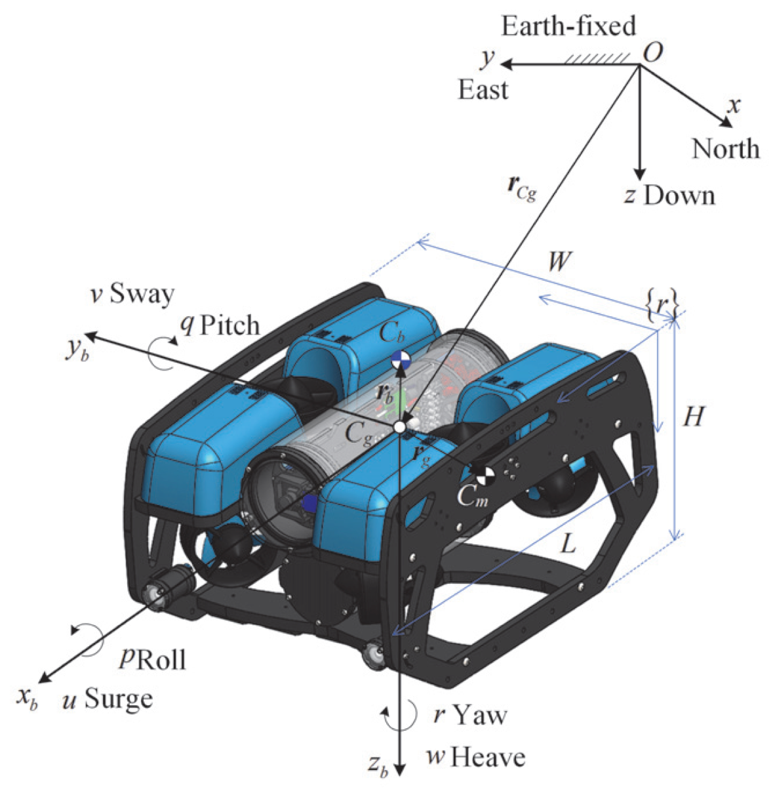
Gambar 2.1 Sistem North-East-Down (NED) inertial frame ($$\mathcal{F}^n$$ - NED) dan body-fixed frame ($$\mathcal{F}^b$$ - FRD) konvensi SNAME (1950) dan Fossen (2021)
2.2.1 North-East-Down (NED) inertial frame (Earth-Fixed NED Frame)
North-East-Down (NED) inertial frame (Earth-Fixed Frame atau North-East-Down / NED) didefinisikan sebagai sistem koordinat stasioner yang terikat pada permukaan bumi:
- Titik Asal ($$O_n$$): Ditetapkan pada lokasi referensi geografis di permukaan perairan atau dermaga peluncuran.
- Sumbu $$x_n$$: Mengarah horizontal ke arah Utara sejati (true North).
- Sumbu $$y_n$$: Mengarah horizontal ke arah Timur sejati (true East).
- Sumbu $$z_n$$: Mengarah vertikal tegak lurus ke bawah (Down) menuju pusat bumi, searah dengan vektor percepatan gravitasi bumi $$\mathbf{g}^n = [0, 0, g]^T$$ di mana $$g = 9.80665 \text{ m/s}^2$$.
Karena kecepatan operasional wahana AUV mikro ($$U < 2.0\text{ m/s}$$) dan radius area jelajah ($$L < 5\text{ km}$$) relatif sangat kecil dibandingkan dengan kecepatan rotasi bumi ($$\Omega_E \approx 7.292 \times 10^{-5}\text{ rad/s}$$) dan jari-jari bumi ($$R_E \approx 6.371 \times 10^6\text{ m}$$), maka rasio percepatan sentrifugal rotasi bumi terhadap gravitasi bernilai [7]:
$$\frac{a_{\text{centrifugal}}}{g} = \frac{\Omega_E^2 R_E}{g} \approx \frac{(7.292 \times 10^{-5})^2 (6.371 \times 10^6)}{9.80665} \approx 0.0034 \ll 1$$
Oleh karena itu, percepatan rotasi bumi dan efek Coriolis bumi dapat diabaikan secara analitis, sehingga kerangka acuan $$\mathcal{F}^n$$ diperlakukan secara valid sebagai kerangka inersia Newtonian sejati [7].
2.2.2 body-fixed frame Wahana (Body-Fixed Frame)
body-fixed frame (Body-Fixed Frame atau Forward-Right-Down / FRD) didefinisikan sebagai sistem koordinat ortogonal yang melekat secara permanen pada struktur fisik wahana AUV dan bergerak bersama wahana:
- Titik Asal Bodi ($$O_b$$): Ditetapkan pada Pusat Geometris Wahana (Center of Origin / CO), yang bertepatan dengan pusat geometris tabung tekanan akrilik utama (electronic enclosure).
- Sumbu Longitudinal ($$x_b$$): Mengarah maju ke arah haluan wahana (Forward / Bow), mendefinisikan gerak translasi Surge.
- Sumbu Transversal ($$y_b$$): Mengarah ke sisi kanan lambung wahana (Starboard), mendefinisikan gerak translasi Sway.
- Sumbu Normal ($$z_b$$): Mengarah tegak lurus ke bawah menembus lunas wahana (Down / Keel), mendefinisikan gerak translasi Heave.
Konvensi formal notasi SNAME (1950) dan Fossen (2021) untuk 6 Degrees of Freedom spasial dirinci secara komprehensif pada Tabel 2.2 [7].
Tabel 2.2 Notasi dan Konvensi 6 Derajat Kebebasan SNAME (1950) & Fossen (2021)
| Derajat Kebebasan (DOF) |
Gerak Translasi / Rotasi |
Gaya & Momen Bodi ($$\boldsymbol{\tau}$$) |
Kecepatan Linier & Sudut Bodi ($$\boldsymbol{\nu}$$) |
Posisi & Sudut Euler Bumi ($$\boldsymbol{\eta}$$) |
| 1 |
Gerak maju-mundur sepanjang sumbu $$x_b$$ (Surge) |
$$X$$ ($$\text{N}$$) |
$$u$$ ($$\text{m/s}$$) |
$$x$$ ($$\text{m}$$) |
| 2 |
Gerak geser lateral sepanjang sumbu $$y_b$$ (Sway) |
$$Y$$ ($$\text{N}$$) |
$$v$$ ($$\text{m/s}$$) |
$$y$$ ($$\text{m}$$) |
| 3 |
Gerak vertikal sepanjang sumbu $$z_b$$ (Heave) |
$$Z$$ ($$\text{N}$$) |
$$w$$ ($$\text{m/s}$$) |
$$z$$ ($$\text{m}$$) |
| 4 |
Gerak rotasi guling mengelilingi sumbu $$x_b$$ (Roll) |
$$K$$ ($$\text{N}\cdot\text{m}$$) |
$$p$$ ($$\text{rad/s}$$) |
$$\phi$$ ($$\text{rad}$$) |
| 5 |
Gerak rotasi angguk mengelilingi sumbu $$y_b$$ (Pitch) |
$$M$$ ($$\text{N}\cdot\text{m}$$) |
$$q$$ ($$\text{rad/s}$$) |
$$\theta$$ ($$\text{rad}$$) |
| 6 |
Gerak rotasi geleng mengelilingi sumbu $$z_b$$ (Yaw) |
$$N$$ ($$\text{N}\cdot\text{m}$$) |
$$r$$ ($$\text{rad/s}$$) |
$$\psi$$ ($$\text{rad}$$) |
Berdasarkan konvensi Tabel 2.2, keadaan spasial wahana AUV direpresentasikan oleh tiga vektor utama berdimensi enam:
-
Vektor Posisi dan Orientasi di $$\mathcal{F}^n$$:
$$\boldsymbol{\eta} = \begin{bmatrix} \boldsymbol{\eta}_1 \ \boldsymbol{\eta}_2 \end{bmatrix} = \begin{bmatrix} x \ y \ z \ \phi \ \theta \ \psi \end{bmatrix} \in \mathbb{R}^6$$
di mana $$\boldsymbol{\eta}_1 = [x, y, z]^T \in \mathbb{R}^3$$ merepresentasikan posisi koordinat kartesian global dalam satuan meter, dan $$\boldsymbol{\eta}_2 = [\phi, \theta, \psi]^T \in \mathbb{R}^3$$ merepresentasikan sudut orientasi Euler (Roll, Pitch, Yaw) dalam satuan radian.
-
Vektor Kecepatan Linier dan Kecepatan Sudut di $$\mathcal{F}^b$$:
$$\boldsymbol{\nu} = \begin{bmatrix} \boldsymbol{\nu}_1 \ \boldsymbol{\nu}_2 \end{bmatrix} = \begin{bmatrix} u \ v \ w \ p \ q \ r \end{bmatrix} \in \mathbb{R}^6$$
di mana $$\boldsymbol{\nu}_1 = [u, v, w]^T \in \mathbb{R}^3$$ adalah kecepatan linier bodi (Surge, Sway, Heave) dalam m/s, dan $$\boldsymbol{\nu}_2 = [p, q, r]^T \in \mathbb{R}^3$$ adalah kecepatan sudut bodi (Roll rate, Pitch rate, Yaw rate) dalam rad/s.
-
generalized forces and moments vector di $$\mathcal{F}^b$$:
$$\boldsymbol{\tau} = \begin{bmatrix} \boldsymbol{\tau}_1 \ \boldsymbol{\tau}_2 \end{bmatrix} = \begin{bmatrix} X \ Y \ Z \ K \ M \ N \end{bmatrix} \in \mathbb{R}^6$$
di mana $$\boldsymbol{\tau}_1 = [X, Y, Z]^T \in \mathbb{R}^3$$ adalah resultan gaya dorong translasi bodi dalam Newton, dan $$\boldsymbol{\tau}_2 = [K, M, N]^T \in \mathbb{R}^3$$ adalah resultan torsi rotasi bodi dalam Newton-meter.
2.2.3 Pemodelan Arus Laut dan Kecepatan Relatif Fluida
Di dalam lingkungan bawah air, gaya hidrodinamika (massa tambah dan redaman fluida) tidak bekerja berdasarkan kecepatan absolut wahana $$\boldsymbol{\nu}$$, melainkan bergantung secara eksklusif pada kecepatan relatif wahana terhadap massa fluida di sekitarnya [5], [7].
Misalkan vektor ocean current velocity di kerangka inersia $$\mathcal{F}^n$$ dimodelkan sebagai aliran translasi horizontal yang bersifat irrotational dan bervariasi lambat (slowly varying current):
$$\mathbf{V}_c^n = \begin{bmatrix} u_c^n \ v_c^n \ w_c^n \ 0 \ 0 \ 0 \end{bmatrix} \in \mathbb{R}^6, \qquad \dot{\mathbf{V}}_c^n \approx \mathbf{0}$$
Transformasi ocean current velocity dari kerangka inersia $$\mathcal{F}^n$$ ke dalam kerangka bodi $$\mathcal{F}^b$$ dinyatakan melalui transpose matriks rotasi linier $$\mathbf{R}b^n(\boldsymbol{\eta}_2)^T = \mathbf{R}_n^b(\boldsymbol{\eta}_2)$$:
$$\boldsymbol{\nu}_c = \begin{bmatrix} \boldsymbol{\nu} \ \boldsymbol{\nu}{c,2} \end{bmatrix} = \begin{bmatrix} \mathbf{R}_n^b(\boldsymbol{\eta}_2) \mathbf{V}^n \ \mathbf{0}_{3 \times 1} \end{bmatrix} = \begin{bmatrix} u_c \ v_c \ w_c \ 0 \ 0 \ 0 \end{bmatrix}$$
Dengan demikian, vektor kecepatan relatif wahana $$\boldsymbol{\nu}_r \in \mathbb{R}^6$$ diformulasikan sebagai [7]:
$$\boldsymbol{\nu}_r = \boldsymbol{\nu} - \boldsymbol{\nu}_c = \begin{bmatrix} u - u_c \ v - v_c \ w - w_c \ p \ q \ r \end{bmatrix} = \begin{bmatrix} u_r \ v_r \ w_r \ p \ q \ r \end{bmatrix}$$
Turunan waktu dari kecepatan relatif di dalam kerangka bergerak bodi diturunkan dengan memperhitungkan percepatan rotasi kerangka acuan (Coriolis acceleration theorem):
$$\dot{\boldsymbol{\nu}}r = \dot{\boldsymbol{\nu}} - \dot{\boldsymbol{\nu}}_c = \dot{\boldsymbol{\nu}} - \begin{bmatrix} \dot{\mathbf{R}}_n^b \mathbf{V}^n \ \mathbf{0}{3 \times 1} \end{bmatrix}$$
Karena $$\dot{\mathbf{R}}_n^b = -\mathbf{S}(\boldsymbol{\nu}_2)\mathbf{R}_n^b$$, di mana $$\mathbf{S}(\boldsymbol{\nu}_2)$$ adalah operator matriks skew-symmetric cross-product, maka:
$$\dot{\boldsymbol{\nu}}_r = \dot{\boldsymbol{\nu}} + \begin{bmatrix} \mathbf{S}(\boldsymbol{\nu}_2)\boldsymbol{\nu} \ \mathbf{0}{3 \times 1} \end{bmatrix} = \dot{\boldsymbol{\nu}} + \begin{bmatrix} \boldsymbol{\nu}_2 \times \boldsymbol{\nu} \ \mathbf{0}_{3 \times 1} \end{bmatrix}$$
Pada wahana bawah air, Pusat Gravitasi (Center of Gravity / CG) berlokasi di $$\mathbf{r}_g = [x_g, y_g, z_g]^T$$, sedangkan Pusat Gaya Apung (Center of Buoyancy / CB) berlokasi di $$\mathbf{r}_b = [x_b, y_b, z_b]^T$$. Berat total wahana di udara adalah $$W = mg$$, dan gaya apung total fluida yang dipindahkan adalah $$B = \rho g \nabla$$, di mana $$\nabla$$ adalah volume air yang dipindahkan oleh lambung wahana [7].
Untuk menjamin wahana tidak mudah terbalik di bawah air, tata letak massa dirancang sedemikian rupa sehingga komponen berat (baterai, ballast timbal, tabung aluminium) diletakkan di bagian paling bawah lunas ($$z_g > 0$$), sedangkan busa apung (syntactic foam) diletakkan di bagian atas bodi ($$z_b < 0$$). Hal ini menghasilkan tinggi metasentris positif:
$$GM_T = z_g - z_b > 0$$
Gaya berat $$W$$ dan gaya apung $$B$$ yang terpisah secara vertikal menghasilkan passive metacentric righting moments:
$$K_{\text{restoring}}(\phi) = -(z_g W - z_b B)\cos\theta\sin\phi$$
$$M_{\text{restoring}}(\theta) = -(z_g W - z_b B)\sin\theta$$
Untuk sudut kemiringan kecil ($$\sin\phi \approx \phi, \sin\theta \approx \theta, \cos\theta \approx 1$$), momen ini berperilaku persis seperti pegas torsi mekanis (torsional stiffness springs):
$$K_{\text{restoring}} \approx -k_\phi \phi, \qquad k_\phi = z_g W - z_b B > 0$$
$$M_{\text{restoring}} \approx -k_\theta \theta, \qquad k_\theta = z_g W - z_b B > 0$$
Frekuensi natural osilasi sudut pada sumbu roll ($$\omega_{n,\phi}$$) dan sumbu pitch ($$\omega_{n,\theta}$$) dirumuskan oleh [7], [31]:
$$\omega_{n,\phi} = \sqrt{\frac{z_g W - z_b B}{I_{xx} - K_{\dot{p}}}}, \qquad \omega_{n,\theta} = \sqrt{\frac{z_g W - z_b B}{I_{yy} - M_{\dot{q}}}}$$
Meskipun kekakuan metasentris ini menjaga orientasi wahana tetap datar secara pasif pada wahana underactuated 6-pendorong, kekakuan ini justru menjadi penghalang besar saat wahana ditugaskan untuk melakukan pitch-hold inspection terhadap struktur miring di dasar laut [3], [21]. Pada wahana over-actuated 8-pendorong, torsi pemulih hidrostatis ini dapat dilawan dan dikendalikan secara presisi oleh aktuasi gaya dorong diferensial vertikal, memungkinkan wahana menahan sudut pitch konstan $$\theta_{\text{ref}} \neq 0$$ tanpa mengalami osilasi liar atau ketidakstabilan [21], [32].
2.3 Penurunan 6-DOF kinematics dan Matriks Jacobian
Kinematika wahana laut mendefinisikan pemetaan geometris murni antara vektor kecepatan bodi $$\boldsymbol{\nu} \in \mathbb{R}^6$$ dengan laju perubahan posisi dan orientasi wahana di kerangka bumi $$\dot{\boldsymbol{\eta}} \in \mathbb{R}^6$$, tanpa melibatkan gaya dan massa penyebab gerak [7]:
$$\dot{\boldsymbol{\eta}} = \mathbf{J}(\boldsymbol{\eta}2)\boldsymbol{\nu} \iff \begin{bmatrix} \dot{\boldsymbol{\eta}}_1 \ \dot{\boldsymbol{\eta}}_2 \end{bmatrix} = \begin{bmatrix} \mathbf{R}_b^n(\boldsymbol{\eta}_2) & \mathbf{0} \ \mathbf{0}{3 \times 3} & \mathbf{T}\Theta(\boldsymbol{\eta}_2) \end{bmatrix} \begin{bmatrix} \boldsymbol{\nu}_1 \ \boldsymbol{\nu}_2 \end{bmatrix}$$
Matriks rotasi $$\mathbf{R}b^n(\boldsymbol{\eta}_2)$$ mentransformasikan kecepatan linier dari kerangka bodi $$\mathcal{F}^b$$ ke kerangka bumi $$\mathcal{F}^n$$. Matriks ini merupakan elemen dari grup ortogonal khusus berdimensi tiga, dinotasikan $$\mathbf{R}_b^n \in SO(3)$$, yang memenuhi sifat fundamental:
$$\mathbf{R}_b^n (\mathbf{R}_b^n)^T = (\mathbf{R}_b^n)^T \mathbf{R}_b^n = \mathbf{I}, \qquad \det(\mathbf{R}_b^n) = +1$$
Transformasi rotasi diturunkan menggunakan konvensi rotasi intrinsik Euler Tait-Bryan dengan urutan kanonikal maritim $$z-y-x$$ (Yaw-Pitch-Roll) [7]:
-
Rotasi Pertama: Sudut Yaw ($$\psi$$) mengelilingi sumbu $$z_n$$:
Rotasi ini menghasilkan kerangka antara pertama $$\mathcal{F}'$$:
$$\mathbf{R}_{z,\psi} = \begin{bmatrix} \cos\psi & -\sin\psi & 0 \ \sin\psi & \cos\psi & 0 \ 0 & 0 & 1 \end{bmatrix}$$
-
Rotasi Kedua: Sudut Pitch ($$\theta$$) mengelilingi sumbu antara $$y'$$:
Rotasi ini menghasilkan kerangka antara kedua $$\mathcal{F}''$$:
$$\mathbf{R}_{y,\theta} = \begin{bmatrix} \cos\theta & 0 & \sin\theta \ 0 & 1 & 0 \ -\sin\theta & 0 & \cos\theta \end{bmatrix}$$
-
Rotasi Ketiga: Sudut Roll ($$\phi$$) mengelilingi sumbu bodi $$x'' = x_b$$:
Rotasi ini menghasilkan kerangka bodi akhir $$\mathcal{F}^b$$:
$$\mathbf{R}_{x,\phi} = \begin{bmatrix} 1 & 0 & 0 \ 0 & \cos\phi & -\sin\phi \ 0 & \sin\phi & \cos\phi \end{bmatrix}$$
Sesuai aturan perkalian rantai transformasi koordinat rotasi intrinsik:
$$\mathbf{R}b^n(\boldsymbol{\eta}_2) = \mathbf{R} \mathbf{R}{y,\theta} \mathbf{R}$$
Perkalian matriks kedua dan ketiga dilakukan terlebih dahulu:
$$\mathbf{A} = \mathbf{R}{y,\theta} \mathbf{R} = \begin{bmatrix} \cos\theta & 0 & \sin\theta \ 0 & 1 & 0 \ -\sin\theta & 0 & \cos\theta \end{bmatrix} \begin{bmatrix} 1 & 0 & 0 \ 0 & \cos\phi & -\sin\phi \ 0 & \sin\phi & \cos\phi \end{bmatrix} = \begin{bmatrix} \cos\theta & \sin\theta\sin\phi & \sin\theta\cos\phi \ 0 & \cos\phi & -\sin\phi \ -\sin\theta & \cos\theta\sin\phi & \cos\theta\cos\phi \end{bmatrix}$$
Mengalikan matriks $$\mathbf{R}_{z,\psi}$$ dengan matriks intermediate $$\mathbf{A}$$ menghasilkan matriks rotasi lengkap:
$$\mathbf{R}_b^n(\boldsymbol{\eta}_2) = \begin{bmatrix} \cos\psi & -\sin\psi & 0 \ \sin\psi & \cos\psi & 0 \ 0 & 0 & 1 \end{bmatrix} \begin{bmatrix} \cos\theta & \sin\theta\sin\phi & \sin\theta\cos\phi \ 0 & \cos\phi & -\sin\phi \ -\sin\theta & \cos\theta\sin\phi & \cos\theta\cos\phi \end{bmatrix}$$
Evaluasi analitis tiap elemen baris dan kolom menghasilkan matriks transformasi rotasi linier definitif:
$$\mathbf{R}_b^n(\boldsymbol{\eta}_2) = \begin{bmatrix} \cos\psi\cos\theta & -\sin\psi\cos\phi + \cos\psi\sin\theta\sin\phi & \sin\psi\sin\phi + \cos\psi\sin\theta\cos\phi \ \sin\psi\cos\theta & \cos\psi\cos\phi + \sin\psi\sin\theta\sin\phi & -\cos\psi\sin\phi + \sin\psi\sin\theta\cos\phi \ -\sin\theta & \cos\theta\sin\phi & \cos\theta\cos\phi \end{bmatrix}$$
Karena sifat ortogonalitas $$\mathbf{R}_b^n \in SO(3)$$, matriks invers transformasi dari kerangka bumi ke kerangka bodi adalah identik dengan matriks transposisinya:
$$\mathbf{R}_n^b(\boldsymbol{\eta}_2) = (\mathbf{R}_b^n(\boldsymbol{\eta}_2))^T = \begin{bmatrix} \cos\psi\cos\theta & \sin\psi\cos\theta & -\sin\theta \ -\sin\psi\cos\phi + \cos\psi\sin\theta\sin\phi & \cos\psi\cos\phi + \sin\psi\sin\theta\sin\phi & \cos\theta\sin\phi \ \sin\psi\sin\phi + \cos\psi\sin\theta\cos\phi & -\cos\psi\sin\phi + \sin\psi\sin\theta\cos\phi & \cos\theta\cos\phi \end{bmatrix}$$
Persamaan skalar kinematika translasi diturunkan dengan mengevaluasi hubungan $$\dot{\boldsymbol{\eta}}_1 = \mathbf{R}_b^n(\boldsymbol{\eta}_2)\boldsymbol{\nu}_1$$:
$$\dot{x} = u(\cos\psi\cos\theta) + v(-\sin\psi\cos\phi + \cos\psi\sin\theta\sin\phi) + w(\sin\psi\sin\phi + \cos\psi\sin\theta\cos\phi)$$
$$\dot{y} = u(\sin\psi\cos\theta) + v(\cos\psi\cos\phi + \sin\psi\sin\theta\sin\phi) + w(-\cos\psi\sin\phi + \sin\psi\sin\theta\cos\phi)$$
$$\dot{z} = u(-\sin\theta) + v(\cos\theta\sin\phi) + w(\cos\theta\cos\phi)$$
Kecepatan sudut bodi wahana $$\boldsymbol{\nu}2 = [p, q, r]^T$$ merepresentasikan proyeksi dari laju perubahan sudut Euler $$\dot{\boldsymbol{\eta}}_2 = [\dot{\phi}, \dot{\theta}, \dot{\psi}]^T$$ ke sumbu-sumbu bodi yang bergerak. Proyeksi ini diturunkan dengan memperhatikan orientasi masing-masing sumbu putar rotasi bertingkat [7]:
$$\boldsymbol{\nu}_2 = \begin{bmatrix} p \ q \ r \end{bmatrix} = \begin{bmatrix} \dot{\phi} \ 0 \ 0 \end{bmatrix} + \mathbf{R}^T \begin{bmatrix} 0 \ \dot{\theta} \ 0 \end{bmatrix} + \mathbf{R}{x,\phi}^T \mathbf{R}^T \begin{bmatrix} 0 \ 0 \ \dot{\psi} \end{bmatrix}$$
Mengevaluasi perkalian proyeksi sudut:
$$\mathbf{R}_{x,\phi}^T \begin{bmatrix} 0 \ \dot{\theta} \ 0 \end{bmatrix} = \begin{bmatrix} 1 & 0 & 0 \ 0 & \cos\phi & \sin\phi \ 0 & -\sin\phi & \cos\phi \end{bmatrix} \begin{bmatrix} 0 \ \dot{\theta} \ 0 \end{bmatrix} = \begin{bmatrix} 0 \ \dot{\theta}\cos\phi \ -\dot{\theta}\sin\phi \end{bmatrix}$$
$$\mathbf{R}{x,\phi}^T \mathbf{R}^T \begin{bmatrix} 0 \ 0 \ \dot{\psi} \end{bmatrix} = \begin{bmatrix} \cos\theta & 0 & -\sin\theta \ \sin\theta\sin\phi & \cos\phi & \cos\theta\sin\phi \ \sin\theta\cos\phi & -\sin\phi & \cos\theta\cos\phi \end{bmatrix} \begin{bmatrix} 0 \ 0 \ \dot{\psi} \end{bmatrix} = \begin{bmatrix} -\dot{\psi}\sin\theta \ \dot{\psi}\sin\phi\cos\theta \ \dot{\psi}\cos\phi\cos\theta \end{bmatrix}$$
Menjumlahkan ketiga komponen proyeksi tersebut:
$$\begin{bmatrix} p \ q \ r \end{bmatrix} = \begin{bmatrix} 1 & 0 & -\sin\theta \ 0 & \cos\phi & \sin\phi\cos\theta \ 0 & -\sin\phi & \cos\phi\cos\theta \end{bmatrix} \begin{bmatrix} \dot{\phi} \ \dot{\theta} \ \dot{\psi} \end{bmatrix} \iff \boldsymbol{\nu}2 = \mathbf{T}\Theta^{-1}(\boldsymbol{\eta}_2)\dot{\boldsymbol{\eta}}_2$$
Untuk memperoleh relasi maju $$\dot{\boldsymbol{\eta}}2 = \mathbf{T}\Theta(\boldsymbol{\eta}2)\boldsymbol{\nu}_2$$, matriks $$\mathbf{B} = \mathbf{T}\Theta^{-1}$$ harus dibalik. Inversi analitis dilakukan secara rigor langkah demi langkah menggunakan metode matriks kofaktor dan adjoin (cofactor-adjugate method) [7]:
-
Perhitungan Determinan $$\det(\mathbf{B})$$:
Ekspansi Laplace sepanjang baris pertama:
$$\det(\mathbf{B}) = 1 \cdot (\cos\phi \cdot \cos\phi\cos\theta - \sin\phi\cos\theta \cdot (-\sin\phi)) - 0 - \sin\theta \cdot 0$$
$$\det(\mathbf{B}) = \cos^2\phi\cos\theta + \sin^2\phi\cos\theta = (\cos^2\phi + \sin^2\phi)\cos\theta = \cos\theta$$
-
Penyusunan Matriks Kofaktor $$\text{Cof}(\mathbf{B})$$:
Elemen kofaktor didefinisikan sebagai $$C_{ij} = (-1)^{i+j} M_{ij}$$:
- $$C_{11} = +(\cos^2\phi\cos\theta + \sin^2\phi\cos\theta) = \cos\theta$$
- $$C_{12} = -(0 - 0) = 0$$
- $$C_{13} = +(0 - 0) = 0$$
- $$C_{21} = -(0 - (-\sin\phi)(-\sin\theta)) = \sin\phi\sin\theta$$
- $$C_{22} = +(1 \cdot \cos\phi\cos\theta - 0) = \cos\phi\cos\theta$$
- $$C_{23} = -(1 \cdot (-\sin\phi) - 0) = \sin\phi$$
- $$C_{31} = +(0 - \cos\phi(-\sin\theta)) = \cos\phi\sin\theta$$
- $$C_{32} = -(1 \cdot \sin\phi\cos\theta - 0) = -\sin\phi\cos\theta$$
- $$C_{33} = +(1 \cdot \cos\phi - 0) = \cos\phi$$
Sehingga matriks kofaktor adalah:
$$\text{Cof}(\mathbf{B}) = \begin{bmatrix} \cos\theta & 0 & 0 \ \sin\phi\sin\theta & \cos\phi\cos\theta & \sin\phi \ \cos\phi\sin\theta & -\sin\phi\cos\theta & \cos\phi \end{bmatrix}$$
-
Penyusunan Matriks Adjoin $$\text{adj}(\mathbf{B}) = \text{Cof}(\mathbf{B})^T$$:
Transposisi dari matriks kofaktor:
$$\text{adj}(\mathbf{B}) = \begin{bmatrix} \cos\theta & \sin\phi\sin\theta & \cos\phi\sin\theta \ 0 & \cos\phi\cos\theta & -\sin\phi\cos\theta \ 0 & \sin\phi & \cos\phi \end{bmatrix}$$
-
Pembagian dengan Determinan $$\cos\theta$$:
$$\mathbf{T}_\Theta(\boldsymbol{\eta}_2) = \frac{1}{\det(\mathbf{B})} \text{adj}(\mathbf{B}) = \frac{1}{\cos\theta} \begin{bmatrix} \cos\theta & \sin\phi\sin\theta & \cos\phi\sin\theta \ 0 & \cos\phi\cos\theta & -\sin\phi\cos\theta \ 0 & \sin\phi & \cos\phi \end{bmatrix}$$
Maka diperoleh angular velocity transformation matrix analitis eksak [7]:
$$\mathbf{T}_\Theta(\boldsymbol{\eta}_2) = \begin{bmatrix} 1 & \sin\phi\tan\theta & \cos\phi\tan\theta \ 0 & \cos\phi & -\sin\phi \ 0 & \frac{\sin\phi}{\cos\theta} & \frac{\cos\phi}{\cos\theta} \end{bmatrix}$$
Persamaan skalar kinematika rotasi sudut Euler adalah:
$$\dot{\phi} = p + q(\sin\phi\tan\theta) + r(\cos\phi\tan\theta)$$
$$\dot{\theta} = q(\cos\phi) - r(\sin\phi)$$
$$\dot{\psi} = q\left(\frac{\sin\phi}{\cos\theta}\right) + r\left(\frac{\cos\phi}{\cos\theta}\right)$$
Dari rumusan matematis matriks $$\mathbf{T}_\Theta(\boldsymbol{\eta}_2)$$, terlihat jelas bahwa ketika sudut pitch mendekati tegak lurus:
$$\theta \to \pm 90^\circ \iff \cos\theta \to 0 \implies \tan\theta \to \pm\infty, \quad \frac{1}{\cos\theta} \to \infty$$
Kondisi hilangnya satu Degrees of Freedom rotasi ini dikenal sebagai Gimbal Lock (singularitas representasi koordinat Euler). Pada manuver inspeksi bawah air yang melibatkan pitch-angle holding hingga sudut vertikal ekstrim ($$\pm 90^\circ$$), integrasi numerik sudut Euler akan mengalami overflow komputasi tak berhingga [7], [27].
Untuk mengatasi singularitas ini, orientasi wahana direpresentasikan menggunakan unit quaternion empat dimensi $$\mathbf{q} \in \mathcal{S}^3$$ [7], [27]:
$$\mathbf{q} = \begin{bmatrix} \eta \ \epsilon_1 \ \epsilon_2 \ \epsilon_3 \end{bmatrix} = \begin{bmatrix} \eta \ \boldsymbol{\epsilon} \end{bmatrix} \in \mathbb{R}^4, \qquad \eta^2 + \boldsymbol{\epsilon}^T\boldsymbol{\epsilon} = \eta^2 + \epsilon_1^2 + \epsilon_2^2 + \epsilon_3^2 = 1$$
di mana $$\eta = \cos(\beta/2)$$ adalah bagian skalar, dan $$\boldsymbol{\epsilon} = \mathbf{n}\sin(\beta/2)$$ adalah bagian vektor kuaternion yang merepresentasikan rotasi sebesar sudut $$\beta$$ mengelilingi sumbu satuan $$\mathbf{n}$$.
Dinamika diferensial kinematika unit kuaternion bersifat linier terhadap kecepatan sudut bodi $$\boldsymbol{\nu}2$$ dan sepenuhnya bebas singularitas di semua sudut orientasi [7], [27]:
$$\begin{bmatrix} \dot{\eta} \ \dot{\boldsymbol{\epsilon}} \end{bmatrix} = \frac{1}{2} \begin{bmatrix} -\boldsymbol{\epsilon}^T \ \eta\mathbf{I} + \mathbf{S}(\boldsymbol{\epsilon}) \end{bmatrix} \boldsymbol{\nu}_2 = \frac{1}{2} \mathbf{E}(\mathbf{q}) \boldsymbol{\nu}_2$$
di mana matriks skew-symmetric cross-product $$\mathbf{S}(\boldsymbol{\epsilon})$$ didefinisikan sebagai:
$$\mathbf{S}(\boldsymbol{\epsilon}) = \begin{bmatrix} 0 & -\epsilon_3 & \epsilon_2 \ \epsilon_3 & 0 & -\epsilon_1 \ -\epsilon_2 & \epsilon_1 & 0 \end{bmatrix}$$
Matriks rotasi $$\mathbf{R}(\mathbf{q})$$ yang ekuivalen dalam representasi kuaternion dinyatakan oleh formula Rodrigues [7]:
$$\mathbf{R}(\mathbf{q}) = (\eta^2 - \boldsymbol{\epsilon}^T\boldsymbol{\epsilon})\mathbf{I}_{3 \times 3} + 2\boldsymbol{\epsilon}\boldsymbol{\epsilon}^T + 2\eta\mathbf{S}(\boldsymbol{\epsilon})$$
2.3.4 kinematic Jacobian matrix Gabungan 6x6
Menggabungkan transformasi translasi linier dan transformasi sudut Euler menghasilkan kinematic Jacobian matrix 6-DOF terpadu $$\mathbf{J}(\boldsymbol{\eta}_2) \in \mathbb{R}^{6 \times 6}$$ [7]:
$$\begin{bmatrix} \dot{x} \ \dot{y} \ \dot{z} \ \dot{\phi} \ \dot{\theta} \ \dot{\psi} \end{bmatrix} = \begin{bmatrix} \cos\psi\cos\theta & -\sin\psi\cos\phi + \cos\psi\sin\theta\sin\phi & \sin\psi\sin\phi + \cos\psi\sin\theta\cos\phi & 0 & 0 & 0 \ \sin\psi\cos\theta & \cos\psi\cos\phi + \sin\psi\sin\theta\sin\phi & -\cos\psi\sin\phi + \sin\psi\sin\theta\cos\phi & 0 & 0 & 0 \ -\sin\theta & \cos\theta\sin\phi & \cos\theta\cos\phi & 0 & 0 & 0 \ 0 & 0 & 0 & 1 & \sin\phi\tan\theta & \cos\phi\tan\theta \ 0 & 0 & 0 & 0 & \cos\phi & -\sin\phi \ 0 & 0 & 0 & 0 & \frac{\sin\phi}{\cos\theta} & \frac{\cos\phi}{\cos\theta} \end{bmatrix} \begin{bmatrix} u \ v \ w \ p \ q \ r \end{bmatrix}$$
Dinamika wahana laut mendeskripsikan hubungan kausal antara gaya dan torsi penyebab gerak dengan percepatan yang dihasilkan pada wahana di dalam media fluida kental (viscous fluid) [7]. Formulasi komprehensif kinetika non-linier 6-DOF wahana bawah air mengacu pada persamaan gerak standar kelautan Fossen (2021) [7]:
$$\mathbf{M}\dot{\boldsymbol{\nu}} + \mathbf{C}{RB}(\boldsymbol{\nu})\boldsymbol{\nu} + \mathbf{C}_A(\boldsymbol{\nu}_r)\boldsymbol{\nu}_r + \mathbf{D}(\boldsymbol{\nu}_r)\boldsymbol{\nu}_r + \mathbf{g}(\boldsymbol{\eta}) = \boldsymbol{\tau} + \boldsymbol{\tau}}$$
atau dalam representasi kecepatan relatif fluida (relative velocity formulation):
$$\mathbf{M}{RB}\dot{\boldsymbol{\nu}} + \mathbf{C}(\boldsymbol{\nu})\boldsymbol{\nu} + \mathbf{M}A\dot{\boldsymbol{\nu}}_r + \mathbf{C}_A(\boldsymbol{\nu}_r)\boldsymbol{\nu}_r + \mathbf{D}(\boldsymbol{\nu}_r)\boldsymbol{\nu}_r + \mathbf{g}(\boldsymbol{\eta}) = \boldsymbol{\tau} + \boldsymbol{\tau}}$$
di mana setiap suku matriks dan vektor gaya didefinisikan secara fisis sebagai berikut [7]:
- $$\mathbf{M} \in \mathbb{R}^{6 \times 6}$$: Tensor massa inersia total sistem, yaitu gabungan antara matriks massa inersia benda tegar $$\mathbf{M}{RB}$$ dan hydrodynamic added mass $$\mathbf{M}_A$$ ($$\mathbf{M} = \mathbf{M} + \mathbf{M}A$$).
- $$\mathbf{C}(\boldsymbol{\nu}) \in \mathbb{R}^{6 \times 6}$$: Matriks gaya inersia semu Coriolis dan sentripetal benda tegar (rigid-body).
- $$\mathbf{C}A(\boldsymbol{\nu}_r) \in \mathbb{R}^{6 \times 6}$$: Matriks percepatan Coriolis dan sentripetal hidrodinamika fluida akibat massa fluida yang ikut terakselerasi.
- $$\mathbf{D}(\boldsymbol{\nu}_r) \in \mathbb{R}^{6 \times 6}$$: Tensor redaman disipasi hidrodinamika fluida non-linier ($$\mathbf{D}(\boldsymbol{\nu}_r) = \mathbf{D}_L + \mathbf{D}(\boldsymbol{\nu}r)$$), yang memadukan efek gesekan kulit laminar viskos (skin friction) dan seretan bentuk kuadratik turbulen (cross-flow drag).
- $$\mathbf{g}(\boldsymbol{\eta}) \in \mathbb{R}^6$$: Vektor hydrostatic restoring forces and moments gabungan antara gaya gravitasi bumi ($$W = mg$$) dan gaya apung Archimedes ($$B = \rho g \nabla$$).
- $$\boldsymbol{\tau} \in \mathbb{R}^6$$: Vektor gaya dan momen kendali generalisasi 6-DOF yang dibangkitkan oleh konfigurasi aktuasi delapan motor pendorong wahana ($$\boldsymbol{\tau} = \mathbf{T}\mathbf{f}$$).
- $$\boldsymbol{\tau}_{\text{ext}} \in \mathbb{R}^6$$: Vektor gaya dan torsi gangguan lingkungan luar tak termodelkan (environmental disturbances seperti arus laut dan fluktuasi gelombang).
- $$\boldsymbol{\nu} = [u, v, w, p, q, r]^T \in \mathbb{R}^6$$: Vektor kecepatan translasi dan rotasi wahana di dalam kerangka bodi $$\mathcal{F}^b$$.
- $$\boldsymbol{\nu}_r = \boldsymbol{\nu} - \boldsymbol{\nu}_c \in \mathbb{R}^6$$: Vektor kecepatan relatif wahana terhadap ocean current velocity ambient $$\boldsymbol{\nu}_c = [u_c, v_c, w_c, 0, 0, 0]^T$$.
- $$\boldsymbol{\eta} = [x, y, z, \phi, \theta, \psi]^T \in \mathbb{R}^6$$: Vektor posisi spasial dan sudut orientasi Euler wahana di dalam kerangka inersia bumi (NED).
Persamaan gerak Fossen 6-DOF di atas diturunkan secara analitis dari first principles melalui penggabungan mekanika benda tegar non-inersial Newton-Euler dengan interaksi gaya mekanika fluida hidrodinamika.
2.4.1 Penurunan Persamaan Gerak Bodi Kaku dari Hukum Newton-Euler
Tinjau wahana sebagai benda tegar berputar dengan massa konstan $$m$$. Titik pusat massa (Center of Gravity / CG) wahana berada pada posisi $$\mathbf{r}_g = [x_g, y_g, z_g]^T$$ relatif terhadap titik asal kerangka bodi $$O_b$$.
Kecepatan linier dari titik pusat massa CG di dalam kerangka bodi diperoleh melalui relasi medan kecepatan kinematika:
$$\mathbf{v}_g = \boldsymbol{\nu}_1 + \boldsymbol{\nu}_2 \times \mathbf{r}_g$$
di mana $$\boldsymbol{\nu}_1 = [u, v, w]^T$$ adalah vektor kecepatan translasi linier dan $$\boldsymbol{\nu}_2 = [p, q, r]^T$$ adalah vektor kecepatan sudut rotasi bodi [7].
1. Persamaan Translasi Linier (Hukum II Newton)
Berdasarkan Hukum II Newton pada kerangka acuan non-inersial bodi yang berotasi dengan kecepatan sudut $$\boldsymbol{\nu}_2$$, turunan total momentum linier terhadap waktu dinyatakan oleh teorema transpor gerak (transport theorem):
$$\mathbf{f}_b = m \frac{d}{dt}\Big|_n (\mathbf{v}_g) = m \left( \dot{\mathbf{v}}_g + \boldsymbol{\nu}_2 \times \mathbf{v}_g \right)$$
Substitusikan ekspresi $$\mathbf{v}_g$$ ke dalam persamaan gaya:
$$\mathbf{f}_b = m \left[ \dot{\boldsymbol{\nu}}_1 + \dot{\boldsymbol{\nu}}_2 \times \mathbf{r}_g + \boldsymbol{\nu}_2 \times (\boldsymbol{\nu}_1 + \boldsymbol{\nu}_2 \times \mathbf{r}_g) \right]$$
$$\mathbf{f}_b = m \dot{\boldsymbol{\nu}}_1 - m (\mathbf{r}_g \times \dot{\boldsymbol{\nu}}_2) + m (\boldsymbol{\nu}_2 \times \boldsymbol{\nu}_1) + m \left[ \boldsymbol{\nu}_2 \times (\boldsymbol{\nu}_2 \times \mathbf{r}_g) \right]$$
Menggunakan notasi matriks skew-symmetric perkalian silang $$\mathbf{a} \times \mathbf{b} = \mathbf{S}(\mathbf{a})\mathbf{b} = -\mathbf{S}(\mathbf{b})\mathbf{a}$$:
$$\mathbf{f}_b = m \dot{\boldsymbol{\nu}}_1 - m \mathbf{S}(\mathbf{r}_g) \dot{\boldsymbol{\nu}}_2 + m \mathbf{S}(\boldsymbol{\nu}_2)\boldsymbol{\nu}_1 - m \mathbf{S}(\boldsymbol{\nu}_2)\mathbf{S}(\mathbf{r}_g)\boldsymbol{\nu}_2$$
2. Persamaan Rotasi Sudut (Persamaan Momentum Angular Euler)
Momentum sudut total wahana terhadap titik asal kerangka bodi $$O_b$$ dinyatakan oleh:
$$\mathbf{h}b = \mathbf{I}_g \boldsymbol{\nu}_2 + m (\mathbf{r}_g \times \boldsymbol{\nu}_1)$$
di mana $$\mathbf{I}_g \in \mathbb{R}^{3 \times 3}$$ adalah rigid-body inertia terhadap pusat massa CG [7]:
$$\mathbf{I}_g = \begin{bmatrix} I & -I_{xy} & -I_{xz} \ -I_{xy} & I_{yy} & -I_{yz} \ -I_{xz} & -I_{yz} & I_{zz} \end{bmatrix}$$
Turunan momentum sudut terhadap waktu pada kerangka bodi menghasilkan torsi total:
$$\mathbf{m}_b = \dot{\mathbf{h}}_b + \boldsymbol{\nu}_2 \times \mathbf{h}_b = \mathbf{I}_g \dot{\boldsymbol{\nu}}_2 + \boldsymbol{\nu}_2 \times (\mathbf{I}_g \boldsymbol{\nu}_2) + m \mathbf{r}_g \times (\dot{\boldsymbol{\nu}}_1 + \boldsymbol{\nu}_2 \times \boldsymbol{\nu}_1)$$
$$\mathbf{m}_b = m \mathbf{S}(\mathbf{r}_g) \dot{\boldsymbol{\nu}}_1 + \mathbf{I}_b \dot{\boldsymbol{\nu}}_2 + \mathbf{S}(\boldsymbol{\nu}_2)(\mathbf{I}_b \boldsymbol{\nu}_2) + m \mathbf{S}(\mathbf{r}_g)\mathbf{S}(\boldsymbol{\nu}_2)\boldsymbol{\nu}_1$$
di mana rigid-body inertia terhadap titik asal bodi $$O_b$$ memenuhi parallel-axis theorem (parallel-axis theorem) [7]:
$$\mathbf{I}_b = \mathbf{I}_g - m \mathbf{S}^2(\mathbf{r}_g)$$
3. Ekspansi Lengkap Enam Persamaan Diferensial Skalar Newton-Euler
Mengekspansikan persamaan vektor gaya $$\mathbf{f}_b = [X, Y, Z]^T$$ dan momen $$\mathbf{m}_b = [K, M, N]^T$$ untuk setiap komponen sumbu koordinat menghasilkan enam persamaan diferensial skalar gerak bodi kaku 6-DOF yang lengkap [7]:
-
Surge (Gaya Translasi Sumbu Longitudinal $$x_b$$):
$$m \left[ \dot{u} - vr + wq - x_g(q^2 + r^2) + y_g(pq - \dot{r}) + z_g(pr + \dot{q}) \right] = \sum X$$
-
Sway (Gaya Translasi Sumbu Lateral $$y_b$$):
$$m \left[ \dot{v} - wp + ur - y_g(r^2 + p^2) + z_g(qr - \dot{p}) + x_g(qp + \dot{r}) \right] = \sum Y$$
-
Heave (Gaya Translasi Sumbu Vertikal $$z_b$$):
$$m \left[ \dot{w} - uq + vp - z_g(p^2 + q^2) + x_g(rp - \dot{q}) + y_g(rq + \dot{p}) \right] = \sum Z$$
-
Roll (Momen Rotasi terhadap Sumbu $$x_b$$):
$$I_{xx}\dot{p} + (I_{zz} - I_{yy})qr - I_{xz}(\dot{r} + pq) + m \left[ y_g(\dot{w} - uq + vp) - z_g(\dot{v} - wp + ur) \right] = \sum K$$
-
Pitch (Momen Rotasi terhadap Sumbu $$y_b$$):
$$I_{yy}\dot{q} + (I_{xx} - I_{zz})rp - I_{xz}(p^2 - r^2) + m \left[ z_g(\dot{u} - vr + wq) - x_g(\dot{w} - uq + vp) \right] = \sum M$$
-
Yaw (Momen Rotasi terhadap Sumbu $$z_b$$):
$$I_{zz}\dot{r} + (I_{yy} - I_{xx})pq - I_{xz}(\dot{p} - qr) + m \left[ x_g(\dot{v} - wp + ur) - y_g(\dot{u} - vr + wq) \right] = \sum N$$
4. Pengelompokan ke dalam Bentuk Matriks Bodi Kaku Fossen
Mengelompokkan suku-suku percepatan linier/sudut ke dalam satu matriks inersia dan suku-suku perkalian kecepatan ke dalam matriks Coriolis-sentripetal menghasilkan representasi state-space matriks standar [7]:
$$\mathbf{M}{RB}\dot{\boldsymbol{\nu}} + \mathbf{C}(\boldsymbol{\nu})\boldsymbol{\nu} = \boldsymbol{\tau}{RB}$$
di mana:
- $$\mathbf{M} \in \mathbb{R}^{6 \times 6}$$ adalah Matriks Massa Inersia Bodi Kaku:
$$\mathbf{M}{RB} = \begin{bmatrix} m\mathbf{I} & -m\mathbf{S}(\mathbf{r}g) \ m\mathbf{S}(\mathbf{r}_g) & \mathbf{I}_b \end{bmatrix} = \begin{bmatrix} m & 0 & 0 & 0 & m z_g & -m y_g \ 0 & m & 0 & -m z_g & 0 & m x_g \ 0 & 0 & m & m y_g & -m x_g & 0 \ 0 & -m z_g & m y_g & I + m(y_g^2+z_g^2) & -I_{xy}-mx_gy_g & -I_{xz}-mx_gz_g \ m z_g & 0 & -m x_g & -I_{xy}-mx_gy_g & I_{yy} + m(x_g^2+z_g^2) & -I_{yz}-my_gz_g \ -m y_g & m x_g & 0 & -I_{xz}-mx_gz_g & -I_{yz}-my_gz_g & I_{zz} + m(x_g^2+y_g^2) \end{bmatrix}$$
Untuk wahana yang dirancang dengan simetri bilateral transversal dan longitudinal ($$x_g \approx 0, y_g \approx 0$$) dan produk inersia silang yang sangat kecil ($$I_{xy} \approx I_{xz} \approx I_{yz} \approx 0$$), matriks inersia bodi kaku disederhanakan menjadi [7]:
$$\mathbf{M}{RB} = \begin{bmatrix} m & 0 & 0 & 0 & m z_g & 0 \ 0 & m & 0 & -m z_g & 0 & 0 \ 0 & 0 & m & 0 & 0 & 0 \ 0 & -m z_g & 0 & I + m z_g^2 & 0 & 0 \ m z_g & 0 & 0 & 0 & I_{yy} + m z_g^2 & 0 \ 0 & 0 & 0 & 0 & 0 & I_{zz} \end{bmatrix} \approx \text{diag}\left[ m, m, m, I_{xx} + m z_g^2, I_{yy} + m z_g^2, I_{zz} \right]$$
5. Penyatuan Gaya Luar Bodi Kaku Menghasilkan Persamaan Fossen Lengkap
Gaya luar total $$\boldsymbol{\tau}{RB}$$ yang bekerja pada bodi kaku merupakan resultan dari gaya-gaya reaksi hidrodinamika fluida $$\boldsymbol{\tau}_H$$, gaya dan torsi pemulih hidrostatis gravitasi dan daya apung $$\boldsymbol{\tau}$$, gaya dorong aktuator pendorong $$\boldsymbol{\tau}$$, serta gangguan lingkungan tak termodelkan $$\boldsymbol{\tau}{\text{ext}}$$ [7]:
$$\boldsymbol{\tau} = \boldsymbol{\tau}H + \boldsymbol{\tau} + \boldsymbol{\tau} + \boldsymbol{\tau}_{\text{ext}}$$
Gaya reaksi hidrodinamika fluida terakselerasi dan disipasi viskos didefinisikan oleh kerangka Fossen sebagai:
$$\boldsymbol{\tau}H = -\mathbf{M}_A\dot{\boldsymbol{\nu}}_r - \mathbf{C}_A(\boldsymbol{\nu}_r)\boldsymbol{\nu}_r - \mathbf{D}(\boldsymbol{\nu}_r)\boldsymbol{\nu}_r$$
sedangkan hydrostatic restoring forces and moments didefinisikan sebagai suku potensial:
$$\boldsymbol{\tau} = -\mathbf{g}(\boldsymbol{\eta})$$
Substitusikan ekspresi gaya luar $$\boldsymbol{\tau}H$$ dan $$\boldsymbol{\tau}$$ ke dalam persamaan gerak bodi kaku Newton-Euler:
$$\mathbf{M}{RB}\dot{\boldsymbol{\nu}} + \mathbf{C}(\boldsymbol{\nu})\boldsymbol{\nu} = -\mathbf{M}A\dot{\boldsymbol{\nu}}_r - \mathbf{C}_A(\boldsymbol{\nu}_r)\boldsymbol{\nu}_r - \mathbf{D}(\boldsymbol{\nu}_r)\boldsymbol{\nu}_r - \mathbf{g}(\boldsymbol{\eta}) + \boldsymbol{\tau} + \boldsymbol{\tau}}$$
Dengan memindahkan seluruh suku hidrodinamika dan pemulih hidrostatis ke ruas kiri persamaan, diperoleh kembali formulasi analitis Persamaan Gerak Hidro6-DOF dynamics Fossen Penuh:
$$\mathbf{M}\dot{\boldsymbol{\nu}} + \mathbf{C}{RB}(\boldsymbol{\nu})\boldsymbol{\nu} + \mathbf{C}_A(\boldsymbol{\nu}_r)\boldsymbol{\nu}_r + \mathbf{D}(\boldsymbol{\nu}_r)\boldsymbol{\nu}_r + \mathbf{g}(\boldsymbol{\eta}) = \boldsymbol{\tau} + \boldsymbol{\tau}}$$
di mana $$\mathbf{M} = \mathbf{M}_{RB} + \mathbf{M}_A$$ adalah tensor massa total sistem. Penjabaran analitis dari masing-masing matriks konstituen hidrodinamika fluida diuraikan secara sistematis pada sub-bab berikut.
2.4.2 Tensor hydrodynamic added mass $$\mathbf{M}_A$$ dan Massa Total $$\mathbf{M}$$
Ketika wahana berakselerasi di dalam fluida kental, fluida di sekitarnya ikut bergerak dan menghasilkan gaya reaksi inersia tambahan yang dimodelkan sebagai hydrodynamic added mass (hydrodynamic added mass) melalui turunan kestabilan SNAME [7]:
$$\mathbf{M}A = -\begin{bmatrix} X} & X_{\dot{v}} & X_{\dot{w}} & X_{\dot{p}} & X_{\dot{q}} & X_{\dot{r}} \ Y_{\dot{u}} & Y_{\dot{v}} & Y_{\dot{w}} & Y_{\dot{p}} & Y_{\dot{q}} & Y_{\dot{r}} \ Z_{\dot{u}} & Z_{\dot{v}} & Z_{\dot{w}} & Z_{\dot{p}} & Z_{\dot{q}} & Z_{\dot{r}} \ K_{\dot{u}} & K_{\dot{v}} & K_{\dot{w}} & K_{\dot{p}} & K_{\dot{q}} & K_{\dot{r}} \ M_{\dot{u}} & M_{\dot{v}} & M_{\dot{w}} & M_{\dot{p}} & M_{\dot{q}} & M_{\dot{r}} \ N_{\dot{u}} & N_{\dot{v}} & N_{\dot{w}} & N_{\dot{p}} & N_{\dot{q}} & N_{\dot{r}} \end{bmatrix}$$
Untuk fluida ideal tak berotasi (potential flow theory), matriks massa tambah bersifat simetris definit positif ($$\mathbf{M}A = \mathbf{M}_A^T \succ 0$$) [7]. Mengingat wahana beroperasi pada kecepatan rendah hingga moderat dengan bentuk simetri tiga bidang, elemen non-diagonal bernilai sangat kecil dibandingkan elemen diagonal utama [1], [7], [21], sehingga tereduksi menjadi matriks diagonal simbolik murni:
$$\mathbf{M}_A = -\text{diag}\left[ X}, Y_{\dot{v}}, Z_{\dot{w}}, K_{\dot{p}}, M_{\dot{q}}, N_{\dot{r}} \right]$$
Dengan menjumlahkan inersia benda tegar dan inersia massa fluida terdefleksi, diperoleh Tensor Massa Total Sistem $$\mathbf{M}$$ dalam bentuk analitis murni:
$$\mathbf{M} = \mathbf{M}{RB} + \mathbf{M}_A = \text{diag}\left[ m - X}, m - Y_{\dot{v}}, m - Z_{\dot{w}}, I_{xx} + m z_g^2 - K_{\dot{p}}, I_{yy} + m z_g^2 - M_{\dot{q}}, I_{zz} - N_{\dot{r}} \right]$$
2.4.3 Matriks Coriolis and centripetal of rigid-body dan Massa Tambah
1. Matriks Coriolis Bodi Kaku $$\mathbf{C}_{RB}(\boldsymbol{\nu})$$
Matriks Coriolis-sentripetal bodi kaku merepresentasikan gaya semu inersia yang muncul akibat gerak wahana di dalam kerangka referensi bodi yang berotasi. Menggunakan representasi skew-symmetric Kirchhoff [7]:
$$\mathbf{C}{RB}(\boldsymbol{\nu}) = \begin{bmatrix} \mathbf{0} & -\mathbf{S}(\mathbf{M}{RB,11}\boldsymbol{\nu}_1 + \mathbf{M}\boldsymbol{\nu}2) \ -\mathbf{S}(\mathbf{M}\boldsymbol{\nu}1 + \mathbf{M}\boldsymbol{\nu}2) & -\mathbf{S}(\mathbf{M}\boldsymbol{\nu}1 + \mathbf{M}\boldsymbol{\nu}2) \end{bmatrix}$$
Untuk kondisi simetri di mana $$\mathbf{r}_g \approx \mathbf{0}$$:
$$\mathbf{C}(\boldsymbol{\nu}) = \begin{bmatrix} 0 & 0 & 0 & 0 & mw & -mv \ 0 & 0 & 0 & -mw & 0 & mu \ 0 & 0 & 0 & mv & -mu & 0 \ 0 & mw & -mv & 0 & I_{zz}r & -I_{yy}q \ -mw & 0 & mu & -I_{zz}r & 0 & I_{xx}p \ mv & -mu & 0 & I_{yy}q & -I_{xx}p & 0 \end{bmatrix}$$
2. added mass Coriolis matrix $$\mathbf{C}_A(\boldsymbol{\nu}_r)$$
added mass Coriolis matrix diturunkan dari energi kinetik fluida terakselerasi [7]:
$$\mathbf{C}A(\boldsymbol{\nu}_r) = \begin{bmatrix} \mathbf{0} & -\mathbf{S}(\mathbf{M}{A,11}\boldsymbol{\nu} + \mathbf{M}{A,12}\boldsymbol{\nu}) \ -\mathbf{S}(\mathbf{M}{A,11}\boldsymbol{\nu} + \mathbf{M}{A,12}\boldsymbol{\nu}) & -\mathbf{S}(\mathbf{M}{A,21}\boldsymbol{\nu} + \mathbf{M}{A,22}\boldsymbol{\nu}) \end{bmatrix}$$
Dengan mengasumsikan matriks massa tambah diagonal:
$$\mathbf{C}A(\boldsymbol{\nu}_r) = \begin{bmatrix} 0 & 0 & 0 & 0 & -Z}w_r & Y_{\dot{v}}v_r \ 0 & 0 & 0 & Z_{\dot{w}}w_r & 0 & -X_{\dot{u}}u_r \ 0 & 0 & 0 & -Y_{\dot{v}}v_r & X_{\dot{u}}u_r & 0 \ 0 & -Z_{\dot{w}}w_r & Y_{\dot{v}}v_r & 0 & -N_{\dot{r}}r & M_{\dot{q}}q \ Z_{\dot{w}}w_r & 0 & -X_{\dot{u}}u_r & N_{\dot{r}}r & 0 & -K_{\dot{p}}p \ -Y_{\dot{v}}v_r & X_{\dot{u}}u_r & 0 & -M_{\dot{q}}q & K_{\dot{p}}p & 0 \end{bmatrix}$$
2.4.4 Analisis Destabilisasi Momen Munk Hidrodinamika (Hydrodynamic Munk Moment)
Fenomena hidrodinamika non-linier yang paling krusial dalam manuver wahana bawah air adalah momen Munk hidrodinamika [7], [34]. Momen ini timbul akibat perbedaan (asymmetry) antara massa tambah transversal ($$Y_{\dot{v}}$$) dan massa tambah longitudinal ($$X_{\dot{u}}$$).
Bukti analitis keberadaan momen Munk diturunkan secara langsung dari evaluasi baris ke-6 (sumbu Yaw $$N$$) pada perkalian added mass Coriolis matrix dengan vektor kecepatan relatif $$\mathbf{C}A(\boldsymbol{\nu}_r)\boldsymbol{\nu}_r$$ [7]:
Perhatikan baris ke-6 matriks $$\mathbf{C}_A(\boldsymbol{\nu}_r)$$:
$$\text{Baris}_6 = \begin{bmatrix} -Y}v_r & X_{\dot{u}}u_r & 0 & -M_{\dot{q}}q & K_{\dot{p}}p & 0 \end{bmatrix}$$
Ketika dikalikan dengan vektor kecepatan relatif fluida $$\boldsymbol{\nu}r = [u_r, v_r, w_r, p, q, r]^T$$:
$$N} = (-Y_{\dot{v}}v_r)(u_r) + (X_{\dot{u}}u_r)(v_r) + 0 - M_{\dot{q}}q p + K_{\dot{p}}p q + 0$$
$$N_{\text{coriolis}} = (X_{\dot{u}} - Y_{\dot{v}})u_r v_r + (K_{\dot{p}} - M_{\dot{q}})pq$$
Komponen translasi murni pada bidang horizontal adalah:
$$N_{\text{Munk}} = (X_{\dot{u}} - Y_{\dot{v}})u_r v_r$$
Untuk wahana AUV yang memiliki penampang frontal lebih ramping dibandingkan penampang sampingnya, besar nilai absolut massa tambah lateral selalu melebihi massa tambah aksial:
$$|Y_{\dot{v}}| > |X_{\dot{u}}| \iff -Y_{\dot{v}} > -X_{\dot{u}} \implies (X_{\dot{u}} - Y_{\dot{v}}) > 0$$
Konsekuensi fisis dari hubungan ini sangat fatal pada wahana yang tidak memiliki aktuasi kompensasi aktif [7], [34]:
- Misalkan wahana melaju ke depan ($$u_r > 0$$) dan mengalami gangguan arus samping kecil dari arah kiri sehingga timbul kecepatan geser ke kanan ($$v_r > 0$$).
- Karena $$(X_{\dot{u}} - Y_{\dot{v}}) > 0$$, maka momen Munk menghasilkan torsi yaw positif:
$$N_{\text{Munk}} > 0$$
- Torsi yaw positif ini memutar haluan wahana semakin ke kanan, memperbesar drift angle, yang pada gilirannya menaikkan nilai $$v_r$$, sehingga memicu momen destabilisasi yang semakin membesar secara eksponensial!
Pada wahana underactuated 6-pendorong, fenomena kopling silang momen Munk ini menyebabkan wahana melenceng dari jalur dan tidak mampu mempertahankan orientasi garis lurus saat melaju pada kecepatan jelajah tinggi [7], [31]. Sebaliknya, pada wahana over-actuated 8-pendorong yang diteliti dalam tugas akhir ini, sistem kendali alokasi gaya dorong terpadu dapat menghitung torsi kompensasi balik secara real-time melalui umpan balik status dari filter EKF, sehingga momen Munk dapat diredam secara aktif (active dynamic suppression) [21], [32].
2.4.5 Tensor Redaman Hidrodinamika Fluida $$\mathbf{D}(\boldsymbol{\nu}_r)$$
Redaman hidrodinamika fluida pada wahana open-frame berkecepatan rendah dimodelkan sebagai gabungan linier antara disipasi gesekan kulit laminar viskos (skin friction) dan seretan bentuk kuadratik turbulen (cross-flow drag) sesuai formulasi Morison [7], [31]:
$$\mathbf{D}(\boldsymbol{\nu}r) = \mathbf{D}_L + \mathbf{D}(\boldsymbol{\nu}_r)$$
-
Matriks Redaman Linier Laminar $$\mathbf{D}_L$$:
Dominan pada kecepatan sangat rendah ($$U < 0.1\text{ m/s}$$) di mana boundary layer fluida bersifat laminar, dinyatakan dalam bentuk matriks diagonal simbolik [7]:
$$\mathbf{D}_L = -\text{diag}[X_u, Y_v, Z_w, K_p, M_q, N_r]$$
-
Matriks Redaman Kuadratik Turbulen $$\mathbf{D}_{NL}(\boldsymbol{\nu}_r)$$:
Dominan pada kecepatan operasi normal ($$U \ge 0.2\text{ m/s}$$), di mana vortex shedding di sekitar struktur rangka terbuka dan tabung silinder menimbulkan seretan kuadratik [7], [31]:
$$\mathbf{D}{NL}(\boldsymbol{\nu}_r) = -\text{diag}[X|u_r|, Y_{v|v|}|v_r|, Z_{w|w|}|w_r|, K_{p|p|}|p|, M_{q|q|}|q|, N_{r|r|}|r|]$$
Total gaya disipasi redaman hidrodinamika pada kerangka bodi dinyatakan oleh formulasi analitis analitis:
$$\mathbf{D}(\boldsymbol{\nu}r)\boldsymbol{\nu}_r = \begin{bmatrix} -(X_u + X|u_r|)u_r \ -(Y_v + Y_{v|v|}|v_r|)v_r \ -(Z_w + Z_{w|w|}|w_r|)w_r \ -(K_p + K_{p|p|}|p|)p \ -(M_q + M_{q|q|}|q|)q \ -(N_r + N_{r|r|}|r|)r \end{bmatrix}$$
2.4.6 Vektor Gaya dan Momen Pemulih Hidrostatis 6-DOF Penuh $$\mathbf{g}(\boldsymbol{\eta})$$
Gaya hidrostatis terdiri dari gaya berat gravitasi $$W = mg$$ yang bekerja vertikal ke bawah pada Pusat Gravitasi $$\mathbf{r}_g = [x_g, y_g, z_g]^T$$, dan gaya apung Archimedes $$B = \rho g \nabla$$ yang bekerja vertikal ke atas pada Pusat Daya Apung $$\mathbf{r}_b = [x_b, y_b, z_b]^T$$ [7].
Transformasi vektor gaya gravitasi dan gaya apung ke kerangka bodi $$\mathcal{F}^b$$ dinyatakan oleh:
$$\mathbf{f}_g^b = \mathbf{R}_n^b(\boldsymbol{\eta}_2) \begin{bmatrix} 0 \ 0 \ W \end{bmatrix} = \begin{bmatrix} -W\sin\theta \ W\cos\theta\sin\phi \ W\cos\theta\cos\phi \end{bmatrix}, \qquad \mathbf{f}_b^b = \mathbf{R}_n^b(\boldsymbol{\eta}_2) \begin{bmatrix} 0 \ 0 \ -B \end{bmatrix} = \begin{bmatrix} B\sin\theta \ -B\cos\theta\sin\phi \ -B\cos\theta\cos\phi \end{bmatrix}$$
Resultan gaya hidrostatis bodi adalah:
$$\mathbf{f}_{\text{restoring}}^b = \mathbf{f}_g^b + \mathbf{f}_b^b = \begin{bmatrix} -(W - B)\sin\theta \ (W - B)\cos\theta\sin\phi \ (W - B)\cos\theta\cos\phi \end{bmatrix}$$
Momen pemulih hidrostatis bodi diturunkan melalui perkalian silang posisi terhadap titik asal $$O_b$$:
$$\boldsymbol{\tau}_{\text{restoring}}^b = (\mathbf{r}_g \times \mathbf{f}_g^b) + (\mathbf{r}_b \times \mathbf{f}_b^b)$$
Karena vektor pemulih didefinisikan sebagai suku pengurang di ruas kiri persamaan gerak ($$\mathbf{g}(\boldsymbol{\eta}) = -\begin{bmatrix} \mathbf{f}{\text{restoring}}^b \ \boldsymbol{\tau}}^b \end{bmatrix}$$), maka diperoleh formulasi umum 6-DOF [7]:
$$\mathbf{g}(\boldsymbol{\eta}) = \begin{bmatrix} (W - B)\sin\theta \ -(W - B)\cos\theta\sin\phi \ -(W - B)\cos\theta\cos\phi \ -(y_g W - y_b B)\cos\theta\cos\phi + (z_g W - z_b B)\cos\theta\sin\phi \ (z_g W - z_b B)\sin\theta + (x_g W - x_b B)\cos\theta\cos\phi \ -(x_g W - x_b B)\cos\theta\sin\phi - (y_g W - y_b B)\sin\theta \end{bmatrix}$$
Pada wahana yang dirancang netral secara apung (neutrally buoyant, $$W \approx B$$) dan pusat koordinat $$O_b$$ berimpit dengan CB ($$\mathbf{r}_b = \mathbf{0}$$) serta massa simetris ($$x_g \approx 0, y_g \approx 0, z_g > 0$$) [7], [21]:
$$\mathbf{g}(\boldsymbol{\eta}) = \begin{bmatrix} 0 \ 0 \ 0 \ z_g W \cos\theta\sin\phi \ z_g W \sin\theta \ 0 \end{bmatrix}$$
Persamaan ini menunjukkan bahwa gaya apung netral menghilangkan gaya hidrostatis translasi, sementara tinggi metasentris $$z_g W > 0$$ menyediakan kekakuan pemulih pada sumbu rotasi roll ($$\phi$$) dan pitch ($$\theta$$).
Operasi otonom AUV di lingkungan laut menghadapi ketidakpastian lingkungan yang tinggi (environmental stochasticity), derau sensor frekuensi tinggi, serta penurunan kualitas visual bawah air [2], [14], [16]. Untuk menjamin estimasi keadaan spasial dan pelacakan objek yang andal dan kokoh, penelitian ini merancang dan memformulasikan Suite Optimal Kalman Filter yang terdiri dari dua tingkatan terpadu [16], [17], [25], [29]:
1. Topside Visual Target Kalman Filter (8D Visual Target Tracking Filter): filter Kalman linier diskrit 8-dimensi untuk melacak bounding box target visual deteksi YOLO monokuler pada laju 30 FPS.
2. Subsea Hydrodynamic Extended Kalman Filter (6-DOF Hydrodynamic Dynamics Estimation Filter): Non-Linear Kalman Filter terperluas (EKF) untuk melakukan sensor fusion IMU dan kedalaman berbasis persamaan dinamika Fossen 6-DOF serta melakukan ocean current disturbance estimation pada laju 50 Hz.
2.5.1 Dasar Teori Estimasi Keadaan Stokastik dan Kriteria MMSE
Estimasi stochastic state bertujuan merekonstruksi vektor status internal suatu sistem dinamika wahana berdasarkan urutan data pengukuran sensor yang terdistorsi oleh derau acak [25]. Tinjau model state-space linier waktu diskrit berdimensi-$$n$$ dengan $$m$$ pengukuran sensor:
$$\mathbf{x}k = \mathbf{A}\mathbf{x}{k-1} + \mathbf{B}\mathbf{u}{k-1} + \mathbf{w}$$
$$\mathbf{z}k = \mathbf{H}_k\mathbf{x}_k + \mathbf{v}_k$$
di mana:
- $$\mathbf{x}_k \in \mathbb{R}^n$$ adalah vektor keadaan sistem pada langkah waktu ke-$$k$$.
- $$\mathbf{u} \in \mathbb{R}^p$$ adalah vektor masukan kendali deterministik.
- $$\mathbf{z}k \in \mathbb{R}^m$$ adalah vektor pengukuran dari instrumen sensor.
- $$\mathbf{A} \in \mathbb{R}^{n \times n}$$ dan $$\mathbf{H}_k \in \mathbb{R}^{m \times n}$$ adalah matriks transisi keadaan dan matriks model pengukuran.
Ketidakpastian dinamika dan ketidaksempurnaan sensor dimodelkan melalui dua vektor derau Gaussian putih (zero-mean white Gaussian noise):
$$\mathbf{w}k \sim \mathcal{N}(\mathbf{0}, \mathbf{Q}_k), \qquad \mathbb{E}[\mathbf{w}_k \mathbf{w}_j^T] = \mathbf{Q}_k \delta$$
$$\mathbf{v}k \sim \mathcal{N}(\mathbf{0}, \mathbf{R}_k), \qquad \mathbb{E}[\mathbf{v}_k \mathbf{v}_j^T] = \mathbf{R}_k \delta$$
di mana $$\mathbf{Q}_k \succeq 0$$ adalah covariance matrixprocess noise dan $$\mathbf{R}_k \succ 0$$ adalah covariance matrixmeasurement noise. Kedua derau diasumsikan saling bebas: $$\mathbb{E}[\mathbf{w}_k \mathbf{v}_j^T] = \mathbf{0}, \forall k, j$$.
Vektor keadaan $$\mathbf{x}_k$$ diperlakukan sebagai variabel acak dengan nilai ekspektasi (rata-rata estimasi) $$\hat{\mathbf{x}}_k = \mathbb{E}[\mathbf{x}_k]$$ dan covariance matrix galat estimasi $$\mathbf{P}_k \in \mathbb{R}^{n \times n}$$:
$$\mathbf{P}_k = \text{Cov}(\mathbf{x}_k - \hat{\mathbf{x}}_k) = \mathbb{E}\left[ (\mathbf{x}_k - \hat{\mathbf{x}}_k)(\mathbf{x}_k - \hat{\mathbf{x}}_k)^T \right]$$
Kriteria Minimum Mean-Square Error (MMSE)
filter Kalman dirancang berdasarkan kriteria Minimum Mean-Square Error (MMSE), yaitu mencari penaksir keadaan optimal $$\hat{\mathbf{x}}_k$$ yang meminimalkan ekspektasi nilai galat kuadratik total [25]:
$$J = \mathbb{E}\left[ |\mathbf{x}_k - \hat{\mathbf{x}}_k|^2 \mid \mathbf{Z}^k \right] = \text{Tr}(\mathbf{P}_k)$$
di mana $$\mathbf{Z}^k = {\mathbf{z}_1, \mathbf{z}_2, \dots, \mathbf{z}_k}$$ merepresentasikan riwayat seluruh pengukuran sensor hingga langkah waktu ke-$$k$$.
Untuk sistem dinamika linier berderau Gaussian, penaksir yang meminimalkan kriteria penalti kuadratik MMSE ini identik secara eksak dengan nilai ekspektasi bersyarat keadaan terhadap pengukuran (conditional expectation) [25]:
$$\hat{\mathbf{x}}_{\text{MMSE}} = \mathbb{E}[\mathbf{x}_k \mid \mathbf{Z}^k]$$
Karakteristik invarian linearitas distribusi Gaussian menjamin bahwa distribusi posterior tetap berdistribusi Gaussian, sehingga estimasi keadaan optimal dapat diperbarui secara rekursif hanya dengan mempropagasi vektor rata-rata $$\hat{\mathbf{x}}_k$$ dan covariance matrix $$\mathbf{P}_k$$ tanpa perlu menyimpan seluruh riwayat data masa lalu [25].
2.5.2 Derivasi Lengkap Discrete Kalman Filter (DKF) dan Bentuk Kovariansi Joseph
Model state-space linier waktu diskrit diformulasikan sebagai berikut [16], [25]:
$$\mathbf{x}k = \mathbf{A}\mathbf{x}{k-1} + \mathbf{B}\mathbf{u}{k-1} + \mathbf{w}$$
$$\mathbf{z}k = \mathbf{H}_k\mathbf{x}_k + \mathbf{v}_k$$
di mana:
- $$\mathbf{A} \in \mathbb{R}^{n \times n}$$: state transition matrix.
- $$\mathbf{B}{k-1} \in \mathbb{R}^{n \times p}$$: Matriks input kendali.
- $$\mathbf{H}_k \in \mathbb{R}^{m \times n}$$: Matriks model pengukuran sensor.
- $$\mathbf{w} \sim \mathcal{N}(\mathbf{0}, \mathbf{Q}{k-1})$$: process noise putih Gaussian dengan kovariansi $$\mathbf{Q} \succeq 0$$.
- $$\mathbf{v}_k \sim \mathcal{N}(\mathbf{0}, \mathbf{R}_k)$$: measurement noise putih Gaussian dengan kovariansi $$\mathbf{R}_k \succ 0$$.
- Kedua derau diasumsikan saling bebas: $$\mathbb{E}[\mathbf{w}_i \mathbf{v}_j^T] = \mathbf{0}, \forall i, j$$.
Siklus rekursif Kalman Filter terdiri dari dua langkah utama [25]:
1. Tahap Prediksi (Time Update / Prior Step)
Prediksi keadaan prior $$\hat{\mathbf{x}}k^-$$ dihitung dengan mengambil ekspektasi bersyarat:
$$\hat{\mathbf{x}}_k^- = \mathbb{E}[\mathbf{x}_k \mid \mathbf{Z}^{k-1}] = \mathbf{A}\hat{\mathbf{x}}{k-1}^+ + \mathbf{B}\mathbf{u}{k-1}$$
Galat estimasi prior dinyatakan sebagai:
$$\mathbf{e}_k^- = \mathbf{x}_k - \hat{\mathbf{x}}_k^- = (\mathbf{A}\mathbf{x}{k-1} + \mathbf{B}\mathbf{u}{k-1} + \mathbf{w}) - (\mathbf{A}{k-1}\hat{\mathbf{x}}^+ + \mathbf{B}{k-1}\mathbf{u}) = \mathbf{A}{k-1}\mathbf{e}^+ + \mathbf{w}_{k-1}$$
covariance matrix galat prior $$\mathbf{P}k^-$$ adalah:
$$\mathbf{P}_k^- = \mathbb{E}[ \mathbf{e}_k^- (\mathbf{e}_k^-)^T ] = \mathbb{E}[ (\mathbf{A}\mathbf{e}{k-1}^+ + \mathbf{w}) (\mathbf{A}{k-1}\mathbf{e}^+ + \mathbf{w}{k-1})^T ]$$
Karena process noise $$\mathbf{w}$$ tidak berkorelasi dengan galat estimasi masa lalu $$\mathbf{e}{k-1}^+$$, suku-suku perkalian silang bernilai nol:
$$\mathbf{P}_k^- = \mathbf{A} \mathbf{P}{k-1}^+ \mathbf{A}^T + \mathbf{Q}_{k-1}$$
2. Tahap Pembaruan Pengukuran (Measurement Update / Posterior Step)
Ketika pengukuran baru $$\mathbf{z}_k$$ diterima, innovation residual didefinisikan sebagai selisih antara pengukuran aktual dan estimasi pengukuran prior [25]:
$$\tilde{\mathbf{y}}_k = \mathbf{z}_k - \mathbf{H}_k \hat{\mathbf{x}}_k^-$$
Kovariansi inovasi $$\mathbf{S}_k$$ dihitung sebagai:
$$\mathbf{S}_k = \mathbb{E}[\tilde{\mathbf{y}}_k \tilde{\mathbf{y}}_k^T] = \mathbb{E}[ (\mathbf{H}_k \mathbf{e}_k^- + \mathbf{v}_k)(\mathbf{H}_k \mathbf{e}_k^- + \mathbf{v}_k)^T ] = \mathbf{H}_k \mathbf{P}_k^- \mathbf{H}_k^T + \mathbf{R}_k$$
Estimasi keadaan posterior $$\hat{\mathbf{x}}_k^+$$ dikoreksi secara linier menggunakan matriks penguatan (gain matrix) $$\mathbf{K}_k$$:
$$\hat{\mathbf{x}}_k^+ = \hat{\mathbf{x}}_k^- + \mathbf{K}_k \tilde{\mathbf{y}}_k = \hat{\mathbf{x}}_k^- + \mathbf{K}_k (\mathbf{z}_k - \mathbf{H}_k \hat{\mathbf{x}}_k^-)$$
Galat estimasi posterior adalah:
$$\mathbf{e}_k^+ = \mathbf{x}_k - \hat{\mathbf{x}}_k^+ = \mathbf{x}_k - (\hat{\mathbf{x}}_k^- + \mathbf{K}_k (\mathbf{H}_k \mathbf{x}_k + \mathbf{v}_k - \mathbf{H}_k \hat{\mathbf{x}}_k^-)) = (\mathbf{I} - \mathbf{K}_k \mathbf{H}_k)\mathbf{e}_k^- - \mathbf{K}_k \mathbf{v}_k$$
covariance matrix galat posterior $$\mathbf{P}_k^+$$ dievaluasi untuk sebarang gain $$\mathbf{K}_k$$:
$$\mathbf{P}_k^+ = \mathbb{E}[ \mathbf{e}_k^+ (\mathbf{e}_k^+)^T ] = \mathbb{E}[ ((\mathbf{I} - \mathbf{K}_k \mathbf{H}_k)\mathbf{e}_k^- - \mathbf{K}_k \mathbf{v}_k) ((\mathbf{I} - \mathbf{K}_k \mathbf{H}_k)\mathbf{e}_k^- - \mathbf{K}_k \mathbf{v}_k)^T ]$$
Karena derau sensor $$\mathbf{v}_k$$ saling bebas terhadap galat prior $$\mathbf{e}_k^-$$, maka diperoleh Bentuk Kovariansi Joseph (Joseph Form Covariance) [25]:
$$\mathbf{P}_k^+ = (\mathbf{I} - \mathbf{K}_k \mathbf{H}_k) \mathbf{P}_k^- (\mathbf{I} - \mathbf{K}_k \mathbf{H}_k)^T + \mathbf{K}_k \mathbf{R}_k \mathbf{K}_k^T$$
Bentuk Joseph ini secara komputasional menjamin bahwa covariance matrix $$\mathbf{P}_k^+$$ selalu simetris dan definit positif, bahkan di bawah galat pembulatan aritmatika komputer berpresisi terbatas (numerical round-off errors).
3. Penurunan optimal Kalman gain (Optimal Kalman Gain)
Untuk meminimalkan jejak covariance matrix galat posterior $$J = \text{Tr}(\mathbf{P}_k^+)$$, lakukan diferensiasi matriks terhadap $$\mathbf{K}_k$$:
Ekspansi bentuk Joseph:
$$\mathbf{P}_k^+ = \mathbf{P}_k^- - \mathbf{K}_k \mathbf{H}_k \mathbf{P}_k^- - \mathbf{P}_k^- \mathbf{H}_k^T \mathbf{K}_k^T + \mathbf{K}_k (\mathbf{H}_k \mathbf{P}_k^- \mathbf{H}_k^T + \mathbf{R}_k) \mathbf{K}_k^T$$
Mengambil turunan trace parsial $$\frac{\partial \text{Tr}(\mathbf{P}_k^+)}{\partial \mathbf{K}_k} = \mathbf{0}$$:
$$\frac{\partial \text{Tr}(\mathbf{P}_k^+)}{\partial \mathbf{K}_k} = -2 (\mathbf{P}_k^- \mathbf{H}_k^T)^T + 2 \mathbf{K}_k (\mathbf{H}_k \mathbf{P}_k^- \mathbf{H}_k^T + \mathbf{R}_k) = \mathbf{0}$$
$$\mathbf{K}_k (\mathbf{H}_k \mathbf{P}_k^- \mathbf{H}_k^T + \mathbf{R}_k) = \mathbf{P}_k^- \mathbf{H}_k^T$$
Karena $$\mathbf{S}_k = (\mathbf{H}_k \mathbf{P}_k^- \mathbf{H}_k^T + \mathbf{R}_k)$$ bernilai definit positif (dijamin oleh $$\mathbf{R}_k \succ 0$$), maka inversnya selalu ada, menghasilkan Optimal Kalman Gain [16], [25]:
$$\mathbf{K}_k = \mathbf{P}_k^- \mathbf{H}_k^T \left( \mathbf{H}_k \mathbf{P}_k^- \mathbf{H}_k^T + \mathbf{R}_k \right)^{-1} = \mathbf{P}_k^- \mathbf{H}_k^T \mathbf{S}_k^{-1}$$
Jika penguatan optimal $$\mathbf{K}_k$$ disubstitusikan ke dalam bentuk Joseph, persamaan kovariansi posterior tereduksi menjadi bentuk kanonikal:
$$\mathbf{P}_k^+ = (\mathbf{I} - \mathbf{K}_k \mathbf{H}_k) \mathbf{P}_k^-$$
2.5.3 Derivasi Extended Kalman Filter (EKF) untuk Sistem Dinamika Non-Linier
Pada kenyataannya, dinamika wahana laut Fossen dan proyeksi optik kamera bersifat sangat non-linier [7], [25]:
$$\mathbf{x}k = \mathbf{f}(\mathbf{x}, \mathbf{u}{k-1}) + \mathbf{w}$$
$$\mathbf{z}_k = \mathbf{h}(\mathbf{x}_k) + \mathbf{v}_k$$
di mana $$\mathbf{f}: \mathbb{R}^n \times \mathbb{R}^p \to \mathbb{R}^n$$ dan $$\mathbf{h}: \mathbb{R}^n \to \mathbb{R}^m$$ adalah fungsi-fungsi non-linier yang terdiferensialkan mulus (smooth $$C^1$$ mappings).
Dalam sistem non-linier, transformasi fungsi non-linier merusak sifat Gaussianitas distribusi probabilitas (breakdown of Gaussianity). EKF menyelesaikan masalah ini dengan melakukan linearisasi deret Taylor orde pertama secara adaptif di sekitar titik operasi estimasi terbaik saat ini [25]:
$$\mathbf{f}(\mathbf{x}{k-1}) \approx \mathbf{f}(\hat{\mathbf{x}}^+) + \mathbf{F}{k-1} (\mathbf{x} - \hat{\mathbf{x}}{k-1}^+)$$
$$\mathbf{h}(\mathbf{x}_k) \approx \mathbf{h}(\hat{\mathbf{x}}_k^-) + \mathbf{H}_k (\mathbf{x}_k - \hat{\mathbf{x}}_k^-)$$
di mana matriks Jacobian sistem dinamis $$\mathbf{F}$$ dan Jacobian pengukuran $$\mathbf{H}k$$ dievaluasi melalui turunan parsial multivariabel:
$$\mathbf{F} = \left. \frac{\partial \mathbf{f}}{\partial \mathbf{x}} \right|{\hat{\mathbf{x}}^+, \mathbf{u}{k-1}} \in \mathbb{R}^{n \times n}, \qquad \mathbf{H}_k = \left. \frac{\partial \mathbf{h}}{\partial \mathbf{x}} \right|}_k^-} \in \mathbb{R}^{m \times n}$$
Struktur persamaan rekursif EKF diskrit dinyatakan oleh [25], [29]:
1. Prediksi Keadaan: $$\hat{\mathbf{x}}k^- = \mathbf{f}(\hat{\mathbf{x}}^+, \mathbf{u}{k-1})$$
2. Prediksi Kovariansi: $$\mathbf{P}_k^- = \mathbf{F} \mathbf{P}{k-1}^+ \mathbf{F}^T + \mathbf{Q}_{k-1}$$
3. Residu Inovasi: $$\tilde{\mathbf{y}}_k = \mathbf{z}_k - \mathbf{h}(\hat{\mathbf{x}}_k^-)$$
4. Kovariansi Inovasi: $$\mathbf{S}_k = \mathbf{H}_k \mathbf{P}_k^- \mathbf{H}_k^T + \mathbf{R}_k$$
5. Optimal Kalman Gain: $$\mathbf{K}_k = \mathbf{P}_k^- \mathbf{H}_k^T \mathbf{S}_k^{-1}$$
6. Pembaruan Keadaan: $$\hat{\mathbf{x}}_k^+ = \hat{\mathbf{x}}_k^- + \mathbf{K}_k \tilde{\mathbf{y}}_k$$
7. Pembaruan Kovariansi: $$\mathbf{P}_k^+ = (\mathbf{I} - \mathbf{K}_k \mathbf{H}_k) \mathbf{P}_k^- (\mathbf{I} - \mathbf{K}_k \mathbf{H}_k)^T + \mathbf{K}_k \mathbf{R}_k \mathbf{K}_k^T$$
Persepsi visual bawah air yang diperoleh dari kamera monokuler rentan terhadap distorsi optik, turbiditas air, hamburan cahaya, partikel tersuspensi (marine snow), serta bayangan dinamis [2], [14]. Arsitektur deep learning YOLO yang dijalankan pada stasiun permukaan memprediksi koordinat bounding box target secara frame-by-frame. Namun, deteksi visual mentah ini menghasilkan centroid jitter, fluktuasi skala, false positives, dan kehilangan deteksi sesaat saat terjadi temporary visual occlusion [2], [16], [17].
Untuk mengatasi degradasi optik ini, dirancang modul Topside Visual Target Kalman Filter berbasis kinematic model stokastik Continuous White Noise Acceleration (CWNA) [16], [25].
visual tracking state vector diformulasikan dalam ruang koordinat citra piksel berdimensi delapan:
$$\mathbf{x}_k = \begin{bmatrix} x_k \ y_k \ s_k \ r_k \ \dot{x}_k \ \dot{y}_k \ \dot{s}_k \ \dot{r}_k \end{bmatrix} \in \mathbb{R}^8$$
di mana:
- $$x_k, y_k$$: Koordinat piksel horizontal dan vertikal dari titik pusat (center) bounding box.
- $$s_k$$: skala luasan area bounding box ($$s = w \times h$$ dalam piksel kuadrat), yang berbanding terbalik dengan kuadrat jarak relatif wahana ke target ($$s \propto 1/d^2$$).
- $$r_k$$: rasio aspek dimensi bounding box ($$r = w/h$$).
- $$\dot{x}_k, \dot{y}_k, \dot{s}_k, \dot{r}_k$$: Laju kecepatan perubahan temporal (first time-derivatives) dari masing-masing parameter geometris citra.
2. Model Stokastik Continuous White Noise Acceleration (CWNA)
Gerakan target di bidang proyeksi citra dimodelkan sebagai proses kinematika orde kedua yang didorong oleh derau putih kontinu Gaussian berkepekatan spektral daya $$\tilde{q}$$ [25]:
$$\ddot{\mathbf{p}}(t) = \mathbf{w}(t), \qquad \mathbb{E}[\mathbf{w}(t)\mathbf{w}^T(\tau)] = \tilde{\mathbf{Q}} \delta(t - \tau)$$
di mana $$\mathbf{p}(t) = [x, y, s, r]^T$$ dan $$\tilde{\mathbf{Q}} = \text{diag}[\sigma_x^2, \sigma_y^2, \sigma_s^2, \sigma_r^2]$$.
Bentuk diferensial state-space kontinu dinyatakan oleh:
$$\dot{\mathbf{x}}(t) = \mathbf{F}c \mathbf{x}(t) + \mathbf{L}_c \mathbf{w}(t)$$
$$\mathbf{F}_c = \begin{bmatrix} \mathbf{0} & \mathbf{I}{4 \times 4} \ \mathbf{0} & \mathbf{0}{4 \times 4} \end{bmatrix} \in \mathbb{R}^{8 \times 8}, \qquad \mathbf{L}_c = \begin{bmatrix} \mathbf{0} \ \mathbf{I}_{4 \times 4} \end{bmatrix} \in \mathbb{R}^{8 \times 4}$$
3. Diskritisasi Eksak Matriks Transisi Keadaan
Solusi analitis persamaan keadaan kontinu pada selang waktu pencuplikan $$\Delta t$$ (di mana $$\Delta t = 1/30\text{ s} \approx 0.0333\text{ s}$$ untuk kamera 30 FPS) dievaluasi melalui deret matriks eksponensial:
$$\mathbf{A}(\Delta t) = e^{\mathbf{F}c \Delta t} = \mathbf{I} + \mathbf{F}c \Delta t + \frac{1}{2!} \mathbf{F}_c^2 \Delta t^2 + \dots$$
Karena $$\mathbf{F}_c^2 = \mathbf{0}$$ (bersifat nilpoten orde 2), deret Taylor terputus secara eksak:
$$\mathbf{A}(\Delta t) = \begin{bmatrix} \mathbf{I}{4 \times 4} & \Delta t \mathbf{I} \ \mathbf{0}{4 \times 4} & \mathbf{I} \end{bmatrix} = \begin{bmatrix} 1 & 0 & 0 & 0 & \Delta t & 0 & 0 & 0 \ 0 & 1 & 0 & 0 & 0 & \Delta t & 0 & 0 \ 0 & 0 & 1 & 0 & 0 & 0 & \Delta t & 0 \ 0 & 0 & 0 & 1 & 0 & 0 & 0 & \Delta t \ 0 & 0 & 0 & 0 & 1 & 0 & 0 & 0 \ 0 & 0 & 0 & 0 & 0 & 1 & 0 & 0 \ 0 & 0 & 0 & 0 & 0 & 0 & 1 & 0 \ 0 & 0 & 0 & 0 & 0 & 0 & 0 & 1 \end{bmatrix}$$
4. Diskritisasi Eksak Kovariansi Derau Proses
Kovariansi process noise diskrit dihitung secara eksak melalui integral konvolusi matriks eksponensial Van Loan [25]:
$$\mathbf{Q}(\Delta t) = \int_0^{\Delta t} e^{\mathbf{F}_c \tau} \mathbf{L}_c \tilde{\mathbf{Q}} \mathbf{L}_c^T e^{\mathbf{F}_c^T \tau} \, d\tau$$
Substitusi $$e^{\mathbf{F}_c \tau} \mathbf{L}_c = \begin{bmatrix} \tau \mathbf{I}_4 \ \mathbf{I}_4 \end{bmatrix}$$ menghasilkan:
$$\mathbf{Q}(\Delta t) = \int_0^{\Delta t} \begin{bmatrix} \tau^2 \tilde{\mathbf{Q}} & \tau \tilde{\mathbf{Q}} \ \tau \tilde{\mathbf{Q}} & \tilde{\mathbf{Q}} \end{bmatrix} d\tau = \begin{bmatrix} \frac{\Delta t^3}{3} \tilde{\mathbf{Q}} & \frac{\Delta t^2}{2} \tilde{\mathbf{Q}} \ \frac{\Delta t^2}{2} \tilde{\mathbf{Q}} & \Delta t \tilde{\mathbf{Q}} \end{bmatrix}$$
Formulasi eksak ini secara simultan memodelkan ketidakpastian percepatan target dan korelasi silang temporal antara posisi dan kecepatan visual [16], [25].
5. Kovariansi Pengukuran Adaptif Berbobot Konfidensi YOLO
Model pengukuran sensor visual menghubungkan vektor keadaan 8D dengan 4 parameter observasi bounding box dari detektor YOLO:
$$\mathbf{z}k = \begin{bmatrix} z_x \ z_y \ z_s \ z_r \end{bmatrix}_k = \mathbf{H} \mathbf{x}_k + \mathbf{v}_k, \qquad \mathbf{H} = \begin{bmatrix} \mathbf{I} & \mathbf{0}_{4 \times 4} \end{bmatrix} \in \mathbb{R}^{4 \times 8}$$
Setiap keluaran bounding box dari jaringan syaraf YOLO menyertakan confidence score $$\text{conf}k \in [0, 1]$$. Pada kondisi air keruh, deteksi dengan nilai keyakinan rendah mengandung variansi derau spasial yang jauh lebih besar. Untuk mengakomodasi fenomena ini secara stokastik, dikembangkan formulasi kovariansi pengukuran adaptif non-linier [16], [17]:
$$\mathbf{R}_k(\text{conf}_k) = \mathbf{R}_0 \cdot \left[ 1 + \alpha} \left( \frac{1 - \text{conf}k}{\text{conf}_k + \epsilon} \right)^2 \right]$$
di mana:
- $$\mathbf{R}_0 = \text{diag}[\sigma^2, \sigma_{z,y}^2, \sigma_{z,s}^2, \sigma_{z,r}^2]$$ adalah nominal covariance saat deteksi sempurna ($$\text{conf}k \to 1.0$$).
- $$\alpha} \ge 1.0$$ adalah faktor skala penalti ketidakpastian deteksi visual.
- $$\epsilon = 10^{-4}$$ adalah konstanta regularisasi untuk mencegah pembagian dengan nol.
Dinamika adaptif ini memberikan efek kendali estimasi yang sangat elegan:
- Saat deteksi target sangat jelas dan tajam ($$\text{conf}_k \approx 0.95$$), suku penalti mendekati nol sehingga $$\mathbf{R}_k \approx \mathbf{R}_0$$. Kalman gain $$\mathbf{K}_k$$ membesar, mempercepat pembaruan estimasi keadaan terhadap pengukuran baru.
- Saat deteksi target terdistorsi oleh gelembung air atau partikel keruh ($$\text{conf}_k \approx 0.3$$), nilai $$\mathbf{R}_k$$ melonjak secara kuadratik. Hal ini menyebabkan penguatan Kalman mengecil secara drastis ($$\mathbf{K}_k \to \mathbf{0}$$), sehingga filter secara otomatis menolak (reject) measurement noise yang tidak akurat dan lebih mempercayai prediksi kinematic model internalnya!
6. Outlier Innovation Gating Berbasis Jarak Mahalanobis
Untuk mencegah filter terganggu oleh false positive clutter, residu inovasi $$\tilde{\mathbf{y}}_k = \mathbf{z}_k - \mathbf{H}\hat{\mathbf{x}}_k^-$$ divalidasi menggunakan uji hipotesis kuadratik Jarak Mahalanobis (Mahalanobis distance*) [25]:
$$D_M^2 = \tilde{\mathbf{y}}_k^T \mathbf{S}_k^{-1} \tilde{\mathbf{y}}_k = \tilde{\mathbf{y}}_k^T \left( \mathbf{H}\mathbf{P}_k^-\mathbf{H}^T + \mathbf{R}_k \right)^{-1} \tilde{\mathbf{y}}_k$$
Di bawah hipotesis nol (pengukuran target benar terdistribusi Gaussian), besaran skalar $$D_M^2$$ mengikuti distribusi Chi-kuadrat dengan Degrees of Freedom sama dengan dimensi pengukuran ($$m = 4$$):
$$D_M^2 \sim \chi^2(4)$$
Kriteria penerimaan pengukuran ditetapkan berdasarkan gating threshold pada tingkat signifikansi $$\alpha_{\text{gate}} = 0.05$$ (selang kepercayaan 95%):
$$\gamma_{\text{gate}} = \chi_{0.95}^2(4) \approx 9.488$$
Aturan keputusan validasi deteksi visual dirumuskan sebagai:
$$\begin{cases} \text{Diterima (Valid)}: & D_M^2 \le \gamma_{\text{gate}} \implies \text{Lakukan pembaruan Kalman (Update Posterior)} \ \text{Ditolak (Outlier)}: & D_M^2 > \gamma_{\text{gate}} \implies \text{Abaikan pengukuran, lakukan propagasi dead-reckoning} \end{cases}$$
7. Penanganan Oklusi Visual dan Propagasi Dead-Reckoning
Ketika target visual terhalang total oleh struktur bawah air atau keluar dari field of view (FOV) selama beberapa detik ($$\mathbf{z}k = \emptyset$$), modul filter Kalman beralih ke mode dead-reckoning murni [16], [25]:
$$\hat{\mathbf{x}}_k^+ = \hat{\mathbf{x}}_k^- = \mathbf{A}(\Delta t)\hat{\mathbf{x}}^+$$
$$\mathbf{P}k^+ = \mathbf{P}_k^- = \mathbf{A}(\Delta t)\mathbf{P}^+\mathbf{A}^T(\Delta t) + \mathbf{Q}(\Delta t)$$
Pada fase ini, estimasi kecepatan visual ($$\dot{x}, \dot{y}, \dot{s}$$) yang telah tersaring secara mulus digunakan untuk mengekstrapolasi lintasan target secara proyektif. covariance matrix $$\mathbf{P}_k$$ bertumbuh secara bertahap, merefleksikan akumulasi ketidakpastian posisi seiring bertambahnya durasi oklusi, sehingga saat target muncul kembali, filter dapat langsung menangkapnya kembali tanpa fenomena lonjakan keadaan (state transient jump).
Di sisi wahana bawah laut, estimasi status dinamika hidro6-DOF dynamics dieksekusi secara real-time oleh Subsea Hydrodynamic Extended Kalman Filter yang berjalan pada companion computer Raspberry Pi 4B berkomunikasi dengan Pixhawk 2.4.8 melalui protokol MAVLink pada frekuensi 50 Hz [14], [21], [29].
Berdasarkan persamaan gerak Fossen (2021) yang diturunkan pada Subbab 2.4, turunan percepatan relatif bodi wahana dinyatakan oleh sistem persamaan diferensial non-linier [7]:
$$\dot{\boldsymbol{\nu}}r = \mathbf{M}^{-1} \left[ \boldsymbol{\tau} - \mathbf{C}(\boldsymbol{\nu})\boldsymbol{\nu} - \mathbf{C}_A(\boldsymbol{\nu}_r)\boldsymbol{\nu}_r - \mathbf{D}(\boldsymbol{\nu}_r)\boldsymbol{\nu}_r - \mathbf{g}(\boldsymbol{\eta}) \right] = \mathbf{f}_d(\boldsymbol{\nu}_r, \boldsymbol{\eta}, \boldsymbol{\tau})$$
Vektor keadaan kontinu filter dinamika mencakup kecepatan bodi dan estimasi ocean current velocity pada kerangka bodi:
$$\mathbf{x}_{\text{dyn}} = \begin{bmatrix} \boldsymbol{\nu}_r \ \boldsymbol{\nu}_c \end{bmatrix} \in \mathbb{R}^{12}$$
Arus laut dimodelkan sebagai proses acak Markov orde pertama yang bervariasi sangat lambat (slowly varying random walk) [7], [29]:
$$\dot{\boldsymbol{\nu}}_c = -\mathbf{S}(\boldsymbol{\nu}_2)\boldsymbol{\nu}_c + \mathbf{w}_c$$
2. Penurunan Analitis Matriks Jacobian Kontinu 6x6
Untuk mengeksekusi EKF, matriks Jacobian transisi kontinu $$\mathbf{F}(t)$$ diturunkan melalui diferensiasi analitis parsial terhadap vektor kecepatan relatif $$\boldsymbol{\nu}r$$ [7], [25]:
$$\mathbf{F}(t) = \left. \frac{\partial \mathbf{f}_d}{\partial \boldsymbol{\nu}_r} \right|}r} = -\mathbf{M}^{-1} \left[ \left. \frac{\partial (\mathbf{C}_A(\boldsymbol{\nu}_r)\boldsymbol{\nu}_r)}{\partial \boldsymbol{\nu}_r} \right|}r} + \left. \frac{\partial (\mathbf{D}(\boldsymbol{\nu}_r)\boldsymbol{\nu}_r)}{\partial \boldsymbol{\nu}_r} \right|}_r} \right]$$
Matriks Jacobian dari suku redaman hidrodinamika non-linier $$\mathbf{D}(\boldsymbol{\nu}r)\boldsymbol{\nu}_r$$ dievaluasi sebagai berikut [7]:
Karena $$\mathbf{D}(\boldsymbol{\nu}_r)\boldsymbol{\nu}_r = \mathbf{D}_L \boldsymbol{\nu}_r + \mathbf{D}(\boldsymbol{\nu}r)\boldsymbol{\nu}_r$$, di mana setiap komponen ke-$$j$$ adalah $$-(X_j + X|v_{r,j}|)v_{r,j}$$, maka turunan parsialnya menghasilkan:
$$\frac{\partial}{\partial v_{r,j}} \left[ -(X_j + X_{j|j|}|v_{r,j}|)v_{r,j} \right] = -(X_j + 2 X_{j|j|} |v_{r,j}|)$$
Dengan demikian, matriks Jacobian redaman adalah matriks diagonal definit negatif [7], [31]:
$$\mathbf{D}^*(\boldsymbol{\nu}r) = \text{diag}\begin{bmatrix} -(X_u + 2 X |u_r|) \ -(Y_v + 2 Y_{v|v|} |v_r|) \ -(Z_w + 2 Z_{w|w|} |w_r|) \ -(K_p + 2 K_{p|p|} |p|) \ -(M_q + 2 M_{q|q|} |q|) \ -(N_r + 2 N_{r|r|} |r|) \end{bmatrix}$$
Sedangkan Jacobian dari suku Coriolis massa tambah $$\mathbf{C}A(\boldsymbol{\nu}_r)\boldsymbol{\nu}_r$$ membentuk matriks kopling silang yang mencakup turunan dari momen Munk [7], [34]:
$$\mathbf{C}^*(\boldsymbol{\nu}_r) = \left. \frac{\partial (\mathbf{C}_A(\boldsymbol{\nu}_r)\boldsymbol{\nu}_r)}{\partial \boldsymbol{\nu}_r} \right|}_r}$$
Maka matriks Jacobian sistem 6-DOF dynamics kontinu definitif dinyatakan oleh:
$$\mathbf{F}(t) = -\mathbf{M}^{-1} \left( \mathbf{C}^(\hat{\boldsymbol{\nu}}_r) + \mathbf{D}^(\hat{\boldsymbol{\nu}}_r) \right)$$
3. Diskritisasi Cayley-Hamilton / Deret Taylor Orde Pertama
Diskritisasi matriks transisi keadaan pada periode pencuplikan telemetri MAVLink ($$\Delta t = 1/50\text{ s} = 0.02\text{ s}$$) dihitung melalui pendekatan deret Taylor orde pertama (atau teorema Cayley-Hamilton) [25], [29]:
$$\boldsymbol{\Phi}k = e^{\mathbf{F}(t_k) \Delta t} \approx \mathbf{I} + \mathbf{F}(t_k) \Delta t$$
Pendekatan orde pertama ini sangat efisien secara komputasional dan memiliki galat truncasi lokal orde $$O(\Delta t^2) = O(0.0004)$$, yang sangat aman untuk dieksekusi secara real-time di lingkungan prosesor Raspberry Pi 4B tanpa menimbulkan latensi siklus [21], [29].
4. Model Pengukuran Sensor dan Pengamat Arus Laut
Sistem instrumen fisik wahana menyediakan pengukuran berkala yang masuk ke dalam modul EKF:
1. Sensor IMU 6-Sumbu (Pixhawk 2.4.8): Mengukur percepatan spesifik tiga sumbu ($$a_x, a_y, a_z$$) dan kecepatan sudut tiga sumbu ($$p, q, r$$) pada frekuensi 50 Hz.
2. Sensor Tekanan Kedalaman MS5837-30BA: Mengukur tekanan hidrostatis air laut yang dikonversikan secara presisi menjadi kedalaman vertikal ($$z_{\text{depth}} = (P - P_{\text{atm}})/(\rho g)$$) pada frekuensi 10–20 Hz.
3. Sensor Kecepatan DVL / Model Estimasi Samping: Mengukur kecepatan linier wahana terhadap dasar laut (bottom tracking).
Persamaan pembaruan pengukuran EKF memadukan inovasi sensor inersia dan hidrodinamika Fossen:
$$\mathbf{z}{k,\text{dyn}} = \mathbf{H}} \mathbf{x}{\text{dyn},k} + \mathbf{v},k}$$
Kovariansi inovasi dan penguatan Kalman EKF dievaluasi secara dinamis untuk mengoreksi bias kecepatan wahana dan merekonstruksi vektor arus laut lingkungan [7], [18], [29].
Hasil estimasi kecepatan bodi tersaring $$\hat{\boldsymbol{\nu}}$$ dan orientasi wahana diumpankan balik secara tertutup (closed-loop feedback) ke modul alokasi kendali pendorong (motor matrix mixing) di ArduSub, mewujudkan kendali orientasi aktif (active attitude hold) dan peredaman aktif terhadap momen Munk hidrodinamika yang tidak stabil [21], [32].
BAB III. METODOLOGI PENELITIAN
3.1 Tempat dan Waktu Penelitian
3.1.1 Tempat Pelaksanaan Penelitian
Penelitian tugas akhir mengenai perancangan, pemodelan matematis, simulasi numerik, dan pengujian sistem estimasi terpadu pada wahana kapal selam otonom (Autonomous Underwater Vehicle / AUV) 6 Degrees of Freedom (6-DOF) over-actuated 8-pendorong ini dilaksanakan di:
1. Laboratorium Mekatronika dan Robotika, Departemen Teknik Mesin, Fakultas Teknik, Universitas Hasanuddin, Kampus Terpadu Fakultas Teknik Unhas, Gowa, Sulawesi Selatan. Fasilitas laboratorium digunakan untuk pengembangan modul komputasi tepi (companion computer Raspberry Pi 4B), integrasi sensor inersia dan sensor tekanan subsea pada flight controller Pixhawk 2.4.8, perakitan kabel komunikasi tether Ethernet Fathom-X, serta pengujian Hardware-In-The-Loop (HITL).
2. Fasilitas Komputasi GPU dan Simulasi Topside, digunakan untuk eksekusi simulasi lingkungan hidrodinamika virtual Software-In-The-Loop (SITL) berbasis robotik Gazebo Harmonic dan ROS 2 Jazzy Jalisco, akselerasi jaringan syaraf tiruan deep learning YOLO26 / YOLO-World, serta komputasi filter*8D Visual Target Kalman Filter.
3.1.2 Waktu Pelaksanaan Penelitian
Pelaksanaan penelitian tugas akhir ini dijadwalkan berlangsung selama kurun waktu enam bulan pada Tahun Akademik 2026/2027 (September 2026 hingga Februari 2027). Rincian tahapan pelaksanaan penelitian disusun ke dalam jadwal kerja bulanan sebagai berikut:
- Bulan 1 (September 2026): Studi literatur komprehensif, perumusan formulasi matematis kinematika dan 6-DOF dynamics, serta perancangan geometri kerangka wahana.
- Bulan 2 (Oktober 2026): Fabrikasi custom frame, perakitan tabung custom pressure hull, instalasi 8 motor pendorong BLDC, 8 unit ESC EMAX BLHeli 30A, dan kalibrasi depth sensor MS5837.
- Bulan 3 (November 2026): Perancangan dan integrasi arsitektur komputasi perangkat keras companion computer Raspberry Pi 4B, flight controller Pixhawk 2.4.8 (ArduSub vectored_6dof), serta pengujian jalur tether Ethernet.
- Bulan 4 (Desember 2026): Pengembangan algoritma Dual Kalman Filter (Topside Visual Kalman Filter 8D pada laptop berakselerasi GPU NVIDIA dan Subsea Dynamics EKF 6-DOF pada RPi 4B) serta simulasi Software-In-The-Loop (SITL) Gazebo Harmonic.
- Bulan 5 (Januari 2027): Pengujian eksperimental terpadu Hardware-In-The-Loop (HITL) di tangki uji perairan Laboratorium Mekatronika dan Robotika, evaluasi ketahanan pelacakan target visual (tracking YOLO), dan analisis penolakan gangguan arus laut.
- Bulan 6 (Februari 2027): Analisis data kuantitatif komprehensif, kalkulasi metrik evaluasi galat (RMSE dan MAE), penyusunan laporan naskah skripsi, dan penyelesaian administrasi tugas akhir.
3.1.3 Batasan dan Asumsi Penelitian
Untuk menjaga fokus analisis teknik mesin pada sistem wahana otonom dan memastikan ketercapaian target ilmiah, ditetapkan batasan dan asumsi penelitian sebagai berikut:
1. Model Wahana: Wahana yang diteliti menggunakan custom-made AUV hull and frame untuk sistem Over-Actuated 8-Thruster 6-DOF Vectored AUV. Sistem propulsi terdiri atas 8 unit motor BLDC underwater thruster 12–24V yang dikonfigurasikan menjadi 4 pendorong horizontal bersudut vektor $$45^\circ$$ dan 4 pendorong vertikal independen pada empat sudut kerangka. Motor pendorong komersial ini dipilih karena ketersediaannya di pasar Indonesia, menggantikan motor Blue Robotics BLDC Underwater Thruster yang tidak tersedia di dalam negeri [3], [21].
2. Karakteristik Fluida Kerja: Media fluida diasumsikan sebagai fluida inkompresibel tak terbatas (unbounded incompressible fluid) homogen dengan densitas air tawar nominal $$\rho = 1000\text{ kg/m}^3$$ untuk uji laboratorium simulasi dan air laut nominal $$\rho = 1025\text{ kg/m}^3$$ untuk uji kondisi subsea penuh [5], [7].
3. Rezim Kecepatan Operasi: Kecepatan linier translasi wahana dibatasi pada rentang kecepatan rendah hingga sedang ($$|\boldsymbol{\nu}| \le 1.5\text{ m/s}$$), di mana gelombang permukaan dan efek batas dinding dapat diabaikan (deep-water assumption).
4. Gangguan Arus Laut (Ocean Currents): Arus laut dimodelkan sebagai aliran irasional dan konstan atau bervariasi lambat (slowly-varying horizontal current) relatif terhadap waktu dalam kerangka bumi:
$$\dot{\mathbf{V}}_c^n \approx \mathbf{0}$$
5. Kondisi Optik Bawah Air: Citra visual monokuler dari kamera diasumsikan mengalami degradasi kontras, penyerapan spektral, dan hamburan cahaya (scattering) khas lingkungan perairan, yang dimitigasi secara komputasional melalui algoritma prapemrosesan Contrast Limited Adaptive Histogram Equalization (CLAHE) [2], [14].
3.2 Diagram Alir Penelitian
Metodologi penelitian ini dirancang dengan pendekatan closed-loop mechatronic systems engineering. Alur penelitian disusun ke dalam tujuh fase utama dan dua decision gateways yang saling terhubung secara terstruktur, sebagaimana divisualisasikan pada diagram alir di bawah ini:
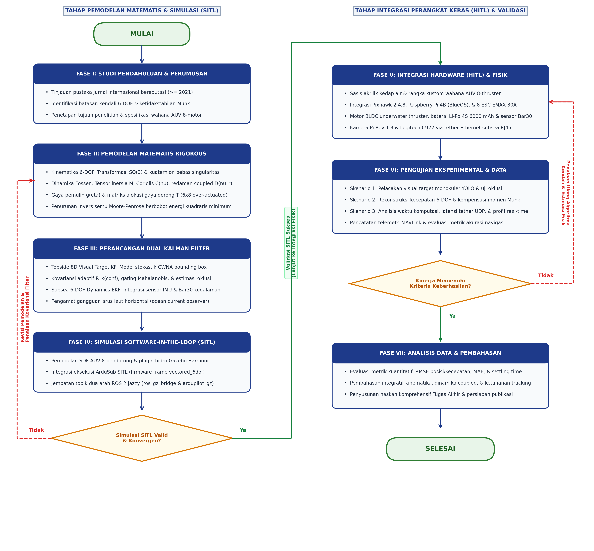
Gambar 3.1 Diagram alir tahapan penelitian komprehensif
Penjelasan Rinci Setiap Tahapan Diagram Alir:
- Fase I (Studi Pendahuluan dan Perumusan Masalah): Mengidentifikasi keterbatasan mendasar pada wahana konvensional underactuated 6-pendorong, khususnya fenomena kopling silang momen Munk hidrodinamika yang mendestabilisasi gerak yaw dan ketidakmampuan manuver pitch-hold aktif [7], [6], [32], [40], [34]. Studi literatur dipusatkan pada publikasi mutakhir ($$\ge 2021$$) di bidang estimasi parameter hidrodinamika [1], filter Bayesian [25], dan kendali wahana over-actuated [21], [32].
- Fase II (Pemodelan Matematis Rigorous): Menurunkan model analitis lengkap gerak wahana bawah air 6-DOF berdasarkan standar SNAME (1950) dan Fossen (2021) [7]. Formulasi meliputi transformasi rotasi $$SO(3)$$, perumusan kinematika kuaternion bebas gimbal lock, pemodelan tensor inersia total $$\mathbf{M}$$, tensor Coriolis $$\mathbf{C}(\boldsymbol{\nu})$$, tensor redaman non-linier $$\mathbf{D}(\boldsymbol{\nu}_r)$$, gaya apung/berat hidrostatis $$\mathbf{g}(\boldsymbol{\eta})$$, serta konfigurasi geometris tata letak 8-pendorong untuk pemetaan kendali terpadu [21], [32].
- Fase III (Perancangan Arsitektur Dual Kalman Filter): Merancang dua modul filter optimal yang bekerja secara komplementer:
- Topside Visual Target Kalman Filter (8D Visual Target Tracking Filter): penapis linier diskrit 8-dimensi berbasis model Continuous White Noise Acceleration (CWNA) dengan kovariansi adaptif berbobot skor konfidensi YOLO $$\mathbf{R}_k(\text{conf})$$, validasi jarak inovasi Mahalanobis $$\chi^2(4)$$, dan mekanisme propagasi dead-reckoning saat terjadi oklusi visual [16], [17], [25].
- Subsea Hydrodynamic Dynamics Extended Kalman Filter (6-DOF Hydrodynamic Dynamics Estimation Filter): filter non-linier 6-DOF yang menggabungkan pembacaan sensor inersia Pixhawk dan sensor tekanan kedalaman dengan model kinetika Fossen, dilengkapi ocean current disturbance observer [7], [18], [29].
- Fase IV (Simulasi Software-In-The-Loop / SITL): Membangun lingkungan simulasi virtual presisi tinggi memanfaatkan simulator Gazebo Harmonic (
gz-sim 8.14) dan Robot Operating System (ROS 2 Jazzy Jalisco) [14], [31]. Wahana AUV 8-pendorong dimodelkan dalam format Simulation Description Format (SDF) lengkap dengan plugin hidrodinamika dan daya apung. Sistem kendali dieksekusi melalui ArduSub SITL dengan model kerangka vectored_6dof yang berkomunikasi dua arah via protokol JSON/UDP [21].
- Evaluasi Validasi SITL dan Konvergensi Filter (Decision Gateway 1): Merupakan gerbang pengujian pertama untuk memastikan bahwa model numerik dan filter Kalman stabil sebelum diaplikasikan ke perangkat keras. Kriteria evaluasi mencakup kekonvergenan kovariansi galat $$\mathbf{P}_k$$, tidak adanya osilasi divergen pada alokasi gaya dorong, dan respons dinamika yang konsisten pada resolusi step sizereal-time ($$\Delta t = 1\text{ ms}$$). Apabila kriteria tidak terpenuhi (Tidak), sistem memasuki feedback loop untuk merevisi parameter pemodelan fisik (Fase II) serta menala ulang kovariansi process noise $$\mathbf{Q}$$ dan measurement noise $$\mathbf{R}$$ (Fase III). Jika simulasi valid dan konvergen (Ya*), penelitian berlanjut ke integrasi fisik.
- Fase V (Integrasi Hardware-In-The-Loop / HITL dan Fabrikasi Fisik): Mengintegrasikan perangkat keras fisik wahana ke dalam lingkungan komputasi permukaan melalui kabel tether Ethernet subsea [2], [14]. Komponen fisik mencakup custom pressure hull, flight controller Pixhawk 2.4.8 (menjalankan ArduSub), companion computer Raspberry Pi 4B (menjalankan BlueOS), 8 unit ESC EMAX BLHeli 30A, 8 motor BLDC underwater thruster, baterai Li-Po 4S 6000 mAh, sensor tekanan digital Bar30 MS5837, serta kamera Raspberry Pi Rev 1.3 dan Logitech C922. Stasiun permukaan memproses deteksi objek YOLO dan mengeksekusi 8D visual filter, lalu mengirimkan setpoint kendali visual servoing kembali ke wahana melalui MAVLink.
- Fase VI (Pengujian Eksperimental, Validasi, dan Akuisisi Data): Menjalankan serangkaian eksperimen terukur untuk mengevaluasi akurasi pelacakan visual target monokuler, kemampuan filteran derau frekuensi tinggi, ketahanan terhadap temporary visual occlusion, akurasi body velocity reconstruction 6-DOF, mitigasi momen Munk, serta analisis real-time execution profiling.
- Evaluasi Kinerja Eksperimental (Decision Gateway 2): Merupakan gerbang keputusan kedua terhadap data hasil uji eksperimental fisik. Kriteria keberhasilan dinilai berdasarkan: (a) Root Mean Square Error (RMSE) pelacakan posisi dan estimasi kecepatan yang rendah, (b) kestabilan orientasi wahana (minim osilasi pada pitch dan yaw akibat kopling momen Munk), serta (c) throughput pemrosesan visual mencapai kriteria real-time ($$\ge 30\text{ FPS}$$ dengan latensi $$\le 40\text{ ms}$$). Apabila kriteria tidak terpenuhi (Tidak), sistem memasuki feedback loop untuk melakukan penalaan ulang pada algoritma kendali MAVLink dan estimator fisik (kembali ke Fase V dan Fase III). Jika seluruh target kinerja tercapai (Ya), penelitian berlanjut ke analisis akhir.
- Fase VII (Analisis Data Komprehensif, Pembahasan, dan Kesimpulan): Melakukan analisis kuantitatif mendalam terhadap seluruh metrik evaluasi eksperimen (RMSE, MAE, TSR, settling time), mensintesis interaksi antara 6-DOF dynamics modeling dan estimasi keadaan filter Kalman, menyusun simpulan terpadu, serta merumuskan laporan akhir naskah proposal/skripsi dan manuskrip publikasi ilmiah.
3.3 Identifikasi Parameter Acuan Model dan Metodologi Penentuan Karakteristik Wahana
Keberhasilan perancangan filter estimasi dinamika hidrodinamika dan alokasi gaya dorong over-actuated bergantung pada parameter fisik dan koefisien hidrodinamika wahana. Mengingat purwarupa fisik wahana saat ini masih berada dalam proses perakitan dan integrasi mekatronika (under active fabrication and assembly), nilai parameter massa total, dimensi fisik, inersia, dan koefisien hidrodinamika yang disajikan pada subbab ini merupakan nilai acuan nominal (benchmark baseline) yang diadopsi dari standar konfigurasi BlueROV2 Heavy dan literatur terkait [1], [3], [7], [31], [34]. Nilai acuan ini berfungsi sebagai parameter inisialisasi pada model physics engine simulator Software-in-the-Loop (SITL) Gazebo Harmonic.
Pengukuran empiris definitif terhadap purwarupa fisik riil—mencakup penimbangan massa aktual menggunakan timbangan digital laboratorium, pengukuran dimensi akhir kerangka, penentuan eksperimental posisi titik berat (Center of Gravity / CG) dan titik apung (Center of Buoyancy / CB), serta uji apung statis di tangki air—merupakan bagian dari agenda pengujian yang akan dilaksanakan pada fase eksperimental dan hasilnya akan dilaporkan secara utuh pada Bab IV (Hasil dan Pembahasan).
3.3.1 Parameter Fisik dan Properti Benda Tegar Acuan Nominal (Rigid-Body Properties)
Wahana yang dikembangkan mengadopsi arsitektur konfigurasi retrofit BlueROV2 Heavy berbahan dasar tabung akrilik tahan tekanan tinggi dengan rangka struktural High-Density Polyethylene (HDPE) [3]. Parameter benda tegar nominal yang digunakan sebagai acuan dasar simulasi SITL dirangkum pada Tabel 3.1.
Tabel 3.1 Parameter Fisik dan Properti Benda Tegar Acuan Nominal Model Simulasi SITL
| Parameter Fisis | Simbol Matematis | Nilai Acuan Nominal | Satuan SI | Sumber / Dasar Acuan |
|---|---|---|---|---|
| Massa Total Wahana (Nominal) | $$m$$ | $$13.00$$ | $$\text{kg}$$ | Nilai acuan standar BlueROV2 Heavy [3] (Divalidasi di Bab 4) |
| Panjang Total (Length) | $$L$$ | $$0.457$$ | $$\text{m}$$ | Dimensi nominal desain kerangka BlueROV2 Heavy [3] |
| Lebar Total (Beam/Width) | $$W$$ | $$0.338$$ | $$\text{m}$$ | Dimensi nominal desain kerangka BlueROV2 Heavy [3] |
| Tinggi Total (Height) | $$H$$ | $$0.254$$ | $$\text{m}$$ | Dimensi nominal desain kerangka BlueROV2 Heavy [3] |
| Volume Benaman Total | $$\nabla$$ | $$0.0132$$ | $$\text{m}^3$$ | Estimasi volume model CAD 3D [3] & hukum Archimedes |
| Posisi Pusat Apung (CB) | $$\mathbf{r}b = [x_b, y_b, z_b]^T$$ | $$[0.00, 0.00, 0.00]^T$$ | $$\text{m}$$ | Ditetapkan sebagai titik asal bodi ($$O_b$$) [7] |
| Posisi Pusat Gravitasi (CG) | $$\mathbf{r}_g = [x_g, y_g, z_g]^T$$ | $$[0.00, 0.00, 0.02]^T$$ | $$\text{m}$$ | Estimasi distribusi massa ballast acuan [3], [31] |
| Momen Inersia Roll Benda Tegar | $$I$$ | $$0.160$$ | $$\text{kg}\cdot\text{m}^2$$ | Nilai acuan benchmark literatur [31] |
| Momen Inersia Pitch Benda Tegar | $$I_{yy}$$ | $$0.240$$ | $$\text{kg}\cdot\text{m}^2$$ | Nilai acuan benchmark literatur [31] |
| Momen Inersia Yaw Benda Tegar | $$I_{zz}$$ | $$0.280$$ | $$\text{kg}\cdot\text{m}^2$$ | Nilai acuan benchmark literatur [31] |
| Densitas Air Tawar Uji | $$\rho_{\text{fresh}}$$ | $$1000.0$$ | $$\text{kg/m}^3$$ | Standar kondisi fluida laboratorium |
| Densitas Air Laut Nominal | $$\rho_{\text{salt}}$$ | $$1025.0$$ | $$\text{kg/m}^3$$ | Standar oseanografi subsea DNV (2021) [5] |
| Percepatan Gravitasi Lokal | $$g$$ | $$9.80665$$ | $$\text{m/s}^2$$ | Standar gravitasi bumi internasional |
Berdasarkan nilai pada Tabel 3.1, gaya berat total wahana dihitung melalui persamaan:
$$W = m g = 13.00 \times 9.80665 = 127.486\text{ N}$$
Gaya apung total (buoyancy force) pada air tawar dan air laut adalah:
$$B_{\text{fresh}} = \rho_{\text{fresh}} g \nabla = 1000.0 \times 9.80665 \times 0.0132 = 129.448\text{ N}$$
$$B_{\text{salt}} = \rho_{\text{salt}} g \nabla = 1025.0 \times 9.80665 \times 0.0132 = 132.684\text{ N}$$
Selisih gaya hidrostatis neto ($$B - W$$) menghasilkan daya apung positif (positive buoyancy) yang terukur sebesar $$+1.962\text{ N}$$ (pada air tawar) dan $$+5.198\text{ N}$$ (pada air laut). Karakteristik positive buoyancy ini merupakan persyaratan keselamatan esensial pada robotika bawah air (fail-safe design), sehingga wahana akan mengapung secara pasif ke permukaan apabila terjadi kegagalan daya baterai total [3], [7].
Karena pusat massa ($$z_g = +0.02\text{ m}$$) terletak di bawah pusat apung ($$z_b = 0.00\text{ m}$$), jarak metasentrik vertikal bernilai positif ($$\overline{BG} = z_g - z_b = +0.02\text{ m}$$), yang memberikan stabilitas statis pasif inheren pada sumbu Roll ($$\phi$$) dan Pitch ($$\theta$$) [7].
Matriks inersia benda tegar $$\mathbf{M}{RB} \in \mathbb{R}^{6 \times 6}$$ dihitung menggunakan formulasi Fossen:
$$\mathbf{M} = \begin{bmatrix} m\mathbf{I}_{3 \times 3} & -m\mathbf{S}(\mathbf{r}_g) \ m\mathbf{S}(\mathbf{r}_g) & \mathbf{I}_b \end{bmatrix} = \begin{bmatrix} 13.00 & 0 & 0 & 0 & 0.26 & 0 \ 0 & 13.00 & 0 & -0.26 & 0 & 0 \ 0 & 0 & 13.00 & 0 & 0 & 0 \ 0 & -0.26 & 0 & 0.1652 & 0 & 0 \ 0.26 & 0 & 0 & 0 & 0.2452 & 0 \ 0 & 0 & 0 & 0 & 0 & 0.2800 \end{bmatrix}$$
3.3.2 Estimasi Derivatif hydrodynamic added mass (Hydrodynamic Added Mass)
hydrodynamic added mass timbul akibat percepatan massa fluida di sekitar lambung wahana ketika wahana bergerak [1], [7], [34]. Mengingat wahana beroperasi pada kecepatan jelajah moderat dan memiliki bidang simetri ganda (bidang port-starboard dan fore-aft mendekati simetris), suku-suku kopling silang di luar diagonal bernilai sangat kecil dibandingkan suku diagonal utamanya [31], [34]. Derivatif hydrodynamic added mass ditentukan berdasarkan hasil identifikasi eksperimental PMM dan analisis komputasi fluida (CFD) yang telah divalidasi oleh pengujian eksperimental Planar Motion Mechanism (PMM) dan survei literatur wahana kelas BlueROV2 [1], [4], [7], [12], [26], [28], [31], [34], [37]:
$$\mathbf{M}A = -\text{diag}\left( X}, Y_{\dot{v}}, Z_{\dot{w}}, K_{\dot{p}}, M_{\dot{q}}, N_{\dot{r}} \right)$$
Nilai numerik hydrodynamic added mass dirangkum pada Tabel 3.2.
Tabel 3.2 Koefisien Derivatif hydrodynamic added mass Acuan Simulasi SITL [1], [31]
| Derajat Kebebasan (DOF) | Koefisien Notasi SNAME | Nilai Numerik | Satuan SI | Interpretasi Fisis Fluida |
|---|---|---|---|---|
| Massa Tambah Surge | $$X_{\dot{u}}$$ | $$-5.50$$ | $$\text{kg}$$ | Fluida terakselerasi penampang frontal ramping |
| Massa Tambah Sway | $$Y_{\dot{v}}$$ | $$-12.70$$ | $$\text{kg}$$ | Fluida terakselerasi penampang samping tabung ganda |
| Massa Tambah Heave | $$Z_{\dot{w}}$$ | $$-14.60$$ | $$\text{kg}$$ | Fluida terakselerasi penampang datar atas/bawah |
| Momen Tambah Roll | $$K_{\dot{p}}$$ | $$-0.12$$ | $$\text{kg}\cdot\text{m}^2$$ | Kelembaman rotasi fluida mengelilingi sumbu longitudinal |
| Momen Tambah Pitch | $$M_{\dot{q}}$$ | $$-0.25$$ | $$\text{kg}\cdot\text{m}^2$$ | Kelembaman rotasi fluida mengelilingi sumbu transversal |
| Momen Tambah Yaw | $$N_{\dot{r}}$$ | $$-0.27$$ | $$\text{kg}\cdot\text{m}^2$$ | Kelembaman rotasi fluida mengelilingi sumbu vertikal |
Dari Tabel 3.2, tampak bukti kuantitatif asimetri massa tambah transversal dan longitudinal:
$$|Y_{\dot{v}}| = 12.70\text{ kg} > |X_{\dot{u}}| = 5.50\text{ kg}$$
Selisih koefisien ini menghasilkan parameter momen Munk hidrodinamika yang sangat signifikan [7], [34]:
$$X_{\dot{u}} - Y_{\dot{v}} = -5.50 - (-12.70) = +7.20\text{ kg} > 0$$
Nilai positif $$+7.20\text{ kg}$$ ini secara analitis membuktikan bahwa setiap gangguan arus samping atau kecepatan gerak sway ($$v_r > 0$$) saat wahana melaju ke depan ($$u_r > 0$$) akan menghasilkan momen putar yaw destabilisasi sebesar:
$$N_{\text{Munk}} = +7.20 \, u_r v_r \quad (\text{N}\cdot\text{m})$$
yang harus diredam secara aktif oleh sistem kendali alokasi pendorong 8-motor [21], [32].
Matriks massa total wahana $$\mathbf{M} = \mathbf{M}_{RB} + \mathbf{M}_A$$ adalah:
$$\mathbf{M} = \begin{bmatrix} 18.50 & 0 & 0 & 0 & 0.26 & 0 \ 0 & 25.70 & 0 & -0.26 & 0 & 0 \ 0 & 0 & 27.60 & 0 & 0 & 0 \ 0 & -0.26 & 0 & 0.2852 & 0 & 0 \ 0.26 & 0 & 0 & 0 & 0.4952 & 0 \ 0 & 0 & 0 & 0 & 0 & 0.5500 \end{bmatrix}$$
3.3.3 Matriks Koefisien Redaman Hidrodinamika Fluida
Gaya hambat hidrodinamika fluida dimodelkan sebagai superposisi antara redaman gesek linier Navier-Stokes ($$\mathbf{D}L$$) untuk aliran laminer kecepatan rendah dan redaman bentuk kuadratik non-linier (quadratic form drag $$\mathbf{D}$$) akibat vortex shedding turbulen di sekitar struktur kerangka terbuka [7], [31], [34]:
$$\mathbf{D}(\boldsymbol{\nu}r) = \mathbf{D}_L + \mathbf{D}(\boldsymbol{\nu}_r)$$
di mana matriks linier dan matriks kuadratik diagonal didefinisikan sebagai:
$$\mathbf{D}L = -\text{diag}\left( X_u, Y_v, Z_w, K_p, M_q, N_r \right)$$
$$\mathbf{D}(\boldsymbol{\nu}r) = -\text{diag}\left( X|u_r|, Y_{v|v|}|v_r|, Z_{w|w|}|w_r|, K_{p|p|}|p|, M_{q|q|}|q|, N_{r|r|}|r| \right)$$
Nilai-nilai koefisien redaman yang digunakan dalam penelitian ini disajikan pada Tabel 3.3 [31], [34].
Tabel 3.3 Koefisien Redaman Hidrodinamika Acuan Simulasi SITL [31], [34]
| Sumbu Gerak | Koefisien Linier | Nilai ($$\text{SI}$$) | Koefisien Kuadratik | Nilai ($$\text{SI}$$) |
|---|---|---|---|---|
| Surge ($$u$$) | $$X_u$$ | $$-4.03\text{ N}\cdot\text{s/m}$$ | $$X_{u|u|}$$ | $$-18.18\text{ N}\cdot\text{s}^2/\text{m}^2$$ |
| Sway ($$v$$) | $$Y_v$$ | $$-6.22\text{ N}\cdot\text{s/m}$$ | $$Y_{v|v|}$$ | $$-21.66\text{ N}\cdot\text{s}^2/\text{m}^2$$ |
| Heave ($$w$$) | $$Z_w$$ | $$-5.18\text{ N}\cdot\text{s/m}$$ | $$Z_{w|w|}$$ | $$-36.99\text{ N}\cdot\text{s}^2/\text{m}^2$$ |
| Roll ($$p$$) | $$K_p$$ | $$-0.07\text{ N}\cdot\text{m}\cdot\text{s/rad}$$ | $$K_{p|p|}$$ | $$-1.55\text{ N}\cdot\text{m}\cdot\text{s}^2/\text{rad}^2$$ |
| Pitch ($$q$$) | $$M_q$$ | $$-0.07\text{ N}\cdot\text{m}\cdot\text{s/rad}$$ | $$M_{q|q|}$$ | $$-1.55\text{ N}\cdot\text{m}\cdot\text{s}^2/\text{rad}^2$$ |
| Yaw ($$r$$) | $$N_r$$ | $$-0.07\text{ N}\cdot\text{m}\cdot\text{s/rad}$$ | $$N_{r|r|}$$ | $$-1.55\text{ N}\cdot\text{m}\cdot\text{s}^2/\text{rad}^2$$ |
3.3.4 Konfigurasi Geometri dan Tata Letak 8-Pendorong Kerangka Wahana
Konfigurasi pendorong pada BlueROV2 Heavy terdiri dari delapan motor pendorong BLDC bawah air [3], [21]:
1. Pendorong Horizontal 1–4: Dipasang pada bidang horizontal ($$xy$$) dengan sudut kemiringan $$\pm 45^\circ$$ ($$\pi/4\text{ rad}$$) terhadap sumbu longitudinal. Konfigurasi vektor ini menghasilkan gaya dorong terkopling pada sumbu Surge, Sway, dan torsi Yaw.
2. Pendorong Vertikal 5–8: Dipasang tegak lurus searah sumbu $$z$$ pada empat sudut terluar kerangka. Konfigurasi ini menghasilkan gaya dorong murni pada sumbu Heave, serta torsi diferensial pada sumbu Roll dan Pitch.
Koordinat posisi pendorong $$\mathbf{r}_i = [x_i, y_i, z_i]^T$$ relatif terhadap titik asal bodi ($$O_b$$) dan vektor arah dorong satuan $$\mathbf{d}_i$$ ditabulasikan pada Tabel 3.4.
Tabel 3.4 Posisi Spasial dan Vektor Satuan Gaya Dorong 8-Pendorong Acuan Geometri Kerangka [3]
| No. Pendorong | Posisi $$x_i\text{ (m)}$$ | Posisi $$y_i\text{ (m)}$$ | Posisi $$z_i\text{ (m)}$$ | Vektor Arah Gaya Dorong $$\mathbf{d}_i$$ | Aksi Sumbu Utama |
|---|---|---|---|---|---|
| Pendorong 1 (Depan-Kanan) | $$+0.156$$ | $$+0.111$$ | $$0.000$$ | $$[\cos 45^\circ, -\sin 45^\circ, 0]^T$$ | Surge (+), Sway (-), Yaw (-) |
| Pendorong 2 (Depan-Kiri) | $$+0.156$$ | $$-0.111$$ | $$0.000$$ | $$[\cos 45^\circ, \sin 45^\circ, 0]^T$$ | Surge (+), Sway (+), Yaw (+) |
| Pendorong 3 (Belakang-Kanan) | $$-0.156$$ | $$+0.111$$ | $$0.000$$ | $$[-\cos 45^\circ, -\sin 45^\circ, 0]^T$$ | Surge (-), Sway (-), Yaw (+) |
| Pendorong 4 (Belakang-Kiri) | $$-0.156$$ | $$-0.111$$ | $$0.000$$ | $$[-\cos 45^\circ, \sin 45^\circ, 0]^T$$ | Surge (-), Sway (+), Yaw (-) |
| Pendorong 5 (Vertikal Depan-Kanan) | $$+0.120$$ | $$+0.218$$ | $$-0.075$$ | $$[0, 0, 1]^T$$ | Heave (+), Roll (-), Pitch (+) |
| Pendorong 6 (Vertikal Depan-Kiri) | $$+0.120$$ | $$-0.218$$ | $$-0.075$$ | $$[0, 0, 1]^T$$ | Heave (+), Roll (+), Pitch (+) |
| Pendorong 7 (Vertikal Belakang-Kanan)| $$-0.120$$ | $$+0.218$$ | $$-0.075$$ | $$[0, 0, 1]^T$$ | Heave (+), Roll (-), Pitch (-) |
| Pendorong 8 (Vertikal Belakang-Kiri) | $$-0.120$$ | $$-0.218$$ | $$-0.075$$ | $$[0, 0, 1]^T$$ | Heave (+), Roll (+), Pitch (-) |
Dengan konstanta arah horizontal $$c = \cos(45^\circ) = \sin(45^\circ) = \frac{\sqrt{2}}{2} \approx 0.7071$$, kolom ke-$$i$$ dari matriks konfigurasi pendorong $$\mathbf{T}_{6 \times 8}$$ dibentuk melalui hubungan momen gaya:
$$\mathbf{t}_i = \begin{bmatrix} \mathbf{d}_i \ \mathbf{r}_i \times \mathbf{d}_i \end{bmatrix} \in \mathbb{R}^6$$
Perhitungan perkalian silang lengan torsi menghasilkan matriks konfigurasi numerik eksak $$\mathbf{T}{6 \times 8} \in \mathbb{R}^{6 \times 8}$$:
$$\mathbf{T} = \begin{bmatrix} 0.7071 & 0.7071 & -0.7071 & -0.7071 & 0.0000 & 0.0000 & 0.0000 & 0.0000 \ -0.7071 & 0.7071 & -0.7071 & 0.7071 & 0.0000 & 0.0000 & 0.0000 & 0.0000 \ 0.0000 & 0.0000 & 0.0000 & 0.0000 & 1.0000 & 1.0000 & 1.0000 & 1.0000 \ 0.0000 & 0.0000 & 0.0000 & 0.0000 & 0.2180 & -0.2180 & 0.2180 & -0.2180 \ 0.0000 & 0.0000 & 0.0000 & 0.0000 & -0.1200 & -0.1200 & 0.1200 & 0.1200 \ -0.1888 & 0.1888 & 0.1888 & -0.1888 & 0.0000 & 0.0000 & 0.0000 & 0.0000 \end{bmatrix}$$
di mana baris ke-6 (sumbu Yaw) diperoleh dari:
$$\tau_{N,1} = x_1 d_{y,1} - y_1 d_{x,1} = (0.156)(-0.7071) - (0.111)(0.7071) = -0.1103 - 0.0785 = -0.1888\text{ m}$$
Karena jumlah aktuator ($$m = 8$$) melebihi jumlah Degrees of Freedom gerak ($$n = 6$$), sistem ini bersifat over-actuated dengan derajat redundansi $$m - n = 2$$ [21], [32]. Pada arsitektur kendali wahana, pemetaan gaya kendali generalisasi 6-DOF $$\boldsymbol{\tau} \in \mathbb{R}^6$$ ke delapan perintah gaya dorong motor individual $$\mathbf{f} = [f_1, f_2, \dots, f_8]^T \in \mathbb{R}^8$$ dieksekusi secara real-time oleh modul motor matrix mixing pada firmware ArduSub (AP_Motors6DOF) [21]. Modul ini mendistribusikan gaya dorong ternormalisasi berdasarkan kontribusi terarah dari setiap kolom matriks konfigurasi geometri pendorong $$\mathbf{T}{6 \times 8}$$, dengan manajemen saturasi aktif untuk memprioritaskan kestabilan orientasi wahana (attitude stability):
$$\boldsymbol{\tau} = \mathbf{T} \mathbf{f}$$
Setiap komponen gaya dorong $$f_i\text{ (N)}$$ kemudian dipetakan ke sinyal lebar pulsa servo aktuator PWM ($$1100 - 1900\text{ }\mu\text{s}$$) dengan deadband nominal $$1475 - 1525\text{ }\mu\text{s}$$ sesuai karakteristik elektro-hidrodinamika ESC motor pendorong BLDC bawah air [3]:
$$\text{PWM}i = \begin{cases} 1500 & \text{jika } |f_i| < f} \ 1525 + \left( \frac{f_i}{f_{\max}} \right) \times 375 & \text{jika } f_i \ge f_{\text{thresh}} \ 1475 + \left( \frac{f_i}{f_{\max}} \right) \times 375 & \text{jika } f_i \le -f_{\text{thresh}} \end{cases}$$
dengan batas gaya dorong maksimum $$f_{\max} = 35.0\text{ N}$$ pada tegangan suplai nominal $$16.0\text{ V}$$ [3].
3.4 Perancangan Arsitektur Software-In-The-Loop (SITL)
Arsitektur Software-In-The-Loop (SITL) dibangun untuk memvalidasi algoritma estimasi Dual Kalman Filter dan kinematika/6-DOF dynamics secara komprehensif di lingkungan simulasi hidrodinamika virtual sebelum diimplementasikan pada perangkat keras fisik, sejalan dengan metodologi simulation-driven dan validasi digital twin yang dirumuskan oleh Karras dkk. (2024) serta Mari dkk. (2026) [14], [15], [19], [21], [31].
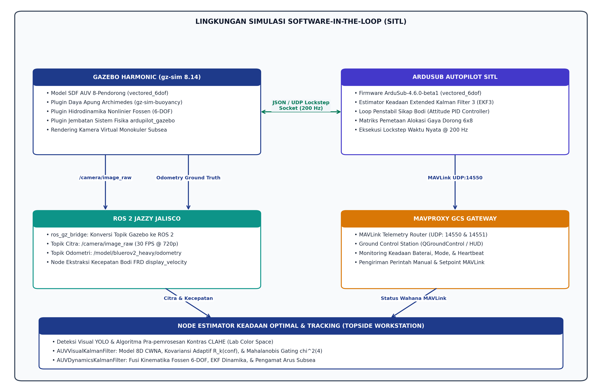
Gambar 3.2 Arsitektur simulasi software-in-the-loop (SITL) sistem AUV
3.4.1 Lingkungan Simulasi Gazebo Harmonic (gz-sim 8.14)
Simulasi fisik wahana dijalankan pada Gazebo Harmonic (gz-sim versi 8.14) di bawah sistem operasi Ubuntu 24.04.4 LTS (Noble Numbat) [31]. Wahana BlueROV2 Heavy direpresentasikan dalam berkas deskripsi robotik Simulation Description Format (SDF) yang mendefinisikan geometri visual, collision mesh, properti inersia, serta plugin fisika fluida:
1. Plugin Daya Apung (gz-sim-buoyancy-system): Menghitung gaya angkat hidrostatis Archimedes secara terdistribusi berdasarkan volume elemen wahana yang tercelup fluida dan gradien tekanan kedalaman [31].
2. Plugin Hidrodinamika (gz-sim-hydrodynamics-system): Mengimplementasikan model persamaan gerak Fossen (2021) secara langsung di dalam inti physics engine Gazebo [7]. Parameter massa tambah ($$X_{\dot{u}}, Y_{\dot{v}}, Z_{\dot{w}}, K_{\dot{p}}, M_{\dot{q}}, N_{\dot{r}}$$) dan koefisien redaman hidrodinamika linier serta kuadratik ($$X_u, X_{u|u|}, Y_v, Y_{v|v|}, \dots$$) dimasukkan sesuai hasil identifikasi pada Sub-bab 3.3.
3. Plugin ardupilot_gazebo: Bertindak sebagai jembatan komunikasi antara model fisik Gazebo dan perangkat lunak autopilot ArduSub [21]. Plugin ini membaca kecepatan putar motor pendorong dari paket JSON ArduSub, menerapkannya sebagai vektor gaya dorong pada model wahana di Gazebo, membaca kembali data sensor virtual (IMU, barometer tekanan kedalaman), dan mengirimkannya kembali ke ArduSub dengan sinkronisasi lockstep simulation* pada frekuensi $$200\text{ Hz}$$.
Dunia virtual bawah laut dimodelkan dalam berkas bluerov2_heavy_underwater.world, yang memuat media air tawar tenang dengan pencahayaan tereduksi, objek target visual geometris di dasar perairan, serta model gangguan arus laut horizontal konstan maupun dinamis.
3.4.2 Autopilot ArduSub SITL (vectored_6dof)
Perangkat lunak autopilot ArduSub (versi ArduSub-4.6.0-beta1) dikompilasi secara lokal dan dieksekusi menggunakan utilitas pembantu sim_vehicle.py:
python3 ~/auv_ws/firmware/ardupilot/Tools/autotest/sim_vehicle.py -v ArduSub -f vectored_6dof --model JSON -w --console --out udp:127.0.0.1:14550 --out udp:192.168.2.1:14550
Parameter -f vectored_6dof secara khusus mengonfigurasi ArduSub untuk menggunakan kerangka alokasi 8-pendorong dengan active control 6 Degrees of Freedom penuh [21]. ArduSub SITL menjalankan estimator navigasi internal EKF3, loop kendali PID untuk attitude controller, dan matriks alokasi pendorong untuk menghasilkan sinyal kendali motor pendorong.
3.4.3 Jembatan Komunikasi ROS 2 (ros_gz_bridge)
Untuk memfasilitasi pertukaran data antara simulator Gazebo Harmonic dan ekosistem komputasi robotika, diimplementasikan jembatan komunikasi ros_gz_bridge pada distribusi ROS 2 Jazzy Jalisco [14]:
1. Topik data odometri wahana /model/bluerov2_heavy/odometry dijembatani menjadi pesan ROS 2 nav_msgs/msg/Odometry untuk merekam koordinat posisi $$(x, y, z)$$, orientasi kuaternion, dan kecepatan linier/sudut wahana sebagai nilai ground truth.
2. Topik kamera virtual bawah air /camera/image_raw dijembatani menjadi pesan ROS 2 sensor_msgs/msg/Image dengan laju penyegaran $$30\text{ FPS}$$ pada resolusi $$1280 \times 720$$ piksel.
3. Node pembaca kecepatan telemetri mengekstraksi kecepatan bodi relatif wahana secara real-time untuk memvalidasi estimasi kecepatan dari filter dinamika EKF.
3.5 Perancangan Arsitektur Hardware-In-The-Loop (HITL)
Arsitektur Hardware-In-The-Loop (HITL) menggabungkan komponen perangkat keras fisik wahana (flight controller Pixhawk 2.4.8, companion computer Raspberry Pi 4B, modul kamera monokuler, dan depth sensor Bar30 MS5837) dengan workstation permukaan berakselerasi GPU dalam sebuah loop kendali tertutup secara real-time melalui jaringan tether Ethernet, mengadopsi prinsip arsitektur modular terdistribusi dan pemodelan dinamika kabel tether [2], [8], [9], [11], [14], [20], [30], [35], [36], [41].
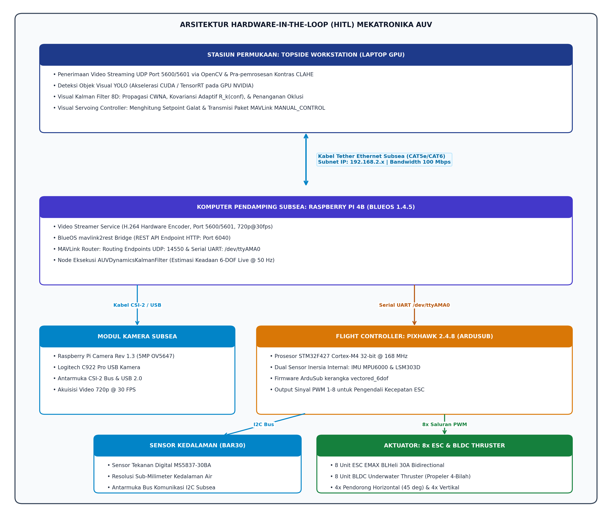
Gambar 3.3 Arsitektur integrasi hardware-in-the-loop (HITL) mekatronika AUV
3.5.1 Komponen Perangkat Keras dan Interkoneksi Fisik
Spesifikasi perangkat keras mekatronika yang diintegrasikan dalam arsitektur HITL dirangkum pada Tabel 3.5.
Tabel 3.5 Spesifikasi Komponen Perangkat Keras Arsitektur HITL
| Modul Sistem | Komponen Spesifik | Antarmuka / Protokol | Fungsi Utama dalam Sistem |
|---|---|---|---|
| Rangka & Lambung | Custom-made AUV Hull & Frame (Tabung Akrilik Silinder Kedap Air + Kerangka 8 Pendorong) | Mekanikal / Sealing O-Ring Ganda | Struktur fisik penahan tekanan hidrostatis dan dudukan geometris 8 pendorong bervektor |
| Flight Controller | Pixhawk 2.4.8 (STM32F427 Cortex-M4, 168 MHz) | UART Serial (/dev/ttyAMA0, 921600 baud) | Eksekusi ArduSub vectored_6dof, akuisisi IMU internal, loop kendali sikap, alokasi 8 pendorong [14] |
| Companion Computer | Raspberry Pi 4B (Quad-core Cortex-A72 @ 1.5 GHz, 4GB RAM) | Ethernet 10/100/1000 Mbps | Menjalankan sistem operasi BlueOS, kompresi video H.264, jembatan REST telemetri mavlink2rest |
| depth sensor | Sensor Tekanan & Kedalaman Digital Subsea MS5837-30BA | I2C Bus (Alamat 0x76) | Pengukuran tekanan absolut fluida (0–30 bar) dan estimasi kedalaman dengan resolusi $$0.2\text{ mm}$$ |
| Modul Kamera Utama | Raspberry Pi Camera Rev 1.3 (OmniVision OV5647 5MP) | MIPI CSI-2 Ribbon Cable | Akuisisi citra visual bawah air monokuler $$1280 \times 720$$ piksel @ 30 FPS untuk pelacakan target |
| Kamera Sekunder | Logitech C922 Pro Stream Webcam | USB 2.0 (Protokol UVC / MJPG) | Kamera uji alternatif resolusi tinggi Full HD 1080p / 720p dengan lensa sudut lebar |
| Komputer Topside | Laptop dengan GPU NVIDIA (CUDA / TensorRT) | Tether Ethernet RJ45 | Pemrosesan visi YOLO pada GPU NVIDIA & filter Topside Visual Kalman Filter 8D |
| Pengendali Kecepatan | 8x ESC EMAX BLHeli 30A (Bidirectional Firmware) | Sinyal PWM ($$1100 - 1900\text{ }\mu\text{s}$$) | Pengaturan komutasi dan kecepatan putar dua arah (maju-mundur) 8 motor pendorong BLDC |
| Sistem Penggerak | 8x BLDC Motor Underwater Thruster (12–24V, 4-Blade Propeller) | Kabel Fasa 3-Kawat ke ESC | Aktuasi gaya dorong 6-DOF over-actuated (gaya dorong nominal 3–5 kgf per motor, putaran CW/CCW) |
| Sistem Catu Daya | Baterai Li-Po 4S1P 14.8V kapasitas 6000 mAh (88.8 Wh) | Konektor Arus Tinggi XT90 / Power Module | Pencatu daya utama sistem propulsi pendorong dan modul elektronik internal wahana |
| Pengisi Daya Baterai | SKYRC IMAX B6AC V2 Cerdas Mikroprosesor | Dual Input AC/DC, Port JST-XH Balance | Pengisian daya dan penyeimbangan tegangan tiap sel baterai Li-Po secara presisi dan aman |
| Kabel Komunikasi | Kabel Tether Ethernet Subsea CAT5e/CAT6 | Antarmuka RJ45 (Bandwidth 100 Mbps) | Transmisi data aliran video H.264 dan komunikasi dua arah telemetri kendali MAVLink |
Untuk memberikan gambaran yang lebih konkret terkait perangkat yang digunakan, berikut adalah visualisasi perangkat keras utama yang dikonfigurasi pada wahana AUV ini:
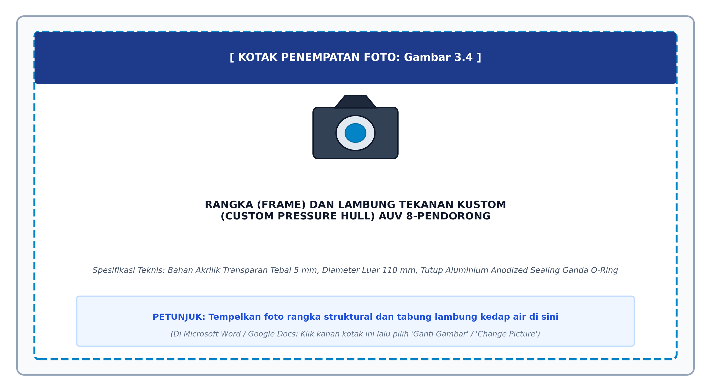
Gambar 3.4 Rangka (
frame) dan
custom pressure hull AUV 8-pendorong
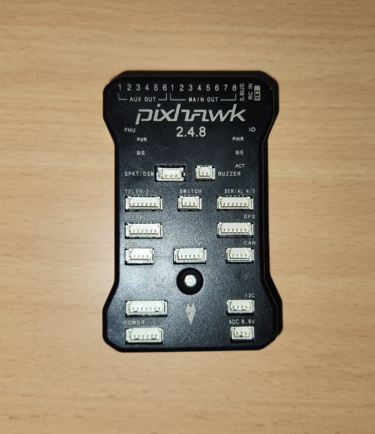
Gambar 3.5flight controller* Pixhawk 2.4.8
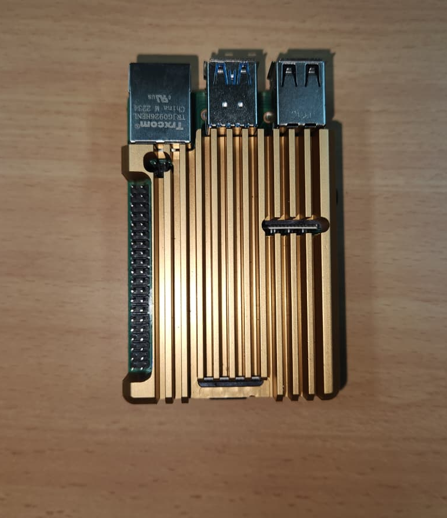
Gambar 3.6companion computer* Raspberry Pi 4B
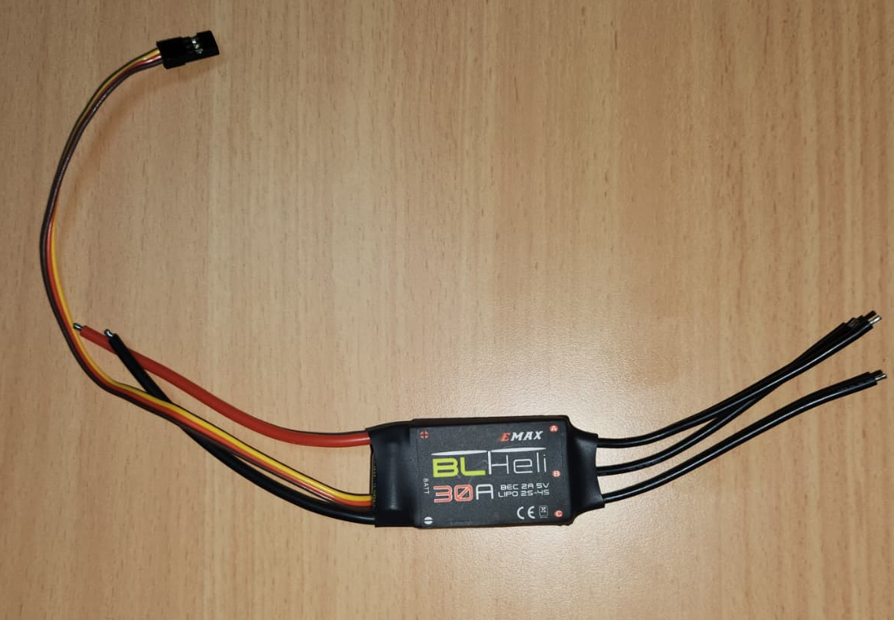
Gambar 3.7 Modul pengendali kecepatan elektronik (ESC EMAX BLHeli 30A)
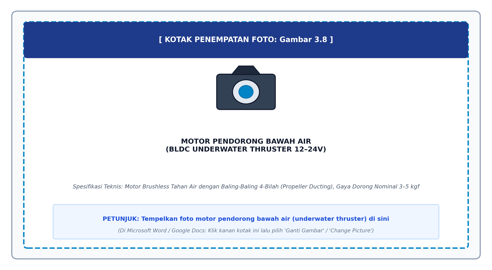
Gambar 3.8 motor
BLDC underwater thruster
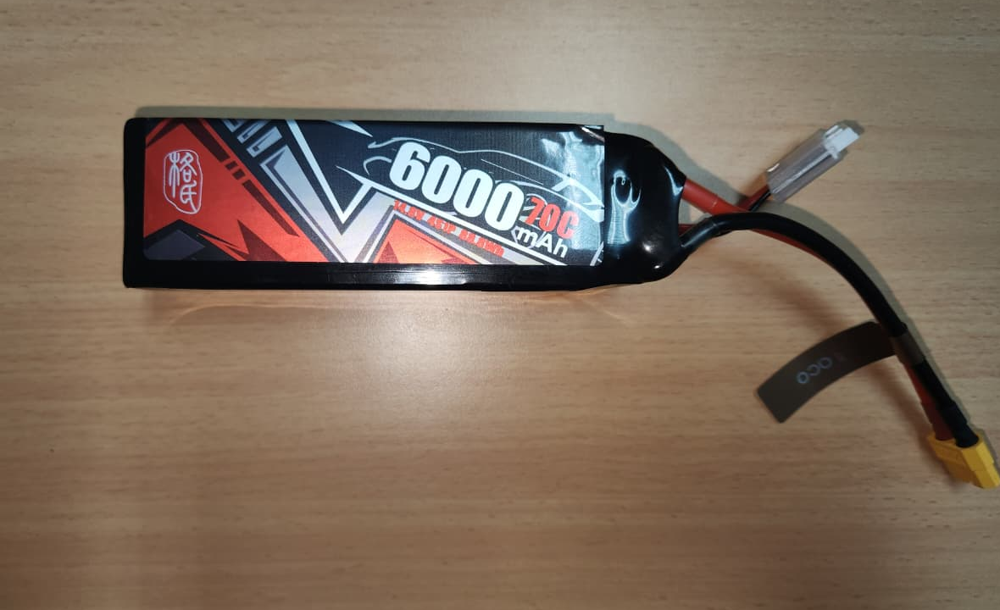
Gambar 3.9 Sumber daya utama baterai Li-Po 4S 14.8V 6000 mAh
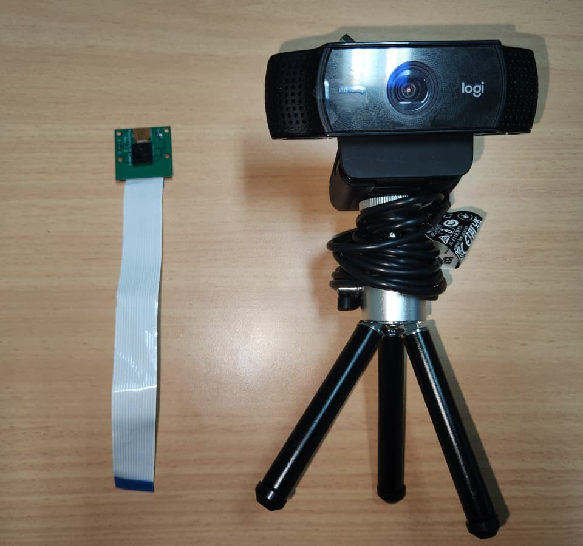
Gambar 3.10 Modul kamera sistem pelacakan visual: Raspberry Pi Camera Rev 1.3 (
subsea, kiri) dan webcam Logitech C922 Pro (
topside, kanan)
3.5.2 low-latency telemetry bridge
Untuk mengalirkan data sensor dari wahana ke modul estimasi tanpa membebani bus komputasi serial MAVLink secara berlebihan, diimplementasikan jembatan telemetri asinkron berbasis REST API memanfaatkan layanan mavlink2rest yang terintegrasi pada BlueOS (port HTTP 6040):
1. Akuisisi Data IMU dan Tekanan
Subsistem komunikasi wahana mengimplementasikan modul jembatan telemetri asinkron (subsea telemetry bridge) yang melakukan pertukaran data JSON pada endpoint telemetri MAVLink wahana (http://192.168.2.2:6040/mavlink/vehicles/1/components/1/messages) dengan timeout $$0.25\text{ detik}$$.
2. Pengekstrakkan Pesan MAVLink
Pesan SCALED_IMU2 atau RAW_IMU diekstraksi untuk memperoleh percepatan linier tiga sumbu ($$a_x, a_y, a_z$$) dan kecepatan sudut ($$p, q, r$$). Pesan ATTITUDE diekstraksi untuk memperoleh orientasi Euler ($$\phi, \theta, \psi$$). Pesan SCALED_PRESSURE2 diekstraksi untuk memperoleh tekanan absolut subsea ($$P_{\text{fluid}}$$). Pesan SERVO_OUTPUT_RAW diekstraksi untuk merekam sinyal PWM dari delapan pendorong secara simultan.
3. Kalibrasi Tekanan Atmosfer Otomatis
Saat node diinisialisasi di permukaan air, sistem secara otomatis mengambil sampel baseline tekanan atmosfer sebanyak 10 sampel untuk mengkalibrasi tekanan udara lokal ($$P_{\text{atm}}$$). Kedalaman subsea dihitung secara langsung menggunakan persamaan hidrostatik:
$$z_k = \frac{(P_{\text{fluid}} - P_{\text{atm}}) \times 100.0}{\rho g}$$
dengan konversi tekanan dari hektopaskal (hPa) ke Pascal ($$1\text{ hPa} = 100.0\text{ Pa}$$).
3.5.3 Pipeline Prapemrosesan Citra Visual dan Deteksi Objek YOLO
Citra video dialirkan dari kamera Raspberry Pi melalui pipeline GStreamer terakselerasi perangkat keras dengan kompresi H.264 ke port UDP 5600 (atau port 5601 untuk kamera USB) pada workstation topside [2]. Tahapan pemrosesan visi diuraikan sebagai berikut:
1. Prapemrosesan Peningkatan Kontras Adaptif (CLAHE)
Citra RGB yang diterima didegradasi oleh partikel air dikonversi ke ruang warna CIE LAB. Saluran kecerahan (Luminance channel $$L$$) ditingkatkan menggunakan operator CLAHE (Contrast Limited Adaptive Histogram Equalization) dengan parameter clip limit $$2.5$$ dan tile grid size $$8 \times 8$$:
$$L_{\text{enhanced}} = \text{CLAHE}(L, \text{clipLimit}=2.5, \text{grid}=(8, 8))$$
Saluran $$L_{\text{enhanced}}$$ kemudian digabungkan kembali dengan saluran krominansi $$a$$ dan $$b$$, lalu dikonversi kembali ke ruang warna BGR. Algoritma ini secara drastis meningkatkan edge sharpness target bawah air dan menetralkan kabut warna hijau/biru tanpa memperkuat derau latar belakang [2].
2. Inferensi Deteksi Objek YOLO26 World
Citra yang telah ditingkatkan diumpankan ke arsitektur jaringan syaraf tiruan YOLO26 World (atau model kustom fine-tuned 11 kelas bawah air) pada resolusi spasial $$1024 \times 1024$$ piksel. Model dieksekusi dengan akselerasi perangkat keras GPU NVIDIA RTX 4070 Laptop (CUDA) menggunakan presisi floating point 16-bit (FP16). Keluaran deteksi berupa koordinat bounding box:
$$\mathbf{z}_k = [x_m, y_m, w_m, h_m]^T$$
beserta detection confidence score $$\text{conf}_k \in [0, 1]$$.
3.5.4 Algoritma Implementasi Dual Kalman Filter
Sistem estimasi keadaan terdiri dari dua filter Kalman yang beroperasi secara terpisah namun saling menyokong:
1. Topside Visual Target Kalman Filter (8D Visual Target Tracking Filter)
Diimplementasikan pada stasiun permukaan berbasis modul komputasi Python / ROS 2 untuk menapis jitter deteksi, mengatasi oklusi sesaat, dan mengestimasi laju perubahan skala objek:
- Vektor Keadaan 8D:
$$\mathbf{x}{\text{vis}} = [x, y, s, r, \dot{x}, \dot{y}, \dot{s}, \dot{r}]^T$$
di mana $$x, y$$ merepresentasikan koordinat titik pusat bounding box, $$s = w \times h$$ adalah luas area skala target, $$r = w / h$$ adalah rasio aspek, serta $$\dot{x}, \dot{y}, \dot{s}, \dot{r}$$ adalah laju perubahan temporalnya.
- Kovariansi Proses Stokastik CWNA:
covariance matrix proses diskrit dievaluasi secara eksak melalui integrasi analitis model Continuous White Noise Acceleration (CWNA):
$$\mathbf{Q}(\Delta t) = \begin{bmatrix} \frac{\Delta t^3}{3} \tilde{\mathbf{Q}} & \frac{\Delta t^2}{2} \tilde{\mathbf{Q}} \ \frac{\Delta t^2}{2} \tilde{\mathbf{Q}} & \Delta t \tilde{\mathbf{Q}} \end{bmatrix}, \quad \tilde{\mathbf{Q}} = \text{diag}(q_x, q_y, q_s, q_r)$$
dengan nilai kerapatan spektral nominal $$q_x = q_y = 0.05$$, $$q_s = 0.08$$, dan $$q_r = 0.01$$.
- Kovariansi Pengukuran Adaptif Berbobot Konfidensi:
$$\mathbf{R}_k(\text{conf}) = \frac{\mathbf{R}_0}{\max(\text{conf}_k, 0.15)^2}$$
Formulasi ini memastikan bahwa saat deteksi YOLO memiliki konfidensi tinggi ($$\text{conf} \to 1.0$$), filter mempercayai pengukuran sensor, sedangkan saat konfidensi rendah di air keruh ($$\text{conf} < 0.4$$), filter lebih mengandalkan propagasi model internal.
- Validasi Inovasi Jarak Mahalanobis (Outlier Gating):
Sebelum pembaruan status dilakukan, residual inovasi $$\mathbf{y}_k = \mathbf{z}_k - \mathbf{H}\mathbf{x}_k^-$$ diuji terhadap kovariansi inovasi $$\mathbf{S}_k = \mathbf{H}\mathbf{P}_k^-\mathbf{H}^T + \mathbf{R}_k$$:
$$d_M^2 = \mathbf{y}_k^T \mathbf{S}_k^{-1} \mathbf{y}_k \le \gamma}$$
dengan ambang batas kritis distribusi Chi-Square Degrees of Freedom 4 pada interval kepercayaan 95%:
$$\gamma_{\text{gate}} = \chi_{0.95}^2(4) = 9.488$$
Deteksi palsu yang melompat melebihi ambang batas ini secara otomatis ditolak (rejected) untuk mencegah deviasi lintasan.
- Mekanisme Penjembatan Oklusi (Occlusion Bridging):
Apabila target terhalang oleh partikel sedimen atau struktur selama $$N_{\text{missed}}$$ frame berturut-turut ($$N_{\text{missed}} \le 30$$ frame), filter melewati tahap pembaruan pengukuran ($$\mathbf{K}k = \mathbf{0}$$) dan mengeksekusi propagasi dead-reckoning murni:
$$\hat{\mathbf{x}}_k = \mathbf{A}(\Delta t) \hat{\mathbf{x}}$$
$$\mathbf{P}k = \mathbf{A}(\Delta t) \mathbf{P} \mathbf{A}^T(\Delta t) + \mathbf{Q}(\Delta t)$$
sehingga posisi target tetap terlacak dengan mulus saat muncul kembali [25].
2. Subsea Hydrodynamic Dynamics EKF (6-DOF Hydrodynamic Dynamics Estimation Filter)
Dijalankan secara langsung pada frekuensi $$50\text{ Hz}$$ ($$\Delta t = 20\text{ ms}$$) pada companion computer Raspberry Pi 4B (serta terhubung ke stasiun permukaan melalui jembatan telemetri) sebagai modul pengestimasi keadaan dinamika wahana [18], [29]:
- Vektor Keadaan Dinamika 9-Dimensi:
$$\mathbf{x}{\text{dyn}} = [u_r, v_r, w_r, p, q, r, u_c, v_c, w_c]^T$$
yang menggabungkan 6-DOF kecepatan bodi relatif wahana terhadap fluida dan 3-DOF komponen ocean current velocity lingkungan.
- Vektor Pengukuran Multi-Sensor:
$$\mathbf{z}} = [a_x, a_y, a_z, p_{\text{gyro}}, q_{\text{gyro}}, r_{\text{gyro}}, \dot{z}{\text{bar30}}]^T$$
yang diukur langsung dari akselerometer 3-sumbu, giroskop 3-sumbu Pixhawk, dan laju perubahan kedalaman sensor tekanan Bar30 MS5837.
- Linearisasi Analitis Matriks Transisi Kontinu $$\mathbf{F}$$:
Dievaluasi secara analitis dari persamaan dinamika Fossen 6-DOF:
$$\mathbf{F}(t) = \left. \frac{\partial \mathbf{f}(\mathbf{x}, \boldsymbol{\tau})}{\partial \mathbf{x}} \right|}} = \begin{bmatrix} -\mathbf{M}^{-1}\left( \mathbf{C}^(\hat{\boldsymbol{\nu}}_r) + \mathbf{D}^(\hat{\boldsymbol{\nu}}r) \right) & \mathbf{0} \ \mathbf{0}{3 \times 6} & \mathbf{0} \end{bmatrix}$$
di mana Jacobian redaman non-linier dievaluasi secara eksak:
$$\mathbf{D}^(\hat{\boldsymbol{\nu}}r) = \text{diag}\left( -(X_u + 2 X|\hat{u}r|), -(Y_v + 2 Y|\hat{v}_r|), \dots \right)$$
dan suku kopling silang momen Munk terefleksikan pada baris ke-6 matriks $$\mathbf{C}^(\hat{\boldsymbol{\nu}}r)$$ [7], [34].
- Diskritisasi Matriks Fundamental Transisi:
$$\boldsymbol{\Phi} \approx \mathbf{I} + \mathbf{F} \Delta t$$
memastikan perambatan kovariansi kesalahan estimasi $$\mathbf{P}k^- = \boldsymbol{\Phi}\mathbf{P}\boldsymbol{\Phi}^T + \mathbf{Q}_{\text{dyn}}$$ berjalan sangat cepat tanpa beban faktorisasi matriks eksponensial yang berat pada prosesor embedded ARM Cortex-A72 Raspberry Pi.
3.6 Prosedur Pengujian dan Evaluasi Kinerja
Untuk membuktikan hipotesis penelitian dan memvalidasi keunggulan arsitektur mekatronika yang diajukan, dirancang tiga skenario pengujian eksperimental terstruktur yang mencakup ranah simulasi presisi tinggi (SITL) dan validasi perangkat keras riil (HITL).
3.6.1 Skenario 1: Evaluasi Pelacakan Visual Target Dinamis dan Ketahanan terhadap Oklusi
Skenario ini bertujuan menguji akurasi pelacakan visual filter Kalman visual 8D dalam meredam derau deteksi YOLO dan mempertahankan penjejakan target saat terjadi kehilangan deteksi visual sementara [2], [14], [25].
- Prosedur Pengujian:
1. Wahana AUV diposisikan mengapung di depan target visual referensi (misalnya pelampung bawah air underwater buoy atau penanda berstruktur) pada jarak observasi nominal $$1.5 - 3.0\text{ meter}$$.
2. Target visual digerakkan secara dinamis mengikuti trajektori spasial acak pada bidang pandang kamera ($$xy$$) dan variasi jarak maju-mundur (perubahan skala area $$s$$).
3. Injeksi Derau Pengukuran Sintetis: Untuk menguji ketahanan filter terhadap turbiditas dan fluktuasi pencahayaan, sinyal deteksi bounding box YOLO diinjeksikan derau acak Gaussian dengan variansi spasial terkontrol:
$$\mathbf{z}{\text{noisy}, k} = \mathbf{z}_k + \mathcal{N}(\mathbf{0}, \sigma}^2 \mathbf{I}4)$$
dengan variansi derau $$\sigma} \in [5, 25]\text{ piksel}$$.
4. Simulasi Oklusi Visual Temporer: Selama interval waktu pelacakan detik ke-$$10$$ hingga detik ke-$$11.5$$ (sebanyak $$45$$ frame beruntun), aliran bounding box dari YOLO dihentikan secara artifisial ($$\text{conf}_k = 0$$) untuk merepresentasikan kondisi target terhalang total oleh awan gelembung atau partikel sedimen pekat.
5. Sinyal trajektori hasil Kalman filtering dibandingkan secara kuantitatif terhadap sinyal koordinat deteksi mentah (raw YOLO detection) dan posisi ground truth.
3.6.2 Skenario 2: body velocity reconstruction 6-DOF dan Mitigasi Momen Munk
Skenario ini dirancang untuk memvalidasi performa EKF non-linier dinamika dalam mengestimasi kecepatan relatif wahana terhadap fluida, mengamati ocean current velocity, serta mengevaluasi kompensasi aktif momen Munk hidrodinamika oleh sistem alokasi 8-pendorong [7], [21], [32], [34].
- Prosedur Pengujian:
1. Wahana dioperasikan dalam lingkungan simulasi Gazebo Harmonic dan diarahkan menjalankan serangkaian manuver uji standar:
- Uji Surge Acceleration: Wahana dipercepat dari diam hingga mencapai kecepatan jelajah $$u = 1.0\text{ m/s}$$.
- Uji Belok Terkopling (Coupled Turning Circle): Wahana diberi perintah kecepatan sudut yaw $$r = 0.5\text{ rad/s}$$ secara simultan dengan kecepatan surge $$u = 0.8\text{ m/s}$$.
- Uji Stabilitas Pitch Aktif (Active Pitch-Hold Tracking): Wahana diarahkan mempertahankan sudut tukik tertentu ($$\theta = -15^\circ$$) untuk inspeksi dasar perairan sembari bermanuver swaying.
2. Injeksi Gangguan Arus Laut (Ocean Current Disturbance): Pada detik ke-$$15$$, fluida virtual Gazebo diinjeksikan vektor arus laut konstan:
$$\mathbf{V}c^n = [0.30, 0.15, 0.00]^T\text{ m/s}$$
yang memicu timbulnya kecepatan geser relatif $$v_r > 0$$ dan membangkitkan momen Munk destabilisasi:
$$N} = (X_{\dot{u}} - Y_{\dot{v}})u_r v_r = +7.20 \, u_r v_r$$
3. Modul EKF merekonstruksi estimasi kecepatan bodi $$\hat{\boldsymbol{\nu}}_r$$ dan estimasi arus $$\hat{\mathbf{V}}_c^n$$ secara langsung dari telemetri IMU Pixhawk 2.4.8 dan sensor tekanan Bar30 MS5837.
4. Sinyal gaya dorong kompensasi dari modul alokasi pendorong 8-motor dievaluasi untuk membuktikan peredaman momen Munk pada wahana over-actuated dibandingkan dengan wahana konvensional underactuated 6-pendorong [21], [32].
3.6.3 Skenario 3: Analisis Latensi Komputasi dan Real-Time Profiling
Skenario ini bertujuan memverifikasi efisiensi komputasi dari seluruh rangkaian algoritma yang dijalankan pada arsitektur terdistribusi (topside GPU dan companion computer ARM) agar memenuhi standar operasi deterministik tanpa keterlambatan (zero-lag real-time constraint) pada laju penyegaran $$30\text{ FPS}$$ ($$\Delta t \le 33.3\text{ ms}$$).
- Prosedur Pengujian:
1. Menggunakan modul hardware timer Python (time.perf_counter_ns()), dilakukan pencatatan durasi komputasi mikrodetik pada setiap segmen pipeline selama $$1.000$$ siklus eksekusi beruntun:
- Waktu akuisisi dan dekode frame citra UDP: $$t_{\text{capture}}$$
- Waktu prapemrosesan adaptif CLAHE: $$t_{\text{clahe}}$$
- Waktu inferensi forward-pass jaringan syaraf YOLO26 World: $$t_{\text{infer}}$$
- Waktu eksekusi prediksi dan pembaruan 8D visual filter: $$t_{\text{vis_kf}}$$
- Waktu enkapsulasi paket MAVLink dan transmisi tether: $$t_{\text{mavlink}}$$
- Waktu siklus eksekusi EKF dinamika pada Raspberry Pi 4B: $$t_{\text{dyn_ekf}}$$
2. Data waktu komputasi dianalisis secara statistik untuk menentukan nilai mean execution time, jitter, dan waktu eksekusi terburuk (worst-case execution time / WCET).
3.6.4 Metrik Evaluasi Kinerja Kuantitatif
Untuk memberikan penilaian performa yang objektif dan terstandarisasi secara ilmiah, digunakan metrik evaluasi kuantitatif sebagai berikut:
1. Root Mean Square Error (RMSE)
Digunakan untuk mengukur deviasi magnitudo galat antara variabel estimasi filter terhadap nilai ground truth:
$$\text{RMSE} = \sqrt{\frac{1}{N} \sum_{k=1}^N \left( x_k^{\text{true}} - \hat{x}_k \right)^2}$$
2. Mean Absolute Error (MAE)
Digunakan untuk mengevaluasi magnitudo kesalahan rata-rata tanpa memberikan bobot kuadrat berlebih pada outliers:
$$\text{MAE} = \frac{1}{N} \sum_{k=1}^N \left| x_k^{\text{true}} - \hat{x}_k \right|$$
3. Tracking Success Rate (TSR)
Rasio persentase keberhasilan pelacak visual dalam mempertahankan estimasi posisi target di dalam wilayah toleransi spasial ($$\delta_{\text{tol}} \le 20\text{ piksel}$$) sepanjang durasi pengujian $$N_{\text{total}}$$ frame:
$$\text{TSR} = \left( \frac{N_{\text{success}}}{N_{\text{total}}} \right) \times 100\%$$
4. Occlusion Recovery Time
Durasi waktu (dalam milidetik atau jumlah frame) yang dibutuhkan oleh filter Kalman untuk merekonvergensi estimasi posisi titik pusat target ke nilai kebenaran dasar ($$\text{galat} < 5\text{ piksel}$$) sesaat setelah target visual muncul kembali dari oklusi total.
DAFTAR PUSTAKA
- [1] Ahmed, F., Xiang, X., Jiang, C., & Wang, Y. (2023). Survey on Traditional and AI-Based Estimation Techniques for Hydrodynamic Coefficients of Autonomous Underwater Vehicle. Ocean Engineering, 268, 113300. https://doi.org/10.1016/j.oceaneng.2023.113300
- [2] Alinei-Poiană, T., Rețe, D., Martinovici, D., Maer, V. M., & Bușoniu, L. (2024). A BlueROV2-Based Platform for Underwater Mapping Experiments. IFAC-PapersOnLine, 58(20), 470–475. https://doi.org/10.1016/j.ifacol.2024.10.098
- [3] Blue Robotics (2024). BlueROV2 Heavy Configuration Retrofit Operating Guide and Technical Specifications. Blue Robotics Inc., Torrance, CA, USA.
- [4] de Moraes, C. C., Faltinsen, O. M., Esperança, P. T. T., Sphaier, S. H., & Lugni, C. (2025). Free-Surface Interaction of a Fully Appendaged AUV: An Experimental Study Using the Planar Motion Mechanism Method for Calculating Hydrodynamic Coefficients. Ocean Engineering, 324, 120562. https://doi.org/10.1016/j.oceaneng.2025.120562
- [5] Det Norske Veritas (DNV) (2021). Environmental Conditions and Environmental Loads / Modelling and Analysis of Marine Operations. Recommended Practice DNVGL-RP-N103, Oslo, Norway.
- [6] Fan, Y., Dong, H., Zhao, X., & Denissenko, P. (2024). Path-Following Control of Unmanned Underwater Vehicle Based on an Improved TD3 Deep Reinforcement Learning. IEEE Transactions on Control Systems Technology, 32(5), 1904–1919. https://doi.org/10.1109/TCST.2024.3382741
- [7] Fossen, T. I. (2021). Handbook of Marine Craft Hydrodynamics and Motion Control. John Wiley & Sons, 2nd Edition, Hoboken, NJ, USA.
- [8] Franchi, M., Ridolfi, A., & Allotta, B. (2022). Tethered Multi-Robot Systems in Marine Environments: A Review. Current Robotics Reports, 3(4), 229–239. https://doi.org/10.1007/s43154-022-00091-x
- [9] Gaggero, P., Corradini, F., & Fossen, T. I. (2024). Tracking Data of a Remotely Operated Vehicle and Its Tether Using a Motion Capture System and a Tension Sensor. Scientific Data, 11, 482. https://doi.org/10.1038/s41597-024-03297-7
- [10] Ge, Z., Yang, F., Lu, W., Wei, P., Ying, Y., & Peng, C. (2025). A Navigation System for ROV's Inspection on Fish Net Cage. IFAC-PapersOnLine, arXiv:2503.00482.
- [11] Gieraths, M., Kuchelmeister, F., & Albiez, J. (2023). Modular Hardware Architecture for the Development of Underwater Vehicles Based on Systems Engineering. Sensors, 23(17), 7481. https://doi.org/10.3390/s23177481
- [12] Hong, L., Wang, X., & Zhang, D. (2024). CFD-Based Hydrodynamic Performance Investigation of Autonomous Underwater Vehicles: A Survey. Ocean Engineering, 305, 117911. https://doi.org/10.1016/j.oceaneng.2024.117911
- [13] Huang, Z., Shen, Y., Du, Y., Yang, C., & Wang, H. (2026). Event-Triggered Control for UUV Trajectory Tracking Based on Grey Wolf Optimized Disturbance Observation and Adaptive Sliding Mode. Ocean Engineering, 345, 123102. https://doi.org/10.1016/j.oceaneng.2026.123102
- [14] Ismail, W. M., Hassan, A. E., Abdelhady, N. M., Hassan, N. A., Maged, S. A., & Abdulhasieb, H. M. (2021). Design of Affordable Hybrid Underwater Vehicle Platform Using ArduSub & Robot Operating System (ROS) for Marine Robotics Research. In Proceedings of the 5th IUGRC International Undergraduate Research Conference, Cairo, Egypt, pp. 96–102.
- [15] Karras, A. A., Charalampous, K., & Kyriakopoulos, K. J. (2024). From Virtual Waters to Real Oceans: A Simulation-Driven Approach to ROV Control System Design. Journal of Marine Science and Engineering, 12(11), 1957. https://doi.org/10.3390/jmse12111957
- [16] Khalid, A., Sarwat, A., & Riggs, H. (Eds.). (2024). Applications and Optimizations of Kalman Filter and Their Variants. IntechOpen, London, UK. https://doi.org/10.5772/intechopen.109154
- [17] Kim, Y. V. (Ed.). (2023). Kalman Filter - Engineering Applications. IntechOpen, London, UK. https://doi.org/10.5772/intechopen.100722
- [18] Llorente-Vidrio, D., Chavez-Galaviz, J., Fuentes-Aguilar, R. Q., Chairez, I., & Mahmoudian, N. (2025). Robust Sliding-Mode Control of an Underwater ROV via Neural Differential Identification of Model Uncertainties. Ocean Engineering, 341, 122728. https://doi.org/10.1016/j.oceaneng.2025.122728
- [19] Mari, Z., Nawaf, M. M., & Drap, P. (2026). Deep Reinforcement Learning for Autonomous Underwater Navigation: A Comparative Study with DWA and Digital Twin Validation. Sensors, 26(2), 512. https://doi.org/10.3390/s26020512
- [20] McIvor, E., Sklivanitis, G., & Pados, D. A. (2024). A Generalizable Entity-Component-System Architecture for Underwater ROV Control. In IEEE/OES OCEANS 2024 - Singapore, pp. 1–7. https://doi.org/10.1109/OCEANS51537.2024.10682121
- [21] Ng, P., & Krieg, M. (2024). Modifications to ArduSub That Improve BlueROV SITL Accuracy and Design of Hybrid Autopilot. Applied Sciences, 14(17), 7453. https://doi.org/10.3390/app14177453
- [22] Pandian, R. S., Sakthivel, P., & Palanisamy, V. (2023). Path Planning and Obstacle Avoidance for AUV: A Review. Ocean Engineering, 285, 115456. https://doi.org/10.1016/j.oceaneng.2023.115456
- [23] Rusu, C., Radu, V., & Costanzi, R. (2023). Small Modular AUV Based on 3D Printing Technology: Design, Implementation and Experimental Validation. Sensors, 23(14), 6331. https://doi.org/10.3390/s23146331
- [24] Saad, A., Akram, W., & Hussain, I. (2026). AquaChat++: LLM-Assisted Multi-ROV Inspection for Aquaculture Net Pens with Integrated Battery Management and Thruster Fault Tolerance. Ocean Engineering, 343, 122950. https://doi.org/10.1016/j.oceaneng.2026.122950
- [25] Särkkä, S., & Svensson, L. (2023). Bayesian Filtering and Smoothing. Cambridge University Press, 2nd Edition, Cambridge, UK. https://doi.org/10.1017/9781108910002
- [26] Song, P., Wei, Z., Zhang, J., & Wang, X. (2023). Multi-Objective Shape Optimization of Autonomous Underwater Vehicle by Coupling CFD Simulation with Genetic Algorithm. Ocean Engineering, 280, 114686. https://doi.org/10.1016/j.oceaneng.2023.114686
- [27] Suárez, Á. E. Z., Palacios, F. M., Cruz, S. S., Leal, R. L., & Zamora-Justo, J. A. (2024). Dynamic Modeling and Robust Control for Underwater Vehicles by Using Dual Quaternions. Ocean Engineering, 313, 119475. https://doi.org/10.1016/j.oceaneng.2024.119475
- [28] Sun, Y., Wang, X., Zhang, Y., & Chen, G. (2022). Nonlinear Dynamics of Novel Flight-Style Autonomous Underwater Vehicle with Bow Wings, Part I: ASE and CFD Based Estimations of Hydrodynamic Coefficients; Part II: Nonlinear Dynamic Modeling and Experimental Validations. Ocean Engineering, 266, 112836. https://doi.org/10.1016/j.oceaneng.2022.112836
- [29] Ulin-Avila, E., & Ponce-Hernandez, J. (2021). Kalman Filter Estimation and Its Implementation. In Adaptive Filtering - Recent Advances and Practical Implementation, IntechOpen, London, UK. https://doi.org/10.5772/intechopen.97406
- [30] Vögele, C., Schilling, M., & Hildebrandt, M. (2022). Modularis: Modular Underwater Robot for Rapid Development and Validation of Autonomous Systems. In 2022 IEEE International Conference on Robotics and Biomimetics (ROBIO), pp. 2004–2010. https://doi.org/10.1109/ROBIO54168.2022.10011985
- [31] von Benzon, M., Sørensen, F. F., Uth, E., Jouffroy, J., Liniger, J., & Pedersen, S. (2022). An Open-Source Benchmark Simulator: Control of a BlueROV2 Underwater Robot. Journal of Marine Science and Engineering, 10(12), 1898. https://doi.org/10.3390/jmse10121898
- [32] Vu, M. T., Le, T. H., Thanh, H. L. N. N., Huynh, T. T., Van, M., Hoang, Q. D., & Do, T. D. (2021). Robust Position Control of an Over-Actuated Underwater Vehicle Under Model Uncertainties and Ocean Current Effects Using Dynamic Sliding Mode Surface and Optimal Allocation Control. Sensors, 21(3), 747. https://doi.org/10.3390/s21030747
- [33] Wang, D., Wang, Y., Liu, J., & Zhang, Y. (2023). An Integrated Dynamic Modeling Method for Underwater Vehicle with Hull, Propeller and Rudder. Ocean Engineering, 282, 115036. https://doi.org/10.1016/j.oceaneng.2023.115036
- [34] Wei, X., Du, H., Yan, T., & He, B. (2025). A Solution Method for Hydrodynamic Coefficients of Autonomous Underwater Vehicle Using Multi-Degree-of-Freedom Coupled Motion Data. Ocean Engineering, 341, 122653. https://doi.org/10.1016/j.oceaneng.2025.122653
- [35] Westman, E., Kaess, M., & Hollinger, G. A. (2021). Towards Modular and Accessible AUV Systems. In 2021 IEEE Aerospace Conference (50100), pp. 1–10. https://doi.org/10.1109/AERO50100.2021.9438312
- [36] Widhalm, D., Ohnsted, C., Knutson, C., Kutzke, D., Singh, S., Mukherjee, R., Schwidder, G., Wu, Y.-K., & Sattar, J. (2025). Design and Development of the MeCO Open-Source Autonomous Underwater Vehicle. In IEEE/RSJ International Conference on Intelligent Robots and Systems (IROS).
- [37] Xia, T., Liu, S., Wang, T., Li, J., Lin, W., Zhang, B., Cai, Y., & Xu, W. (2025). Experimental and Numerical Analysis on Two-Way Hull–Propeller Coupled Effect of a Fully-Actuated AUV. Ocean Engineering, 321, 120288. https://doi.org/10.1016/j.oceaneng.2025.120288
- [38] Yang, Y., Xiao, Y., & Li, T. (2021). A Survey of Autonomous Underwater Vehicle Formation: Performance, Formation Control, and Communication Capability. IEEE Communications Surveys & Tutorials, 23(2), 1270–1304. https://doi.org/10.1109/COMST.2021.3059418
- [39] Zhang, B., Ji, D., Liu, S., Zhu, X., & Xu, W. (2023). Autonomous Underwater Vehicle Navigation: A Review. Ocean Engineering, 273, 113861. https://doi.org/10.1016/j.oceaneng.2023.113861
- [40] Zhang, Y., Zhang, J., Guo, Z., Zhang, L., & Shang, Y. (2025). An Adaptive NMPC for ROVs Trajectory Tracking with Environmental Disturbances and Model Uncertainties. Brodogradnja, 76(1), 1–25. https://doi.org/10.21278/brod76101
- [41] Zuluaga, C. A., Aristizábal, L. M., Rúa, S., Franco, D. A., Osorio, D. A., & Vásquez, R. E. (2022). Development of a Modular Software Architecture for Underwater Vehicles Using Systems Engineering. Journal of Marine Science and Engineering, 10(9), 1276. https://doi.org/10.3390/jmse10091276